12 Instrumental Variables
12.1 Introduction
The concepts of endogeneity and instrumental variable are fundamental to econometrics, and mark a substantial departure from other branches of statistics. The ideas of endogeneity arise naturally in economics from models of simultaneous equations, most notably the classic supply/demand model of price determination.
The identification problem in simultaneous equations dates back to Philip Wright (1915) and Working (1927). The method of instrumental variables first appears in an Appendix of a 1928 book by Philip Wright, though the authorship is sometimes credited to his son Sewell Wright. The label “instrumental variables” was introduced by Reiersøl (1945). An excellent review of the history of instrumental variables is Stock and Trebbi (2003).
12.2 Overview
We say that there is endogeneity in the linear model
\[ Y=X^{\prime} \beta+e \]
if \(\beta\) is the parameter of interest and
\[ \mathbb{E}[X e] \neq 0 \text {. } \]
This is a core problem in econometrics and largely differentiates the field from statistics. To distinguish (12.1) from the regression and projection models, we will call (12.1) a structural equation and \(\beta\) a structural parameter. When (12.2) holds, it is typical to say that \(X\) is endogenous for \(\beta\).
Endogeneity cannot happen if the coefficient is defined by linear projection. Indeed, we can define the linear projection coefficient \(\beta^{*}=\mathbb{E}\left[X X^{\prime}\right]^{-1} \mathbb{E}[X Y]\) and linear projection equation
\[ \begin{aligned} Y &=X^{\prime} \beta^{*}+e^{*} \\ \mathbb{E}\left[X e^{*}\right] &=0 . \end{aligned} \]
However, under endogeneity (12.2) the projection coefficient \(\beta^{*}\) does not equal the structural parameter \(\beta\). Indeed,
\[ \begin{aligned} \beta^{*} &=\left(\mathbb{E}\left[X X^{\prime}\right]\right)^{-1} \mathbb{E}[X Y] \\ &=\left(\mathbb{E}\left[X X^{\prime}\right]\right)^{-1} \mathbb{E}\left[X\left(X^{\prime} \beta+e\right)\right] \\ &=\beta+\left(\mathbb{E}\left[X X^{\prime}\right]\right)^{-1} \mathbb{E}[X e] \neq \beta \end{aligned} \]
the final relation because \(\mathbb{E}[X e] \neq 0\).
Thus endogeneity requires that the coefficient be defined differently than projection. We describe such definitions as structural. We will present three examples in the following section.
Endogeneity implies that the least squares estimator is inconsistent for the structural parameter. Indeed, under i.i.d. sampling, least squares is consistent for the projection coefficient.
\[ \widehat{\beta} \underset{p}{\longrightarrow}\left(\mathbb{E}\left[X X^{\prime}\right]\right)^{-1} \mathbb{E}[X Y]=\beta^{*} \neq \beta . \]
The inconsistency of least squares is typically referred to as endogeneity bias or estimation bias due to endogeneity. This is an imperfect label as the actual issue is inconsistency, not bias.
As the structural parameter \(\beta\) is the parameter of interest, endogeneity requires the development of alternative estimation methods. We discuss those in later sections.
12.3 Examples
The concept of endogeneity may be easiest to understand by example. We discuss three. In each case it is important to see how the structural parameter \(\beta\) is defined independently from the linear projection model.
Example: Measurement error in the regressor. Suppose that \((Y, Z)\) are joint random variables, \(\mathbb{E}[Y \mid Z]=Z^{\prime} \beta\) is linear, and \(\beta\) is the structural parameter. \(Z\) is not observed. Instead we observe \(X=Z+u\) where \(u\) is a \(k \times 1\) measurement error, independent of \(e\) and \(Z\). This is an example of a latent variable model, where “latent” refers to an unobserved structural variable.
The model \(X=Z+u\) with \(Z\) and \(u\) independent and \(\mathbb{E}[u]=0\) is known as classical measurement error. This means that \(X\) is a noisy but unbiased measure of \(Z\).
By substitution we can express \(Y\) as a function of the observed variable \(X\).
\[ Y=Z^{\prime} \beta+e=(X-u)^{\prime} \beta+e=X^{\prime} \beta+v \]
where \(v=e-u^{\prime} \beta\). This means that \((Y, X)\) satisfy the linear equation
\[ Y=X^{\prime} \beta+v \]
with an error \(v\). But this error is not a projection error. Indeed,
\[ \mathbb{E}[X v]=\mathbb{E}\left[(Z+u)\left(e-u^{\prime} \beta\right)\right]=-\mathbb{E}\left[u u^{\prime}\right] \beta \neq 0 \]
if \(\beta \neq 0\) and \(\mathbb{E}\left[u u^{\prime}\right] \neq 0\). As we learned in the previous section, if \(\mathbb{E}[X \nu] \neq 0\) then least squares estimation will be inconsistent.
We can calculate the form of the projection coefficient (which is consistently estimated by least squares). For simplicity suppose that \(k=1\). We find
\[ \beta^{*}=\beta+\frac{\mathbb{E}[X \nu]}{\mathbb{E}\left[X^{2}\right]}=\beta\left(1-\frac{\mathbb{E}\left[u^{2}\right]}{\mathbb{E}\left[X^{2}\right]}\right) . \]
Since \(\mathbb{E}\left[u^{2}\right] / \mathbb{E}\left[X^{2}\right]<1\) the projection coefficient shrinks the structural parameter \(\beta\) towards zero. This is called measurement error bias or attenuation bias.
To illustrate, Figure 12.1(a) displays the impact of measurement error on the regression line. The three solid points are pairs \((Y, Z)\) which are measured without error. The regression function drawn through these three points is marked as “No Measurement Error”. The six open circles mark pairs \((Y, X)\) where \(X=Z+u\) with \(u=\{+1,-1\}\). Thus \(X\) is a mis-measured version of \(Z\). The six open circles spread the joint distribution along the \(\mathrm{x}\)-axis, but not along the \(\mathrm{y}\)-axis. The regression line drawn for these six points is marked as “With Measurement Error”. You can see that the latter regression line is flattened relative to the original regression function. This is the attenuation bias due to measurement error.
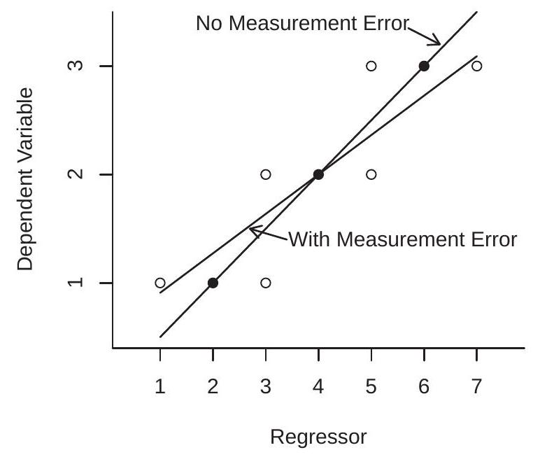
- Measurement Error
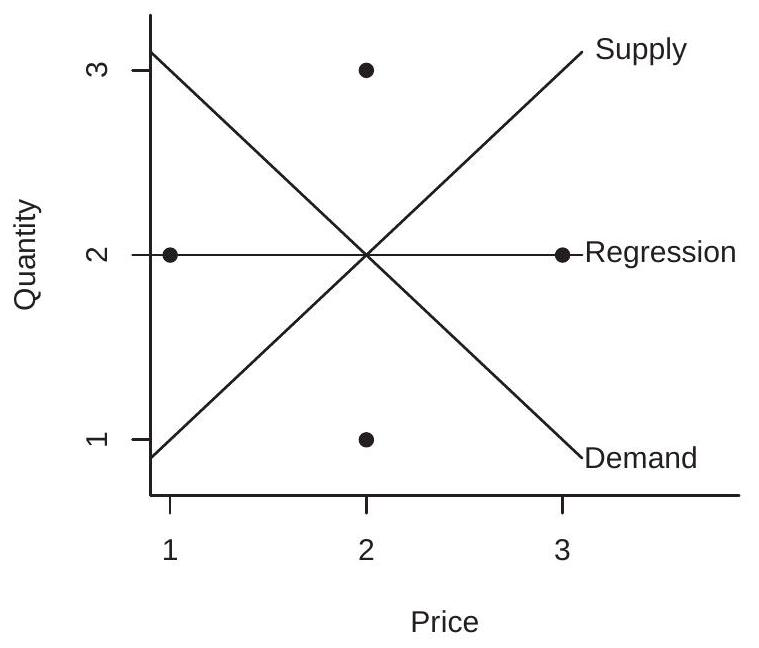
- Supply and Demand
Figure 12.1: Examples of Endogeneity
Example: Supply and Demand. The variables \(Q\) and \(P\) (quantity and price) are determined jointly by the demand equation
\[ Q=-\beta_{1} P+e_{1} \]
and the supply equation
\[ Q=\beta_{2} P+e_{2} \text {. } \]
Assume that \(e=\left(e_{1}, e_{2}\right)\) satisfies \(\mathbb{E}[e]=0\) and \(\mathbb{E}\left[e e^{\prime}\right]=\boldsymbol{I}_{2}\) (the latter for simplicity). The question is: if we regress \(Q\) on \(P\), what happens?
It is helpful to solve for \(Q\) and \(P\) in terms of the errors. In matrix notation,
\[ \left[\begin{array}{cc} 1 & \beta_{1} \\ 1 & -\beta_{2} \end{array}\right]\left(\begin{array}{l} Q \\ P \end{array}\right)=\left(\begin{array}{l} e_{1} \\ e_{2} \end{array}\right) \]
so
\[ \begin{aligned} \left(\begin{array}{l} Q \\ P \end{array}\right) &=\left[\begin{array}{cc} 1 & \beta_{1} \\ 1 & -\beta_{2} \end{array}\right]^{-1}\left(\begin{array}{c} e_{1} \\ e_{2} \end{array}\right) \\ &=\left[\begin{array}{cc} \beta_{2} & \beta_{1} \\ 1 & -1 \end{array}\right]\left(\begin{array}{l} e_{1} \\ e_{2} \end{array}\right)\left(\frac{1}{\beta_{1}+\beta_{2}}\right) \\ &=\left(\begin{array}{c} \left(\beta_{2} e_{1}+\beta_{1} e_{2}\right) /\left(\beta_{1}+\beta_{2}\right) \\ \left(e_{1}-e_{2}\right) /\left(\beta_{1}+\beta_{2}\right) \end{array}\right) . \end{aligned} \]
The projection of \(Q\) on \(P\) yields \(Q=\beta^{*} P+e^{*}\) with \(\mathbb{E}\left[P e^{*}\right]=0\) and the projection coefficient is
\[ \beta^{*}=\frac{\mathbb{E}[P Q]}{\mathbb{E}\left[P^{2}\right]}=\frac{\beta_{2}-\beta_{1}}{2} . \]
The projection coefficient \(\beta^{*}\) equals neither the demand slope \(\beta_{1}\) nor the supply slope \(\beta_{2}\), but equals an average of the two. (The fact that it is a simple average is an artifact of the covariance structure.)
The OLS estimator satisfies \(\widehat{\beta} \underset{p}{\rightarrow} \beta^{*}\) and the limit does not equal either \(\beta_{1}\) or \(\beta_{2}\). This is called simultaneous equations bias. This occurs generally when \(Y\) and \(X\) are jointly determined, as in a market equilibrium.
Generally, when both the dependent variable and a regressor are simultaneously determined then the regressor should be treated as endogenous.
To illustrate, Figure 12.1(b) draws a supply/demand model with Quantity on the y-axis and Price on the \(\mathrm{x}\)-axis. The supply and demand equations are \(Q=P+\varepsilon_{1}\) and \(Q=4-P-\varepsilon_{2}\), respectively. Suppose that the errors each have the Rademacher distribution \(\varepsilon \in\{-1,+1\}\). This model has four equilibrium outcomes, marked by the four points in the figure. The regression line through these four points has a slope of zero and is marked as “Regression”. This is what would be measured by a least squares regression of observed quantity on observed price. This is endogeneity bias due to simultaneity.
Example: Choice Variables as Regressors. Take the classic wage equation
\[ \log (\text { wage })=\beta \text { education }+e \]
with \(\beta\) the average causal effect of education on wages. If wages are affected by unobserved ability, and individuals with high ability self-select into higher education, then \(e\) contains unobserved ability, so education and \(e\) will be positively correlated. Hence education is endogenous. The positive correlation means that the linear projection coefficient \(\beta^{*}\) will be upward biased relative to the structural coefficient \(\beta\). Thus least squares (which is estimating the projection coefficient) will tend to over-estimate the causal effect of education on wages.
This type of endogeneity occurs generally when \(Y\) and \(X\) are both choices made by an economic agent, even if they are made at different points in time.
Generally, when both the dependent variable and a regressor are choice variables made by the same agent, the variables should be treated as endogenous.
This example was illustrated back in Figure \(2.8\) which displayed the joint distribution of wages and education of the population of Jennifers and Georges. In Figure 2.8, the plotted Average Causal Effect is the structural impact (on average in the population) of college education on wages. The plotted regression line has a larger slope, as it adds the endogeneity bias due to the fact that education is a choice variable.
12.4 Endogenous Regressors
We have defined endogeneity as the context where a regressor is correlated with the equation error. The converse of endogeneity is exogeneity. That is, we say a regressor \(X\) is exogenous for \(\beta\) if \(\mathbb{E}[X e]=\) 0 . In general the distinction in an economic model is that a regressor \(X\) is endogenous if it is jointly determined with \(Y\), while a regressor \(X\) is exogenous if it is determined separately from \(Y\).
In most applications only a subset of the regressors are treated as endogenous. Partition \(X=\left(X_{1}, X_{2}\right)\) with dimensions \(\left(k_{1}, k_{2}\right)\) so that \(X_{1}\) contains the exogenous regressors and \(X_{2}\) contains the endogenous regressors. As the dependent variable \(Y\) is also endogenous, we sometimes differentiate \(X_{2}\) by calling it the endogenous right-hand-side variable. Similarly partition \(\beta=\left(\beta_{1}, \beta_{2}\right)\). With this notation the structural equation is
\[ Y=X_{1}^{\prime} \beta_{1}+X_{2}^{\prime} \beta_{2}+e . \]
An alternative notation is as follows. Let \(Y_{2}=X_{2}\) be the endogenous regressors and rename the dependent variable \(Y\) as \(Y_{1}\). Then the structural equation is
\[ Y_{1}=X_{1}^{\prime} \beta_{1}+Y_{2}^{\prime} \beta_{2}+e . \]
This is especially useful so that the notation clarifies which variables are endogenous and which exogenous. We also write \(\vec{Y}=\left(Y_{1}, Y_{2}\right)\) as the set of endogenous variables. We use the notation \(\vec{Y}\) so that there is no confusion with \(Y\) as defined in (12.3).
The assumptions regarding the regressors and regression error are
\[ \begin{aligned} &\mathbb{E}\left[X_{1} e\right]=0 \\ &\mathbb{E}\left[Y_{2} e\right] \neq 0 . \end{aligned} \]
The endogenous regressors \(Y_{2}\) are the critical variables discussed in the examples of the previous section - simultaneous variables, choice variables, mis-measured regressors - that are potentially correlated with the equation error \(e\). In many applications \(k_{2}\) is small (1 or 2 ). The exogenous variables \(X_{1}\) are the remaining regressors (including the equation intercept) and can be low or high dimensional.
12.5 Instruments
To consistently estimate \(\beta\) we require additional information. One type of information which is commonly used in economic applications are what we call instruments.
Definition \(12.1\) The \(\ell \times 1\) random vector \(Z\) is an instrumental variable for (12.3) if
\[ \begin{aligned} \mathbb{E}[Z e] &=0 \\ \mathbb{E}\left[Z Z^{\prime}\right] &>0 \\ \operatorname{rank}\left(\mathbb{E}\left[Z X^{\prime}\right]\right) &=k . \end{aligned} \]
There are three components to the definition as given. The first (12.5) is that the instruments are uncorrelated with the regression error. The second (12.6) is a normalization which excludes linearly redundant instruments. The third (12.7) is often called the relevance condition and is essential for the identification of the model, as we discuss later. A necessary condition for (12.7) is that \(\ell \geq k\).
Condition (12.5) - that the instruments are uncorrelated with the equation error - is often described as that they are exogenous in the sense that they are determined outside the model for \(Y\).
Notice that the regressors \(X_{1}\) satisfy condition (12.5) and thus should be included as instrumental variables. They are therefore a subset of the variables \(Z\). Notationally we make the partition
\[ Z=\left(\begin{array}{l} Z_{1} \\ Z_{2} \end{array}\right)=\left(\begin{array}{c} X_{1} \\ Z_{2} \end{array}\right) \begin{aligned} &k_{1} \\ &\ell_{2} \end{aligned} . \]
Here, \(X_{1}=Z_{1}\) are the included exogenous variables and \(Z_{2}\) are the excluded exogenous variables. That is, \(Z_{2}\) are variables which could be included in the equation for \(Y\) (in the sense that they are uncorrelated with \(e\) ) yet can be excluded as they have true zero coefficients in the equation. With this notation we can also write the structural equation (12.4) as
\[ Y_{1}=Z_{1}^{\prime} \beta_{1}+Y_{2}^{\prime} \beta_{2}+e . \]
This is useful notation as it clarifies that the variable \(Z_{1}\) is exogenous and the variable \(Y_{2}\) is endogenous.
Many authors describe \(Z_{1}\) as the “exogenous variables”, \(Y_{2}\) as the “endogenous variables”, and \(Z_{2}\) as the “instrumental variables”.
We say that the model is just-identified if \(\ell=k\) and over-identified if \(\ell>k\).
What variables can be used as instrumental variables? From the definition \(\mathbb{E}[Z e]=0\) the instrument must be uncorrelated with the equation error, meaning that it is excluded from the structural equation as mentioned above. From the rank condition (12.7) it is also important that the instrumental variables be correlated with the endogenous variables \(Y_{2}\) after controlling for the other exogenous variables \(Z_{1}\). These two requirements are typically interpreted as requiring that the instruments be determined outside the system for \(\vec{Y}\), causally determine \(Y_{2}\), but do not causally determine \(Y_{1}\) except through \(Y_{2}\).
Let’s take the three examples given above.
Measurement error in the regressor. When \(X\) is a mis-measured version of \(Z\) a common choice for an instrument \(Z_{2}\) is an alternative measurement of \(Z\). For this \(Z_{2}\) to satisfy the property of an instrumental variable the measurement error in \(Z_{2}\) must be independent of that in \(X\).
Supply and Demand. An appropriate instrument for price \(P\) in a demand equation is a variable \(Z_{2}\) which influences supply but not demand. Such a variable affects the equilibrium values of \(P\) and \(Q\) but does not directly affect price except through quantity. Variables which affect supply but not demand are typically related to production costs.
An appropriate instrument for price in a supply equation is a variable which influences demand but not supply. Such a variable affects the equilibrium values of price and quantity but only affects price through quantity.
Choice Variable as Regressor. An ideal instrument affects the choice of the regressor (education) but does not directly influence the dependent variable (wages) except through the indirect effect on the regressor. We will discuss an example in the next section.
12.6 Example: College Proximity
In a influential paper David Card (1995) suggested if a potential student lives close to a college this reduces the cost of attendence and thereby raises the likelihood that the student will attend college. However, college proximity does not directly affect a student’s skills or abilities so should not have a direct effect on his or her market wage. These considerations suggest that college proximity can be used as an instrument for education in a wage regression. We use the simplest model reported in Card’s paper to illustrate the concepts of instrumental variables throughout the chapter.
Card used data from the National Longitudinal Survey of Young Men (NLSYM) for 1976. A baseline least squares wage regression for his data set is reported in the first column of Table 12.1. The dependent variable is the log of weekly earnings. The regressors are education (years of schooling), experience (years of work experience, calculated as age (years) less education \(+6\) ), experience \({ }^{2} / 100\), Black, south (an indicator for residence in the southern region of the U.S.), and urban (an indicator for residence in a standard metropolitan statistical area). We drop observations for which wage is missing. The remaining sample has 3,010 observations. His data is the file Card1995 on the textbook website. The point estimate obtained by least squares suggests an \(7 %\) increase in earnings for each year of education.
Table 12.1: Instrumental Variable Wage Regressions
| education | OLS | IV(a) | IV(b) | 2SLS(a) | 2SLS(b) | LIML |
|---|---|---|---|---|---|---|
| \(0.074\) | \(0.132\) | \(0.133\) | \(0.161\) | \(0.160\) | \(0.164\) | |
| \((0.004)\) | \((0.049)\) | \((0.051)\) | \((0.040)\) | \((0.041)\) | \((0.042)\) | |
| \(0.084\) | \(0.107\) | \(0.056\) | \(0.119\) | \(0.047\) | \(0.120\) | |
| experience \(2 / 100\) | \(-0.224\) | \(-0.228\) | \(-0.080\) | \(-0.231\) | \(-0.032\) | \(-0.231\) |
| \((0.032)\) | \((0.035)\) | \((0.133)\) | \((0.037)\) | \((0.127)\) | \((0.037)\) | |
| Black | \(-0.190\) | \(-0.131\) | \(-0.103\) | \(-0.102\) | \(-0.064\) | \(-0.099\) |
| \((0.017)\) | \((0.051)\) | \((0.075)\) | \((0.044)\) | \((0.061)\) | \((0.045)\) | |
| south | \(-0.125\) | \(-0.105\) | \(-0.098\) | \(-0.095\) | \(-0.086\) | \(-0.094\) |
| \((0.015)\) | \((0.023)\) | \((0.0284)\) | \((0.022)\) | \((0.026)\) | \((0.022)\) | |
| urban | \(0.161\) | \(0.131\) | \(0.108\) | \(0.116\) | \(0.083\) | \(0.115\) |
| \((0.015)\) | \((0.030)\) | \((0.049)\) | \((0.026)\) | \((0.041)\) | \((0.027)\) | |
| Sargan | \(0.82\) | \(0.52\) | \(0.82\) | |||
| p-value | \(0.37\) | \(0.47\) | \(0.37\) |
Notes:
IV(a) uses college as an instrument for education.
IV(b) uses college, age, and age \(^{2} / 100\) as instruments for education, experience, and experience \({ }^{2} / 100\).
2SLS(a) uses public and private as instruments for education.
\(2 \mathrm{SLS}(\mathrm{b})\) uses public, private, age, and age \({ }^{2}\) as instruments for education, experience, and experience \(^{2} / 100\).
LIML uses public and private as instruments for education.
As discussed in the previous sections it is reasonable to view years of education as a choice made by an individual and thus is likely endogenous for the structural return to education. This means that least squares is an estimate of a linear projection but is inconsistent for coefficient of a structural equation representing the causal impact of years of education on expected wages. Labor economics predicts that ability, education, and wages will be positively correlated. This suggests that the population projection coefficient estimated by least squares will be higher than the structural parameter (and hence upwards biased). However, the sign of the bias is uncertain because there are multiple regressors and there are other potential sources of endogeneity.
To instrument for the endogeneity of education, Card suggested that a reasonable instrument is a dummy variable indicating if the individual grew up near a college. We will consider three measures:
college Grew up in same county as a 4-year college
public Grew up in same county as a 4-year public college
private Grew up in same county as a 4-year private college.
12.7 Reduced Form
The reduced form is the relationship between the endogenous regressors \(Y_{2}\) and the instruments \(Z\). A linear reduced form model for \(Y_{2}\) is
\[ Y_{2}=\Gamma^{\prime} Z+u_{2}=\Gamma_{12}^{\prime} Z_{1}+\Gamma_{22}^{\prime} Z_{2}+u_{2} \]
This is a multivariate regression as introduced in Chapter 11 . The \(\ell \times k_{2}\) coefficient matrix \(\Gamma\) is defined by linear projection:
\[ \Gamma=\mathbb{E}\left[Z Z^{\prime}\right]^{-1} \mathbb{E}\left[Z Y_{2}^{\prime}\right] \]
This implies \(\mathbb{E}\left[Z u_{2}^{\prime}\right]=0\). The projection coefficient (12.11) is well defined and unique under (12.6).
We also construct the reduced form for \(Y_{1}\). Substitute (12.10) into (12.9) to obtain
\[ \begin{aligned} Y_{1} &=Z_{1}^{\prime} \beta_{1}+\left(\Gamma_{12}^{\prime} Z_{1}+\Gamma_{22}^{\prime} Z_{2}+u_{2}\right)^{\prime} \beta_{2}+e \\ &=Z_{1}^{\prime} \lambda_{1}+Z_{2}^{\prime} \lambda_{2}+u_{1} \\ &=Z^{\prime} \lambda+u_{1} \end{aligned} \]
where
\[ \begin{aligned} &\lambda_{1}=\beta_{1}+\Gamma_{12} \beta_{2} \\ &\lambda_{2}=\Gamma_{22} \beta_{2} \\ &u_{1}=u_{2}^{\prime} \beta_{2}+e . \end{aligned} \]
We can also write
\[ \lambda=\bar{\Gamma} \beta \]
where
\[ \bar{\Gamma}=\left[\begin{array}{cc} \boldsymbol{I}_{k_{1}} & \Gamma_{12} \\ 0 & \Gamma_{22} \end{array}\right]=\left[\begin{array}{cc} \boldsymbol{I}_{k_{1}} & \Gamma \\ 0 & \end{array}\right] . \]
Together, the reduced form equations for the system are
\[ \begin{aligned} &Y_{1}=\lambda^{\prime} Z+u_{1} \\ &Y_{2}=\Gamma^{\prime} Z+u_{2} . \end{aligned} \]
or
\[ \vec{Y}=\left[\begin{array}{cc} \lambda_{1}^{\prime} & \lambda_{2}^{\prime} \\ \Gamma_{12}^{\prime} & \Gamma_{22}^{\prime} \end{array}\right] Z+u \]
where \(u=\left(u_{1}, u_{2}\right)\).
The relationships (12.14)-(12.16) are critically important for understanding the identification of the structural parameters \(\beta_{1}\) and \(\beta_{2}\), as we discuss below. These equations show the tight relationship between the structural parameters \(\left(\beta_{1}\right.\) and \(\left.\beta_{2}\right)\) and the reduced form parameters \((\Gamma\) and \(\lambda)\).
The reduced form equations are projections so the coefficients may be estimated by least squares (see Chapter 11). The least squares estimators of (12.11) and (12.13) are
\[ \begin{aligned} &\widehat{\Gamma}=\left(\sum_{i=1}^{n} Z_{i} Z_{i}^{\prime}\right)^{-1}\left(\sum_{i=1}^{n} Z_{i} Y_{2 i}^{\prime}\right) \\ &\widehat{\lambda}=\left(\sum_{i=1}^{n} Z_{i} Z_{i}^{\prime}\right)^{-1}\left(\sum_{i=1}^{n} Z_{i} Y_{1 i}\right) . \end{aligned} \]
12.8 Identification
A parameter is identified if it is a unique function of the probability distribution of the observables. One way to show that a parameter is identified is to write it as an explicit function of population moments. For example, the reduced form coefficient matrices \(\Gamma\) and \(\lambda\) are identified because they can be written as explicit functions of the moments of the variables \((Y, X, Z)\). That is,
\[ \begin{aligned} &\Gamma=\mathbb{E}\left[Z Z^{\prime}\right]^{-1} \mathbb{E}\left[Z Y_{2}^{\prime}\right] \\ &\lambda=\mathbb{E}\left[Z Z^{\prime}\right]^{-1} \mathbb{E}\left[Z Y_{1}\right] . \end{aligned} \]
These are uniquely determined by the probability distribution of \(\left(Y_{1}, Y_{2}, Z\right)\) if Definition \(12.1\) holds, because this includes the requirement that \(\mathbb{E}\left[Z Z^{\prime}\right]\) is invertible.
We are interested in the structural parameter \(\beta\). It relates to \((\lambda, \Gamma)\) through (12.16). \(\beta\) is identified if it uniquely determined by this relation. This is a set of \(\ell\) equations with \(k\) unknowns with \(\ell \geq k\). From linear algebra we know that there is a unique solution if and only if \(\bar{\Gamma}\) has full rank \(k\).
\[ \operatorname{rank}(\bar{\Gamma})=k . \]
Under (12.22) \(\beta\) can be uniquely solved from (12.16). If (12.22) fails then (12.16) has fewer equations than coefficients so there is not a unique solution.
We can write \(\bar{\Gamma}=\mathbb{E}\left[Z Z^{\prime}\right]^{-1} \mathbb{E}\left[Z X^{\prime}\right]\). Combining this with (12.16) we obtain
\[ \mathbb{E}\left[Z Z^{\prime}\right]^{-1} \mathbb{E}\left[Z Y_{1}\right]=\mathbb{E}\left[Z Z^{\prime}\right]^{-1} \mathbb{E}\left[Z X^{\prime}\right] \beta \]
or
\[ \mathbb{E}\left[Z Y_{1}\right]=\mathbb{E}\left[Z X^{\prime}\right] \beta \]
which is a set of \(\ell\) equations with \(k\) unknowns. This has a unique solution if (and only if)
\[ \operatorname{rank}\left(\mathbb{E}\left[Z X^{\prime}\right]\right)=k \]
which was listed in (12.7) as a condition of Definition 12.1. (Indeed, this is why it was listed as part of the definition.) We can also see that (12.22) and (12.23) are equivalent ways of expressing the same requirement. If this condition fails then \(\beta\) will not be identified. The condition (12.22)-(12.23) is called the relevance condition.
It is useful to have explicit expressions for the solution \(\beta\). The easiest case is when \(\ell=k\). Then (12.22) implies \(\bar{\Gamma}\) is invertible so the structural parameter equals \(\beta=\bar{\Gamma}^{-1} \lambda\). It is a unique solution because \(\bar{\Gamma}\) and \(\lambda\) are unique and \(\bar{\Gamma}\) is invertible.
When \(\ell>k\) we can solve for \(\beta\) by applying least squares to the system of equations \(\lambda=\bar{\Gamma} \beta\). This is \(\ell\) equations with \(k\) unknowns and no error. The least squares solution is \(\beta=\left(\bar{\Gamma}^{\prime} \bar{\Gamma}\right)^{-1} \bar{\Gamma}^{\prime} \lambda\). Under (12.22) the matrix \(\bar{\Gamma}^{\prime} \bar{\Gamma}\) is invertible so the solution is unique.
\(\beta\) is identified if \(\operatorname{rank}(\bar{\Gamma})=k\), which is true if and only if \(\operatorname{rank}\left(\Gamma_{22}\right)=k_{2}\) (by the upper-diagonal structure of \(\bar{\Gamma})\). Thus the key to identification of the model rests on the \(\ell_{2} \times k_{2}\) matrix \(\Gamma_{22}\) in (12.10). To see this, recall the reduced form relationships (12.14)-(12.15). We can see that \(\beta_{2}\) is identified from (12.15) alone, and the necessary and sufficient condition is \(\operatorname{rank}\left(\Gamma_{22}\right)=k_{2}\). If this is satisfied then the solution equals \(\beta_{2}=\left(\Gamma_{22}^{\prime} \Gamma_{22}\right)^{-1} \Gamma_{22}^{\prime} \lambda_{2} \cdot \beta_{1}\) is identified from this and (12.14), with the explicit solution \(\beta_{1}=\lambda_{1}-\Gamma_{12}\left(\Gamma_{22}^{\prime} \Gamma_{22}\right)^{-1} \Gamma_{22}^{\prime} \lambda_{2}\). In the just-identified case \(\left(\ell_{2}=k_{2}\right)\) these equations simplify as \(\beta_{2}=\Gamma_{22}^{-1} \lambda_{2}\) and \(\beta_{1}=\lambda_{1}-\Gamma_{12} \Gamma_{22}^{-1} \lambda_{2}\)
12.9 Instrumental Variables Estimator
In this section we consider the special case where the model is just-identified so that \(\ell=k\).
The assumption that \(Z\) is an instrumental variable implies that \(\mathbb{E}[Z e]=0\). Making the substitution \(e=Y_{1}-X^{\prime} \beta\) we find \(\mathbb{E}\left[Z\left(Y_{1}-X^{\prime} \beta\right)\right]=0\). Expanding,
\[ \mathbb{E}\left[Z Y_{1}\right]-\mathbb{E}\left[Z X^{\prime}\right] \beta=0 . \]
This is a system of \(\ell=k\) equations and \(k\) unknowns. Solving for \(\beta\) we find
\[ \beta=\left(\mathbb{E}\left[Z X^{\prime}\right]\right)^{-1} \mathbb{E}\left[Z Y_{1}\right] . \]
This requires that the matrix \(\mathbb{E}\left[Z X^{\prime}\right]\) is invertible, which holds under (12.7) or equivalently (12.23).
The instrumental variables (IV) estimator \(\beta\) replaces population by sample moments. We find
\[ \begin{aligned} \widehat{\beta}_{\mathrm{iv}} &=\left(\frac{1}{n} \sum_{i=1}^{n} Z_{i} X_{i}^{\prime}\right)^{-1}\left(\frac{1}{n} \sum_{i=1}^{n} Z_{i} Y_{1 i}\right) \\ &=\left(\sum_{i=1}^{n} Z_{i} X_{i}^{\prime}\right)^{-1}\left(\sum_{i=1}^{n} Z_{i} Y_{1 i}\right) . \end{aligned} \]
More generally, given any variable \(W \in \mathbb{R}^{k}\) it is common to refer to the estimator
\[ \widehat{\beta}_{\mathrm{iv}}=\left(\sum_{i=1}^{n} W_{i} X_{i}^{\prime}\right)^{-1}\left(\sum_{i=1}^{n} W_{i} Y_{1 i}\right) \]
as the IV estimator for \(\beta\) using the instrument \(W\).
Alternatively, recall that when \(\ell=k\) the structural parameter can be written as a function of the reduced form parameters as \(\beta=\bar{\Gamma}^{-1} \lambda\). Replacing \(\bar{\Gamma}\) and \(\lambda\) by their least squares estimators (12.18)-(12.19) we can construct what is called the Indirect Least Squares (ILS) estimator. Using the matrix algebra representations
\[ \begin{aligned} \widehat{\beta}_{\mathrm{ils}} &=\widehat{\bar{\Gamma}}^{-1} \widehat{\lambda} \\ &=\left(\left(\boldsymbol{Z}^{\prime} \boldsymbol{Z}\right)^{-1}\left(\boldsymbol{Z}^{\prime} \boldsymbol{X}\right)\right)^{-1}\left(\left(\boldsymbol{Z}^{\prime} \boldsymbol{Z}\right)^{-1}\left(\boldsymbol{Z}^{\prime} \boldsymbol{Y}_{1}\right)\right) \\ &=\left(\boldsymbol{Z}^{\prime} \boldsymbol{X}\right)^{-1}\left(\boldsymbol{Z}^{\prime} \boldsymbol{Z}\right)\left(\boldsymbol{Z}^{\prime} \boldsymbol{Z}\right)^{-1}\left(\boldsymbol{Z}^{\prime} \boldsymbol{Y}_{1}\right) \\ &=\left(\boldsymbol{Z}^{\prime} \boldsymbol{X}\right)^{-1}\left(\boldsymbol{Z}^{\prime} \boldsymbol{Y}_{1}\right) . \end{aligned} \]
We see that this equals the IV estimator (12.24). Thus the ILS and IV estimators are identical.
Given the IV estimator we define the residual \(\widehat{e}_{i}=Y_{1 i}-X_{i}^{\prime} \widehat{\beta}_{\mathrm{iv}}\). It satisfies
\[ \boldsymbol{Z}^{\prime} \widehat{\boldsymbol{e}}=\boldsymbol{Z}^{\prime} \boldsymbol{Y}_{1}-\boldsymbol{Z}^{\prime} \boldsymbol{X}\left(\boldsymbol{Z}^{\prime} \boldsymbol{X}\right)^{-1}\left(\boldsymbol{Z}^{\prime} \boldsymbol{Y}_{1}\right)=0 \]
Since \(Z\) includes an intercept this means that the residuals sum to zero and are uncorrelated with the included and excluded instruments.
To illustrate IV regression we estimate the reduced form equations, treating education as endogenous and using college as an instrumental variable. The reduced form equations for log(wage) and education are reported in the first and second columns of Table 12.2. Table 12.2: Reduced Form Regressions
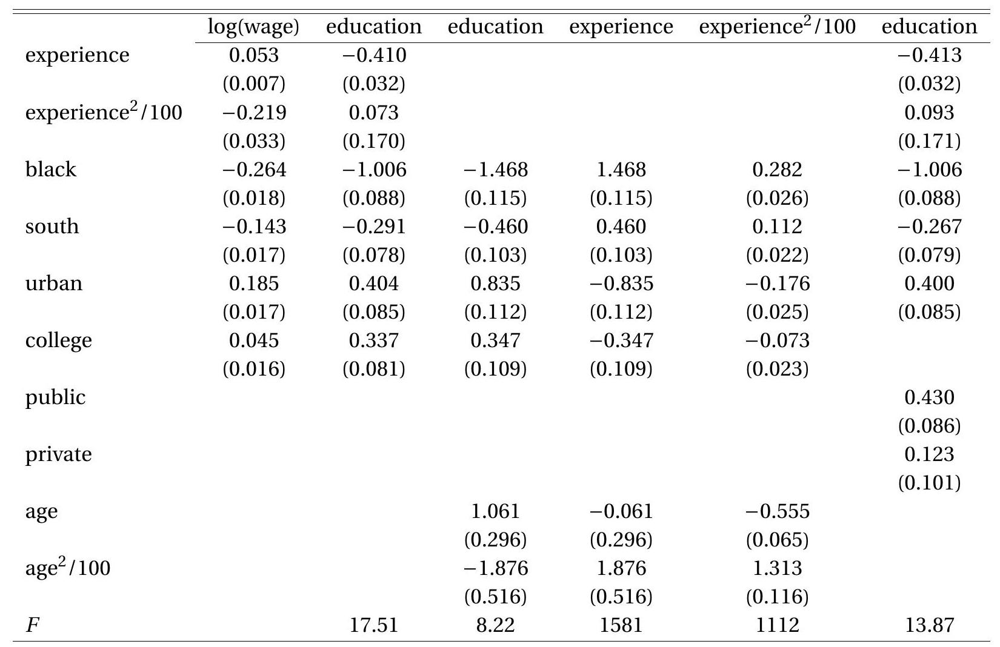
Of particular interest is the equation for the endogenous regressor education, and the coefficients for the excluded instruments - in this case college. The estimated coefficient equals \(0.337\) with a small standard error. This implies that growing up near a 4-year college increases average educational attainment by \(0.3\) years. This seems to be a reasonable magnitude.
Since the structural equation is just-identified with one right-hand-side endogenous variable the ILS/IV estimate for the education coefficient is the ratio of the coefficient estimates for the instrument college in the two equations, e.g. \(0.045 / 0.337=0.13\), implying a \(13 %\) return to each year of education. This is substantially greater than the \(7 %\) least squares estimate from the first column of Table 12.1. The IV estimates of the full equation are reported in the second column of Table 12.1. One first reaction is surprise that the IV estimate is larger than the OLS estimate. The endogeneity of educational choice should lead to upward bias in the OLS estimator, which predicts that the IV estimate should have been smaller than the OLS estimator. An alternative explanation may be needed. One possibility is heterogeneous education effects (when the education coefficient \(\beta\) is heterogenous across individuals). In Section \(12.34\) we show that in this context the IV estimator picks up this treatment effect for a subset of the population, and this may explain why IV estimation results in a larger estimated coefficient.
Card (1995) also points out that if education is endogenous then so is our measure of experience as it is calculated by subtracting education from age. He suggests that we can use the variables age and age \({ }^{2}\) as instruments for experience and experience \({ }^{2}\). The age variables are exogenous (not choice variables) yet highly correlated with experience and experience \({ }^{2}\). Notice that this approach treats experience \({ }^{2}\) as a variable separate from experience. Indeed, this is the correct approach.
Following this recommendation we now have three endogenous regressors and three instruments. We present the three reduced form equations for the three endogenous regressors in the third through fifth columns of Table 12.2. It is interesting to compare the equations for education and experience. The two sets of coefficients are simply the sign change of the other with the exception of the coefficient on age. Indeed this must be the case because the three variables are linearly related. Does this cause a problem for 2SLS? Fortunately, no. The fact that the coefficient on age is not simply a sign change means that the equations are not linearly singular. Hence Assumption (12.22) is not violated.
The IV estimates using the three instruments college, age, and age \({ }^{2}\) for the endogenous regressors education, experience, and experience \({ }^{2}\) is presented in the third column of Table 12.1. The estimate of the returns to schooling is not affected by this change in the instrument set, but the estimated return to experience profile flattens (the quadratic effect diminishes).
The IV estimator may be calculated in Stata using the ivregress 2 sls command.
12.10 Demeaned Representation
Does the well-known demeaned representation for linear regression (3.18) carry over to the IV estimator? To see, write the linear projection equation in the format \(Y_{1}=X^{\prime} \beta+\alpha+e\) where \(\alpha\) is the intercept and \(X\) does not contain a constant. Similarly, partition the instrument as \((1, Z)\) where \(Z\) does not contain a constant. We can write the IV estimator for the \(i^{t h}\) equation as
\[ Y_{1 i}=X_{i}^{\prime} \widehat{\beta}_{\mathrm{iv}}+\widehat{\alpha}_{\mathrm{iv}}+\widehat{e}_{i} . \]
The orthogonality (12.25) implies the two-equation system
\[ \begin{aligned} &\sum_{i=1}^{n}\left(Y_{1 i}-X_{i}^{\prime} \widehat{\beta}_{\mathrm{iv}}-\widehat{\alpha}_{\mathrm{iv}}\right)=0 \\ &\sum_{i=1}^{n} Z_{i}\left(Y_{1 i}-X_{i}^{\prime} \widehat{\beta}_{\mathrm{iv}}-\widehat{\alpha}_{\mathrm{iv}}\right)=0 . \end{aligned} \]
The first equation implies \(\widehat{\alpha}_{\mathrm{iv}}=\overline{Y_{1}}-\bar{X}^{\prime} \widehat{\beta}_{\mathrm{iv}}\). Substituting into the second equation
\[ \sum_{i=1}^{n} Z_{i}\left(\left(Y_{1 i}-\overline{Y_{1}}\right)-\left(X_{i}-\bar{X}\right)^{\prime} \widehat{\beta}_{\mathrm{iv}}\right) \]
and solving for \(\widehat{\beta}_{\text {iv }}\) we find
\[ \begin{aligned} \widehat{\beta}_{\mathrm{iv}} &=\left(\sum_{i=1}^{n} Z_{i}\left(X_{i}-\bar{X}\right)^{\prime}\right)^{-1}\left(\sum_{i=1}^{n} Z_{i}\left(Y_{1 i}-\bar{Y}_{1}\right)\right) \\ &=\left(\sum_{i=1}^{n}\left(Z_{i}-\bar{Z}\right)\left(X_{i}-\bar{X}\right)^{\prime}\right)^{-1}\left(\sum_{i=1}^{n}\left(Z_{i}-\bar{Z}\right)\left(Y_{1 i}-\bar{Y}_{1}\right)\right) . \end{aligned} \]
Thus the demeaning equations for least squares carry over to the IV estimator. The coefficient estimator \(\widehat{\beta}_{\text {iv }}\) is a function only of the demeaned data.
12.11 Wald Estimator
In many cases including the Card proximity example the excluded instrument is a binary (dummy) variable. Let’s focus on that case and suppose that the model has just one endogenous regressor and no other regressors beyond the intercept. The model can be written as \(Y=X \beta+\alpha+e\) with \(\mathbb{E}[e \mid Z]=0\) and \(Z\) binary. Take expectations of the structural equation given \(Z=1\) and \(Z=0\), respectively. We obtain
\[ \begin{aligned} &\mathbb{E}[Y \mid Z=1]=\mathbb{E}[X \mid Z=1] \beta+\alpha \\ &\mathbb{E}[Y \mid Z=0]=\mathbb{E}[X \mid Z=0] \beta+\alpha . \end{aligned} \]
Subtracting and dividing we obtain an expression for the slope coefficient
\[ \beta=\frac{\mathbb{E}[Y \mid Z=1]-\mathbb{E}[Y \mid Z=0]}{\mathbb{E}[X \mid Z=1]-\mathbb{E}[X \mid Z=0]} . \]
The natural moment estimator replaces the expectations by the averages within the “grouped data” where \(Z_{i}=1\) and \(Z_{i}=0\), respectively. That is, define the group means
\[ \begin{array}{ll} \bar{Y}_{1}=\frac{\sum_{i=1}^{n} Z_{i} Y_{i}}{\sum_{i=1}^{n} Z_{i}}, & \bar{Y}_{0}=\frac{\sum_{i=1}^{n}\left(1-Z_{i}\right) Y_{i}}{\sum_{i=1}^{n}\left(1-Z_{i}\right)} \\ \bar{X}_{1}=\frac{\sum_{i=1}^{n} Z_{i} X_{i}}{\sum_{i=1}^{n} Z_{i}}, & \bar{X}_{0}=\frac{\sum_{i=1}^{n}\left(1-Z_{i}\right) X_{i}}{\sum_{i=1}^{n}\left(1-Z_{i}\right)} \end{array} \]
and the moment estimator
\[ \widehat{\beta}=\frac{\bar{Y}_{1}-\bar{Y}_{0}}{\bar{X}_{1}-\bar{X}_{0}} . \]
This is the “Wald estimator” of Wald (1940).
These expressions are rather insightful. (12.27) shows that the structural slope coefficient is the expected change in \(Y\) due to changing the instrument divided by the expected change in \(X\) due to changing the instrument. Informally, it is the change in \(Y\) (due to \(Z\) ) over the change in \(X\) (due to \(Z\) ). Equation (12.28) shows that the slope coefficient can be estimated by the ratio of differences in means.
The expression (12.28) may appear like a distinct estimator from the IV estimator \(\widehat{\beta}_{\text {iv }}\) but it turns out that they are the same. That is, \(\widehat{\beta}=\widehat{\beta}_{\mathrm{iv}}\). To see this, use (12.26) to find
\[ \widehat{\beta}_{\mathrm{iv}}=\frac{\sum_{i=1}^{n} Z_{i}\left(Y_{i}-\bar{Y}\right)}{\sum_{i=1}^{n} Z_{i}\left(X_{i}-\bar{X}\right)}=\frac{\bar{Y}_{1}-\bar{Y}}{\bar{X}_{1}-\bar{X}} . \]
Then notice
\[ \bar{Y}_{1}-\bar{Y}=\bar{Y}_{1}-\left(\frac{1}{n} \sum_{i=1}^{n} Z_{i} \bar{Y}_{1}+\frac{1}{n} \sum_{i=1}^{n}\left(1-Z_{i}\right) \bar{Y}_{0}\right)=(1-\bar{Z})\left(\bar{Y}_{1}-\bar{Y}_{0}\right) \]
and similarly
\[ \bar{X}_{1}-\bar{X}=(1-\bar{Z})\left(\bar{X}_{1}-\bar{X}_{0}\right) \]
and hence
\[ \widehat{\beta}_{\mathrm{iv}}=\frac{(1-\bar{Z})\left(\bar{Y}_{1}-\bar{Y}_{0}\right)}{(1-\bar{Z})\left(\bar{X}_{1}-\bar{X}_{0}\right)}=\widehat{\beta} \]
as defined in (12.28). Thus the Wald estimator equals the IV estimator.
We can illustrate using the Card proximity example. If we estimate a simple IV model with no covariates we obtain the estimate \(\widehat{\beta}_{\text {iv }}=0.19\). If we estimate the group-mean of log wages and education based on the instrument college we find
| near college | not near college | difference | |
|---|---|---|---|
| \(\log (\) wage) | \(6.311\) | \(6.156\) | \(0.155\) |
| education | \(13.527\) | \(12.698\) | \(0.829\) |
| ratio | \(0.19\) |
Based on these estimates the Wald estimator of the slope coefficient is \((6.311-6.156) /(13.527-12.698)=\) \(0.155 / 0.829=0.19\), the same as the IV estimator.
12.12 Two-Stage Least Squares
The IV estimator described in the previous section presumed \(\ell=k\). Now we allow the general case of \(\ell \geq k\). Examining the reduced-form equation (12.13) we see
\[ \begin{aligned} Y_{1} &=Z^{\prime} \bar{\Gamma} \beta+u_{1} \\ \mathbb{E}\left[Z u_{1}\right] &=0 . \end{aligned} \]
Defining \(W=\bar{\Gamma}^{\prime} Z\) we can write this as
\[ \begin{aligned} Y_{1} &=W^{\prime} \beta+u_{1} \\ \mathbb{E}\left[W u_{1}\right] &=0 . \end{aligned} \]
One way of thinking about this is that \(Z\) is set of candidate instruments. The instrument vector \(W=\bar{\Gamma}^{\prime} Z\) is a \(k\)-dimentional set of linear combinations.
Suppose that \(\bar{\Gamma}\) were known. Then we would estimate \(\beta\) by least squares of \(Y_{1}\) on \(W=\bar{\Gamma}^{\prime} Z\)
\[ \widehat{\beta}=\left(\boldsymbol{W}^{\prime} \boldsymbol{W}\right)^{-1}\left(\boldsymbol{W}^{\prime} \boldsymbol{Y}\right)=\left(\bar{\Gamma}^{\prime} \boldsymbol{Z}^{\prime} \boldsymbol{Z} \bar{\Gamma}\right)^{-1}\left(\bar{\Gamma}^{\prime} \boldsymbol{Z}^{\prime} \boldsymbol{Y}_{1}\right) . \]
While this is infeasible we can estimate \(\bar{\Gamma}\) from the reduced form regression. Replacing \(\bar{\Gamma}\) with its estimator \(\widehat{\Gamma}=\left(\boldsymbol{Z}^{\prime} \boldsymbol{Z}\right)^{-1}\left(\boldsymbol{Z}^{\prime} \boldsymbol{X}\right)\) we obtain
\[ \begin{aligned} \widehat{\beta}_{2 \text { sls }} &=\left(\widehat{\Gamma}^{\prime} \boldsymbol{Z}^{\prime} \boldsymbol{Z} \widehat{\Gamma}\right)^{-1}\left(\widehat{\Gamma}^{\prime} \boldsymbol{Z}^{\prime} \boldsymbol{Y}_{1}\right) \\ &=\left(\boldsymbol{X}^{\prime} \boldsymbol{Z}\left(\boldsymbol{Z}^{\prime} \boldsymbol{Z}\right)^{-1} \boldsymbol{Z}^{\prime} \boldsymbol{Z}\left(\boldsymbol{Z}^{\prime} \boldsymbol{Z}\right)^{-\mathbf{1}} \boldsymbol{Z}^{\prime} \boldsymbol{X}\right)^{-1} \boldsymbol{X}^{\prime} \boldsymbol{Z}\left(\boldsymbol{Z}^{\prime} \boldsymbol{Z}\right)^{-1} \boldsymbol{Z}^{\prime} \boldsymbol{Y}_{1} \\ &=\left(\boldsymbol{X}^{\prime} \boldsymbol{Z}\left(\boldsymbol{Z}^{\prime} \boldsymbol{Z}\right)^{-1} \boldsymbol{Z}^{\prime} \boldsymbol{X}\right)^{-1} \boldsymbol{X}^{\prime} \boldsymbol{Z}\left(\boldsymbol{Z}^{\prime} \boldsymbol{Z}\right)^{-1} \boldsymbol{Z}^{\prime} \boldsymbol{Y}_{1} \end{aligned} \]
This is called the two-stage-least squares (2SLS) estimator. It was originally proposed by Theil (1953) and Basmann (1957) and is a standard estimator for linear equations with instruments.
If the model is just-identified, so that \(k=\ell\), then 2SLS simplifies to the IV estimator of the previous section. Since the matrices \(\boldsymbol{X}^{\prime} \boldsymbol{Z}\) and \(\boldsymbol{Z}^{\prime} \boldsymbol{X}\) are square we can factor
\[ \begin{aligned} \left(\boldsymbol{X}^{\prime} \boldsymbol{Z}\left(\boldsymbol{Z}^{\prime} \boldsymbol{Z}\right)^{-1} \boldsymbol{Z}^{\prime} \boldsymbol{X}\right)^{-1} &=\left(\boldsymbol{Z}^{\prime} \boldsymbol{X}\right)^{-1}\left(\left(\boldsymbol{Z}^{\prime} \boldsymbol{Z}\right)^{-1}\right)^{-1}\left(\boldsymbol{X}^{\prime} \boldsymbol{Z}\right)^{-1} \\ &=\left(\boldsymbol{Z}^{\prime} \boldsymbol{X}\right)^{-1}\left(\boldsymbol{Z}^{\prime} \boldsymbol{Z}\right)\left(\boldsymbol{X}^{\prime} \boldsymbol{Z}\right)^{-1} \end{aligned} \]
(Once again, this only works when \(k=\ell\).) Then
\[ \begin{aligned} \widehat{\beta}_{2 \text { sls }} &=\left(\boldsymbol{X}^{\prime} \boldsymbol{Z}\left(\boldsymbol{Z}^{\prime} \boldsymbol{Z}\right)^{-1} \boldsymbol{Z}^{\prime} \boldsymbol{X}\right)^{-1} \boldsymbol{X}^{\prime} \boldsymbol{Z}\left(\boldsymbol{Z}^{\prime} \boldsymbol{Z}\right)^{-1} \boldsymbol{Z}^{\prime} \boldsymbol{Y}_{1} \\ &=\left(\boldsymbol{Z}^{\prime} \boldsymbol{X}\right)^{-1}\left(\boldsymbol{Z}^{\prime} \boldsymbol{Z}\right)\left(\boldsymbol{X}^{\prime} \boldsymbol{Z}\right)^{-1} \boldsymbol{X}^{\prime} \boldsymbol{Z}\left(\boldsymbol{Z}^{\prime} \boldsymbol{Z}\right)^{-1} \boldsymbol{Z}^{\prime} \boldsymbol{Y}_{1} \\ &=\left(\boldsymbol{Z}^{\prime} \boldsymbol{X}\right)^{-1}\left(\boldsymbol{Z}^{\prime} \boldsymbol{Z}\right)\left(\boldsymbol{Z}^{\prime} \boldsymbol{Z}\right)^{-1} \boldsymbol{Z}^{\prime} \boldsymbol{Y}_{1} \\ &=\left(\boldsymbol{Z}^{\prime} \boldsymbol{X}\right)^{-1} \boldsymbol{Z}^{\prime} \boldsymbol{Y}_{1}=\widehat{\beta}_{\mathrm{iv}} \end{aligned} \]
as claimed. This shows that the 2SLS estimator as defined in (12.29) is a generalization of the IV estimator defined in (12.24).
There are several alternative representations of the 2SLS estimator which we now describe. First, defining the projection matrix
\[ \boldsymbol{P}_{\boldsymbol{Z}}=\boldsymbol{Z}\left(\boldsymbol{Z}^{\prime} \boldsymbol{Z}\right)^{-1} \boldsymbol{Z}^{\prime} \]
we can write the 2SLS estimator more compactly as
\[ \widehat{\beta}_{2 \text { sls }}=\left(\boldsymbol{X}^{\prime} \boldsymbol{P}_{\boldsymbol{Z}} \boldsymbol{X}\right)^{-1} \boldsymbol{X}^{\prime} \boldsymbol{P}_{\boldsymbol{Z}} \boldsymbol{Y}_{1} . \]
This is useful for representation and derivations but is not useful for computation as the \(n \times n\) matrix \(\boldsymbol{P}_{\boldsymbol{Z}}\) is too large to compute when \(n\) is large.
Second, define the fitted values for \(\boldsymbol{X}\) from the reduced form \(\widehat{\boldsymbol{X}}=\boldsymbol{P}_{\boldsymbol{Z}} \boldsymbol{X}=\boldsymbol{Z} \widehat{\Gamma}\). Then the 2SLS estimator can be written as
\[ \widehat{\beta}_{2 \text { sls }}=\left(\widehat{\boldsymbol{X}}^{\prime} \boldsymbol{X}\right)^{-1} \widehat{\boldsymbol{X}}^{\prime} \boldsymbol{Y}_{1} \]
This is an IV estimator as defined in the previous section using \(\widehat{X}\) as an instrument for \(X\).
Third, because \(\boldsymbol{P}_{Z}\) is idempotent we can also write the 2SLS estimator as
\[ \widehat{\beta}_{2 \text { sls }}=\left(\boldsymbol{X}^{\prime} \boldsymbol{P}_{\boldsymbol{Z}} \boldsymbol{P}_{\boldsymbol{Z}} \boldsymbol{X}\right)^{-1} \boldsymbol{X}^{\prime} \boldsymbol{P}_{\boldsymbol{Z}} \boldsymbol{Y}_{1}=\left(\widehat{\boldsymbol{X}}^{\prime} \widehat{\boldsymbol{X}}\right)^{-1} \widehat{\boldsymbol{X}}^{\prime} \boldsymbol{Y}_{1} \]
which is the least squares estimator obtained by regressing \(Y_{1}\) on the fitted values \(\widehat{X}\).
This is the source of the “two-stage” name as it can be computed as follows.
Regress \(X\) on \(Z\) to obtain the fitted \(\widehat{X}: \widehat{\Gamma}=\left(\boldsymbol{Z}^{\prime} \boldsymbol{Z}\right)^{-1}\left(\boldsymbol{Z}^{\prime} \boldsymbol{X}\right)\) and \(\widehat{\boldsymbol{X}}=\boldsymbol{Z} \widehat{\Gamma}=\boldsymbol{P}_{\boldsymbol{Z}} \boldsymbol{X}\).
Regress \(Y_{1}\) on \(\widehat{X}: \widehat{\beta}_{2 s l s}=\left(\widehat{\boldsymbol{X}}^{\prime} \widehat{\boldsymbol{X}}\right)^{-1} \widehat{\boldsymbol{X}}^{\prime} \boldsymbol{Y}_{1}\)
It is useful to scrutinize the projection \(\widehat{\boldsymbol{X}}\). Recall, \(\boldsymbol{X}=\left[\boldsymbol{Z}_{1}, \boldsymbol{Y}_{2}\right]\) and \(\boldsymbol{Z}=\left[\boldsymbol{Z}_{1}, \boldsymbol{Z}_{2}\right]\). Notice \(\widehat{\boldsymbol{X}}_{1}=\boldsymbol{P}_{\boldsymbol{Z}} \boldsymbol{Z}_{1}=\) \(Z_{1}\) because \(Z_{1}\) lies in the span of \(\boldsymbol{Z}\). Then \(\widehat{\boldsymbol{X}}=\left[\widehat{\boldsymbol{X}}_{1}, \widehat{\boldsymbol{Y}}_{2}\right]=\left[\boldsymbol{Z}_{1}, \widehat{\boldsymbol{Y}}_{2}\right]\). This shows that in the second stage we regress \(Y_{1}\) on \(Z_{1}\) and \(\widehat{Y}_{2}\). This means that only the endogenous variables \(Y_{2}\) are replaced by their fitted values, \(\widehat{Y}_{2}=\widehat{\Gamma}_{12}^{\prime} Z_{1}+\widehat{\Gamma}_{22}^{\prime} Z_{2}\).
A fourth representation of 2SLS can be obtained using the FWL Theorem. The third representation and following discussion showed that 2SLS is obtained as least squares of \(Y_{1}\) on the fitted values \(\left(Z_{1}, \widehat{Y}_{2}\right)\). Hence the coefficient \(\widehat{\beta}_{2}\) on the endogenous variables can be found by residual regression. Set \(\boldsymbol{P}_{1}=\) \(Z_{1}\left(Z_{1}^{\prime} Z_{1}\right)^{-1} Z_{1}^{\prime}\). Applying the FWL theorem we obtain
\[ \begin{aligned} \widehat{\beta}_{2} &=\left(\widehat{\boldsymbol{Y}}_{2}^{\prime}\left(\boldsymbol{I}_{n}-\boldsymbol{P}_{1}\right) \widehat{\boldsymbol{Y}}_{2}\right)^{-1}\left(\widehat{\boldsymbol{Y}}_{2}^{\prime}\left(\boldsymbol{I}_{n}-\boldsymbol{P}_{1}\right) \boldsymbol{Y}_{1}\right) \\ &=\left(\boldsymbol{Y}_{2}^{\prime} \boldsymbol{P}_{\boldsymbol{Z}}\left(\boldsymbol{I}_{n}-\boldsymbol{P}_{1}\right) \boldsymbol{P}_{\boldsymbol{Z}} \boldsymbol{Y}_{2}\right)^{-1}\left(\boldsymbol{Y}_{2}^{\prime} \boldsymbol{P}_{\boldsymbol{Z}}\left(\boldsymbol{I}_{n}-\boldsymbol{P}_{1}\right) \boldsymbol{Y}_{1}\right) \\ &=\left(\boldsymbol{Y}_{2}^{\prime}\left(\boldsymbol{P}_{\boldsymbol{Z}}-\boldsymbol{P}_{1}\right) \boldsymbol{Y}_{2}\right)^{-1}\left(\boldsymbol{Y}_{2}^{\prime}\left(\boldsymbol{P}_{\boldsymbol{Z}}-\boldsymbol{P}_{1}\right) \boldsymbol{Y}_{1}\right) \end{aligned} \]
because \(\boldsymbol{P}_{Z} \boldsymbol{P}_{1}=\boldsymbol{P}_{1}\).
A fifth representation can be obtained by a further projection. The projection matrix \(\boldsymbol{P}_{\boldsymbol{Z}}\) can be replaced by the projection onto the pair \(\left[\boldsymbol{Z}_{1}, \widetilde{\boldsymbol{Z}}_{2}\right.\) ] where \(\widetilde{\boldsymbol{Z}}_{2}=\left(\boldsymbol{I}_{n}-\boldsymbol{P}_{1}\right) \boldsymbol{Z}_{2}\) is \(\boldsymbol{Z}_{2}\) projected orthogonal to \(\boldsymbol{Z}_{1}\). Since \(\boldsymbol{Z}_{1}\) and \(\widetilde{\boldsymbol{Z}}_{2}\) are orthogonal, \(\boldsymbol{P}_{\boldsymbol{Z}}=\boldsymbol{P}_{1}+\boldsymbol{P}_{2}\) where \(\boldsymbol{P}_{2}=\widetilde{\boldsymbol{Z}}_{2}\left(\widetilde{\boldsymbol{Z}}_{2}^{\prime} \widetilde{\boldsymbol{Z}}_{2}\right)^{-1} \widetilde{\boldsymbol{Z}}_{2}^{\prime}\). Thus \(\boldsymbol{P}_{\boldsymbol{Z}}-\boldsymbol{P}_{1}=\boldsymbol{P}_{2}\) and
\[ \begin{aligned} \widehat{\beta}_{2} &=\left(\boldsymbol{Y}_{2}^{\prime} \boldsymbol{P}_{2} \boldsymbol{Y}_{2}\right)^{-1}\left(\boldsymbol{Y}_{2}^{\prime} \boldsymbol{P}_{2} \boldsymbol{Y}_{1}\right) \\ &=\left(\boldsymbol{Y}_{2}^{\prime} \widetilde{\boldsymbol{Z}}_{2}\left(\widetilde{\boldsymbol{Z}}_{2}^{\prime} \widetilde{\boldsymbol{Z}}_{2}\right)^{-1} \widetilde{\boldsymbol{Z}}_{2}^{\prime} \boldsymbol{Y}_{2}\right)^{-1}\left(\boldsymbol{Y}_{2}^{\prime} \widetilde{\boldsymbol{Z}}_{2}\left(\widetilde{\boldsymbol{Z}}_{2}^{\prime} \widetilde{\boldsymbol{Z}}_{2}\right)^{-1} \widetilde{\boldsymbol{Z}}_{2}^{\prime} \boldsymbol{Y}_{1}\right) . \end{aligned} \]
Given the 2SLS estimator we define the residual \(\widehat{e}_{i}=Y_{1 i}-X_{i}^{\prime} \widehat{\beta}_{2 s l s}\). When the model is overidentified the instruments and residuals are not orthogonal. That is, \(\boldsymbol{Z}^{\prime} \widehat{\boldsymbol{e}} \neq 0\). It does, however, satisfy
\[ \begin{aligned} \widehat{\boldsymbol{X}}^{\prime} \widehat{\boldsymbol{e}} &=\widehat{\boldsymbol{\Gamma}}^{\prime} \boldsymbol{Z}^{\prime} \widehat{\boldsymbol{e}} \\ &=\boldsymbol{X}^{\prime} \boldsymbol{Z}\left(\boldsymbol{Z}^{\prime} \boldsymbol{Z}\right)^{-1} \boldsymbol{Z}^{\prime} \widehat{\boldsymbol{e}} \\ &=\boldsymbol{X}^{\prime} \boldsymbol{Z}\left(\boldsymbol{Z}^{\prime} \boldsymbol{Z}\right)^{-1} \boldsymbol{Z}^{\prime} \boldsymbol{Y}_{1}-\boldsymbol{X}^{\prime} \boldsymbol{Z}\left(\boldsymbol{Z}^{\prime} \boldsymbol{Z}\right)^{-1} \boldsymbol{Z}^{\prime} \boldsymbol{X} \widehat{\beta}_{2 \text { sls }}=0 . \end{aligned} \]
Returning to Card’s college proximity example suppose that we treat experience as exogeneous but that instead of using the single instrument college (grew up near a 4-year college) we use the two instruments (public, private) (grew up near a public/private 4-year college, respectively). In this case we have one endogenous variable (education) and two instruments (public, private). The estimated reduced form equation for education is presented in the sixth column of Table 12.2. In this specification the coefficient on public - growing up near a public 4-year college - is somewhat larger than that found for the variable college in the previous specification (column 2). Furthermore, the coefficient on private-growing up near a private 4-year college - is much smaller. This indicates that the key impact of proximity on education is via public colleges rather than private colleges.
The 2SLS estimates obtained using these two instruments are presented in the fourth column of Table 12.1. The coefficient on education increases to \(0.161\), indicating a \(16 %\) return to a year of education. This is roughly twice as large as the estimate obtained by least squares in the first column.
Additionally, if we follow Card and treat experience as endogenous and use age as an instrument we now have three endogenous variables (education, experience, experience \({ }^{2} / 100\) ) and four instruments (public, private, age, \(a g e^{2}\) ). We present the 2SLS estimates using this specification in the fifth column of Table 12.1. The estimate of the return to education remains \(16 %\) and the return to experience flattens.
You might wonder if we could use all three instruments - college, public, and private. The answer is no. This is because college \(=\) public \(+\) private so the three variables are colinear. Since the instruments are linearly related the three together would violate the full-rank condition (12.6).
The 2SLS estimator may be calculated in Stata using the ivregress 2 sls command.
12.13 Limited Information Maximum Likelihood
An alternative method to estimate the parameters of the structural equation is by maximum likelihood. Anderson and Rubin (1949) derived the maximum likelihood estimator for the joint distribution of \(\vec{Y}=\left(Y_{1}, Y_{2}\right)\). The estimator is known as limited information maximum likelihood (LIML).
This estimator is called “limited information” because it is based on the structural equation for \(Y\) combined with the reduced form equation for \(X_{2}\). If maximum likelihood is derived based on a structural equation for \(X_{2}\) as well this leads to what is known as full information maximum likelihood (FIML). The advantage of LIML relative to FIML is that the former does not require a structural model for \(X_{2}\) and thus allows the researcher to focus on the structural equation of interest - that for \(Y\). We do not describe the FIML estimator as it is not commonly used in applied econometrics.
While the LIML estimator is less widely used among economists than 2SLS it has received a resurgence of attention from econometric theorists.
To derive the LIML estimator recall the definition \(\vec{Y}=\left(Y_{1}, Y_{2}\right)\) and the reduced form (12.17)
\[ \begin{aligned} \vec{Y} &=\left[\begin{array}{cc} \lambda_{1}^{\prime} & \lambda_{2} \\ \Gamma_{12}^{\prime} & \Gamma_{22}^{\prime} \end{array}\right]\left(\begin{array}{l} Z_{1} \\ Z_{2} \end{array}\right)+u \\ &=\Pi_{1}^{\prime} Z_{1}+\Pi_{2}^{\prime} Z_{2}+u \end{aligned} \]
where \(\Pi_{1}=\left[\begin{array}{cc}\lambda_{1} & \Gamma_{12}\end{array}\right]\) and \(\Pi_{2}=\left[\begin{array}{cc}\lambda_{2} & \Gamma_{22}\end{array}\right]\). The LIML estimator is derived under the assumption that \(u\) is multivariate normal.
Define \(\gamma^{\prime}=\left[\begin{array}{ll}1 & -\beta_{2}^{\prime}\end{array}\right]\). From (12.15) we find
\[ \Pi_{2} \gamma=\lambda_{2}-\Gamma_{22} \beta_{2}=0 . \]
Thus the \(\ell_{2} \times\left(k_{2}+1\right)\) coefficient matrix \(\Pi_{2}\) in (12.33) has deficient rank. Indeed, its rank must be \(k_{2}\) because \(\Gamma_{22}\) has full rank.
This means that the model (12.33) is precisely the reduced rank regression model of Section \(11.11 .\) Theorem \(11.7\) presents the maximum likelihood estimators for the reduced rank parameters. In particular, the MLE for \(\gamma\) is
\[ \widehat{\gamma}=\underset{\gamma}{\operatorname{argmin}} \frac{\gamma^{\prime} \overrightarrow{\boldsymbol{Y}}^{\prime} \boldsymbol{M}_{1} \overrightarrow{\boldsymbol{Y}} \gamma}{\gamma^{\prime} \overrightarrow{\boldsymbol{Y}}^{\prime} \boldsymbol{M}_{\boldsymbol{Z}} \overrightarrow{\boldsymbol{Y}} \gamma} \]
where \(\boldsymbol{M}_{1}=\boldsymbol{I}_{n}-\boldsymbol{Z}_{1}\left(\boldsymbol{Z}_{1}^{\prime} \boldsymbol{Z}_{1}\right)^{-1} \boldsymbol{Z}_{1}^{\prime}\) and \(\boldsymbol{M}_{\boldsymbol{Z}}=\boldsymbol{I}_{n}-\boldsymbol{Z}\left(\boldsymbol{Z}^{\prime} \boldsymbol{Z}\right)^{-1} \boldsymbol{Z}^{\prime}\). The minimization (12.34) is sometimes called the “least variance ratio” problem.
The minimization problem (12.34) is invariant to the scale of \(\gamma\) (that is, \(\widehat{\gamma} c\) is equivalently the argmin for any c) so normalization is required. A convenient choice is \(\gamma^{\prime} \overrightarrow{\boldsymbol{Y}}^{\prime} \boldsymbol{M}_{Z} \overrightarrow{\boldsymbol{Y}} \gamma=1\). Using this normalization and the theory of the minimum of quadratic forms (Section A.15) \(\widehat{\gamma}\) is the generalized eigenvector of \(\overrightarrow{\boldsymbol{Y}}^{\prime} \boldsymbol{M}_{1} \overrightarrow{\boldsymbol{Y}}\) with respect to \(\overrightarrow{\boldsymbol{Y}}^{\prime} \boldsymbol{M}_{Z} \overrightarrow{\boldsymbol{Y}}\) associated with the smallest generalized eigenvalue. (See Section A.14 for the definition of generalized eigenvalues and eigenvectors.) Computationally this is straightforward. For example, in MATLAB the generalized eigenvalues and eigenvectors of the matrix \(\boldsymbol{A}\) with respect to \(\boldsymbol{B}\) is found by the command eig \((\boldsymbol{A}, \boldsymbol{B})\). Once this \(\widehat{\gamma}\) is found any other normalization can be obtained by rescaling. For example, to obtain the MLE for \(\beta_{2}\) make the partition \(\widehat{\gamma}^{\prime}=\left[\begin{array}{cc}\widehat{\gamma}_{1} & \widehat{\gamma}_{2}^{\prime}\end{array}\right]\) and set \(\widehat{\beta}_{2}=-\widehat{\gamma}_{2} / \widehat{\gamma}_{1}\).
To obtain the MLE for \(\beta_{1}\) recall the structural equation \(Y_{1}=Z_{1}^{\prime} \beta_{1}+Y_{2}^{\prime} \beta_{2}+e\). Replace \(\beta_{2}\) with the MLE \(\widehat{\beta}_{2}\) and apply regression. This yields
\[ \widehat{\beta}_{1}=\left(Z_{1}^{\prime} Z_{1}\right)^{-1} Z_{1}^{\prime}\left(Y_{1}-Y_{2} \widehat{\beta}_{2}\right) . \]
These solutions are the MLE for the structural parameters \(\beta_{1}\) and \(\beta_{2}\).
Previous econometrics textbooks did not present a derivation of the LIML estimator as the original derivation by Anderson and Rubin (1949) is lengthy and not particularly insightful. In contrast the derivation given here based on reduced rank regression is simple.
There is an alternative (and traditional) expression for the LIML estimator. Define the minimum obtained in (12.34)
\[ \widehat{\boldsymbol{\kappa}}=\min _{\gamma} \frac{\gamma^{\prime} \overrightarrow{\boldsymbol{Y}}^{\prime} \boldsymbol{M}_{1} \overrightarrow{\boldsymbol{Y}} \gamma}{\gamma^{\prime} \overrightarrow{\boldsymbol{Y}}^{\prime} \boldsymbol{M}_{\boldsymbol{Z}} \overrightarrow{\boldsymbol{Y}} \gamma} \]
which is the smallest generalized eigenvalue of \(\overrightarrow{\boldsymbol{Y}}^{\prime} \boldsymbol{M}_{1} \overrightarrow{\boldsymbol{Y}}\) with respect to \(\overrightarrow{\boldsymbol{Y}}^{\prime} \boldsymbol{M}_{\boldsymbol{Z}} \overrightarrow{\boldsymbol{Y}}\). The LIML estimator can be written as
\[ \widehat{\beta}_{\text {liml }}=\left(\boldsymbol{X}^{\prime}\left(\boldsymbol{I}_{n}-\widehat{\kappa} \boldsymbol{M}_{\boldsymbol{Z}}\right) \boldsymbol{X}\right)^{-1}\left(\boldsymbol{X}^{\prime}\left(\boldsymbol{I}_{n}-\widehat{\kappa} \boldsymbol{M}_{\boldsymbol{Z}}\right) \boldsymbol{Y}_{1}\right) . \]
We defer the derivation of (12.37) until the end of this section. Expression (12.37) does not simplify computation (because \(\widehat{\kappa}\) requires solving the same eigenvector problem that yields \(\widehat{\beta}_{2}\) ). However (12.37) is important for the distribution theory. It also helps reveal the algebraic connection between LIML, least squares, and 2SLS.
The estimator (12.37) with arbitrary \(\kappa\) is known as a k-class estimator of \(\beta\). While the LIML estimator obtains by setting \(\kappa=\widehat{\kappa}\), the least squares estimator is obtained by setting \(\kappa=0\) and 2SLS is obtained by setting \(\kappa=1\). It is worth observing that the LIML solution satisfies \(\widehat{\kappa} \geq 1\). When the model is just-identified the LIML estimator is identical to the IV and 2SLS estimators. They are only different in the over-identified setting. (One corollary is that under just-identification and normal errors the IV estimator is MLE.)
For inference it is useful to observe that (12.37) shows that \(\widehat{\beta}_{\mathrm{liml}}\) can be written as an IV estimator
\[ \widehat{\beta}_{\mathrm{liml}}=\left(\widetilde{\boldsymbol{X}}^{\prime} \boldsymbol{X}\right)^{-1}\left(\widetilde{\boldsymbol{X}}^{\prime} \boldsymbol{Y}_{1}\right) \]
using the instrument
\[ \widetilde{\boldsymbol{X}}=\left(\boldsymbol{I}_{n}-\widehat{\kappa} \boldsymbol{M}_{\boldsymbol{Z}}\right) \boldsymbol{X}=\left(\begin{array}{c} \boldsymbol{X}_{1} \\ \boldsymbol{X}_{2}-\widehat{\kappa} \widehat{\boldsymbol{U}}_{2} \end{array}\right) \]
where \(\widehat{\boldsymbol{U}}_{2}=\boldsymbol{M}_{\boldsymbol{Z}} \boldsymbol{X}_{2}\) are the reduced-form residuals from the multivariate regression of the endogenous regressors \(Y_{2}\) on the instruments \(Z\). Expressing LIML using this IV formula is useful for variance estimation.
The LIML estimator has the same asymptotic distribution as 2SLS. However, they have quite different behaviors in finite samples. There is considerable evidence that the LIML estimator has reduced finite sample bias relative to 2 SLS when there are many instruments or the reduced form is weak. (We review these cases in the following sections.) However, on the other hand LIML has wider finite sample dispersion.
We now derive the expression (12.37). Use the normalization \(\gamma^{\prime}=\left[\begin{array}{ll}1 & -\beta_{2}^{\prime}\end{array}\right]\) to write (12.34) as
\[ \widehat{\beta}_{2}=\underset{\beta_{2}}{\operatorname{argmin}} \frac{\left(\boldsymbol{Y}_{1}-\boldsymbol{Y}_{2} \beta_{2}\right)^{\prime} \boldsymbol{M}_{1}\left(\boldsymbol{Y}_{1}-\boldsymbol{Y}_{2} \beta_{2}\right)}{\left(\boldsymbol{Y}_{1}-\boldsymbol{Y} \beta_{2}\right)^{\prime} \boldsymbol{M}_{\boldsymbol{Z}}\left(\boldsymbol{Y}_{1}-\boldsymbol{Y}_{2} \beta_{2}\right)} . \]
The first-order-condition for minimization is \(2 /\left(\boldsymbol{Y}_{1}-\boldsymbol{Y}_{2} \widehat{\beta}_{2}\right)^{\prime} \boldsymbol{M}_{\boldsymbol{Z}}\left(\boldsymbol{Y}_{1}-\boldsymbol{Y}_{2} \widehat{\beta}_{2}\right)\) times
\[ \begin{aligned} 0 &=\boldsymbol{Y}_{2}^{\prime} \boldsymbol{M}_{1}\left(\boldsymbol{Y}_{1}-\boldsymbol{Y}_{2} \widehat{\beta}_{2}\right)-\frac{\left(\boldsymbol{Y}_{1}-\boldsymbol{Y}_{2} \widehat{\beta}_{2}\right)^{\prime} \boldsymbol{M}_{1}\left(\boldsymbol{Y}_{1}-\boldsymbol{Y}_{2} \widehat{\beta}_{2}\right)}{\left(\boldsymbol{Y}_{1}-\boldsymbol{Y}_{2} \widehat{\beta}_{2}\right)^{\prime} \boldsymbol{M}_{\boldsymbol{Z}}\left(\boldsymbol{Y}_{1}-\boldsymbol{Y}_{2} \widehat{\beta}_{2}\right)} \boldsymbol{X}_{2}^{\prime} \boldsymbol{M}_{\boldsymbol{Z}}\left(\boldsymbol{Y}_{1}-\boldsymbol{Y}_{2} \widehat{\beta}_{2}\right) \\ &=\boldsymbol{Y}_{2}^{\prime} \boldsymbol{M}_{1}\left(\boldsymbol{Y}_{1}-\boldsymbol{Y}_{2} \widehat{\beta}_{2}\right)-\widehat{\kappa} \boldsymbol{X}_{2}^{\prime} \boldsymbol{M}_{\boldsymbol{Z}}\left(\boldsymbol{Y}_{1}-\boldsymbol{Y}_{2} \widehat{\beta}_{2}\right) \end{aligned} \]
using definition (12.36). Rewriting,
\[ \boldsymbol{Y}_{2}^{\prime}\left(\boldsymbol{M}_{1}-\widehat{\kappa} \boldsymbol{M}_{\boldsymbol{Z}}\right) \boldsymbol{X}_{2} \widehat{\beta}_{2}=\boldsymbol{X}_{2}^{\prime}\left(\boldsymbol{M}_{1}-\widehat{\kappa} \boldsymbol{M}_{\boldsymbol{Z}}\right) \boldsymbol{Y}_{1} . \]
Equation (12.37) is the same as the two equation system
\[ \begin{aligned} \boldsymbol{Z}_{1}^{\prime} \boldsymbol{Z}_{1} \widehat{\beta}_{1}+\boldsymbol{Z}_{1}^{\prime} \boldsymbol{Y}_{2} \widehat{\beta}_{2} &=\boldsymbol{Z}_{1}^{\prime} \boldsymbol{Y}_{1} \\ \boldsymbol{Y}_{2}^{\prime} \boldsymbol{Z}_{1} \widehat{\beta}_{1}+\left(\boldsymbol{Y}_{2}^{\prime}\left(\boldsymbol{I}_{n}-\widehat{\kappa} \boldsymbol{M}_{\boldsymbol{Z}}\right) \boldsymbol{Y}_{2}\right) \widehat{\beta}_{2} &=\boldsymbol{Y}_{2}^{\prime}\left(\boldsymbol{I}_{n}-\widehat{\kappa} \boldsymbol{M}_{\boldsymbol{Z}}\right) \boldsymbol{Y}_{1} . \end{aligned} \]
The first equation is (12.35). Using (12.35), the second is
\[ \boldsymbol{Y}_{2}^{\prime} \boldsymbol{Z}_{1}\left(\boldsymbol{Z}_{1}^{\prime} \boldsymbol{Z}_{1}\right)^{-1} \boldsymbol{Z}_{1}^{\prime}\left(\boldsymbol{Y}_{1}-\boldsymbol{Y}_{2} \widehat{\beta}_{2}\right)+\left(\boldsymbol{Y}_{2}^{\prime}\left(\boldsymbol{I}_{n}-\widehat{\kappa} \boldsymbol{M}_{\boldsymbol{Z}}\right) \boldsymbol{Y}_{2}\right) \widehat{\beta}_{2}=\boldsymbol{Y}_{2}^{\prime}\left(\boldsymbol{I}_{n}-\widehat{\kappa} \boldsymbol{M}_{\boldsymbol{Z}}\right) \boldsymbol{Y}_{1} \]
which is (12.38) when rearranged. We have thus shown that (12.37) is equivalent to (12.35) and (12.38) and is thus a valid expression for the LIML estimator.
Returning to the Card college proximity example we now present the LIML estimates of the equation with the two instruments (public, private). They are reported in the final column of Table 12.1. They are quite similar to the 2SLS estimates.
The LIML estimator may be calculated in Stata using the ivregress liml command.
| Theodore Anderson |
|---|
| Theodore (Ted) Anderson (1918-2016) was a American statistician and econo- |
| metrician, who made fundamental contributions to multivariate statistical the- |
| ory. Important contributions include the Anderson-Darling distribution test, the |
| Anderson-Rubin statistic, the method of reduced rank regression, and his most |
| famous econometrics contribution - the LIML estimator. He continued working |
| throughout his long life, even publishing theoretical work at the age of 97 ! |
12.14 Split-Sample IV and JIVE
The ideal instrument for estimation of \(\beta\) is \(W=\Gamma^{\prime} Z\). We can write the ideal IV estimator as
\[ \widehat{\beta}_{\text {ideal }}=\left(\sum_{i=1}^{n} W_{i} X_{i}^{\prime}\right)^{-1}\left(\sum_{i=1}^{n} W_{i} Y_{i}\right) . \]
This estimator is not feasible since \(\Gamma\) is unknown. The 2SLS estimator replaces \(\Gamma\) with the multivariate least squares estimator \(\widehat{\Gamma}\) and \(W_{i}\) with \(\widehat{W}_{i}=\widehat{\Gamma}^{\prime} Z_{i}\) leading to the following representation for 2SLS
\[ \widehat{\beta}_{2 \text { sls }}=\left(\sum_{i=1}^{n} \widehat{W}_{i} X_{i}^{\prime}\right)^{-1}\left(\sum_{i=1}^{n} \widehat{W}_{i} Y_{i}\right) . \]
Since \(\widehat{\Gamma}\) is estimated on the full sample including observation \(i\) it is a function of the reduced form error \(u\) which is correlated with the structural error \(e\). It follows that \(\widehat{W}\) and \(e\) are correlated, which means that \(\widehat{\beta}_{2 s l s}\) is biased for \(\beta\). This correlation and bias disappears asymptotically but it can be important in applications.
A possible solution to this problem is to replace \(\widehat{W}\) with a predicted value which is uncorrelated with the error \(e\). One method is the split-sample IV (SSIV) estimator of Angrist and Krueger (1995). Divide the sample randomly into two independent halves \(A\) and \(B\). Use \(A\) to estimate the reduced form and \(B\) to estimate the structural coefficient. Specifically, use sample \(A\) to construct \(\widehat{\Gamma}_{A}=\left(\boldsymbol{Z}_{A}^{\prime} \boldsymbol{Z}_{A}\right)^{-1}\left(\boldsymbol{Z}_{A}^{\prime} \boldsymbol{X}_{A}\right)\). Combine this with sample \(B\) to create the predicted values \(\widehat{\boldsymbol{W}}_{B}=Z_{B} \widehat{\Gamma}_{A}\). The SSIV estimator is \(\widehat{\beta}_{\text {ssiv }}=\) \(\left(\widehat{\boldsymbol{W}}_{B}^{\prime} \boldsymbol{X}_{B}\right)^{-1}\left(\widehat{\boldsymbol{W}}_{B}^{\prime} \boldsymbol{Y}_{B}\right)\). This has lower bias than \(\widehat{\beta}_{2 \text { sls. }}\)
A limitation of SSIV is that the results will be sensitive to the sample spliting. One split will produce one estimator; another split will produce a different estimator. Any specific split is arbitrary, so the estimator depends on the specific random sorting of the observations into the samples \(A\) and \(B\). A second limitation of SSIV is that it is unlikely to work well when the sample size \(n\) is small.
A much better solution is obtained by a leave-one-out estimator for \(\Gamma\). Specifically, let
\[ \widehat{\Gamma}_{(-i)}=\left(\boldsymbol{Z}^{\prime} \boldsymbol{Z}-Z_{i} Z_{i}^{\prime}\right)^{-1}\left(\boldsymbol{Z}^{\prime} \boldsymbol{X}-Z_{i} X_{i}^{\prime}\right) \]
be the least squares leave-one-out estimator of the reduced form matrix \(\Gamma\), and let \(\widehat{W}_{i}=\widehat{\Gamma}_{(-i)}^{\prime} Z_{i}\) be the reduced form predicted values. Using \(\widehat{W}_{i}=\widehat{\Gamma}_{(-i)}^{\prime} Z_{i}\) as an instrument we obtain the estimator
\[ \widehat{\beta}_{\mathrm{jive1}}=\left(\sum_{i=1}^{n} \widehat{W}_{i} X_{i}^{\prime}\right)^{-1}\left(\sum_{i=1}^{n} \widehat{W}_{i} Y_{i}\right)=\left(\sum_{i=1}^{n} \widehat{\Gamma}_{(-i)}^{\prime} Z_{i} X_{i}^{\prime}\right)^{-1}\left(\sum_{i=1}^{n} \widehat{\Gamma}_{(-i)}^{\prime} Z_{i} Y_{i}\right) . \]
This was called the jackknife instrumental variables (JIVE1) estimator by Angrist, Imbens, and Krueger (1999). It first appeared in Phillips and Hale (1977).
Angrist, Imbens, and Krueger (1999) pointed out that a somewhat simpler adjustment also removes the correlation and bias. Define the estimator and predicted value
\[ \begin{aligned} \widetilde{\Gamma}_{(-i)} &=\left(\boldsymbol{Z}^{\prime} \boldsymbol{Z}\right)^{-1}\left(\boldsymbol{Z}^{\prime} \boldsymbol{X}-Z_{i} X_{i}^{\prime}\right) \\ \widetilde{W}_{i} &=\widetilde{\Gamma}_{(-i)}^{\prime} Z_{i} \end{aligned} \]
which only adjusts the \(\boldsymbol{Z}^{\prime} \boldsymbol{X}\) component. Their JIVE2 estimator is
\[ \widehat{\beta}_{\mathrm{jive} 2}=\left(\sum_{i=1}^{n} \widetilde{W}_{i} X_{i}^{\prime}\right)^{-1}\left(\sum_{i=1}^{n} \widetilde{W}_{i} Y_{i}\right)=\left(\sum_{i=1}^{n} \widetilde{\Gamma}_{(-i)}^{\prime} Z_{i} X_{i}^{\prime}\right)^{-1}\left(\sum_{i=1}^{n} \widetilde{\Gamma}_{(-i)}^{\prime} Z_{i} Y_{i}\right) . \]
Using the formula for leave-one-out estimators (Theorem 3.7), the JIVE1 and JIVE2 estimators use two linear operations: the first to create the predicted values \(\widehat{W}_{i}\) or \(\widetilde{W}_{i}\), and the second to calculate the IV estimator. Thus the estimators do not require significantly more computation than 2SLS.
An asymptotic distribution theory for JIVE1 and JIVE2 was developed by Chao, Swanson, Hausman, Newey, and Woutersen (2012).
The JIVE1 and JIVE2 estimators may be calculated in Stata using the \(j\) ive command. It is not a part of the standard package but can be easily added.
12.15 Consistency of 2SLS
We now demonstrate the consistency of the 2SLS estimator for the structural parameter. The following is a set of regularity conditions.
Assumption $12.1
The variables \(\left(Y_{1 i}, X_{i}, Z_{i}\right), i=1, \ldots, n\), are independent and identically distributed.
\(\mathbb{E}\left[Y_{1}^{2}\right]<\infty\).
\(\mathbb{E}\|X\|^{2}<\infty\).
\(\mathbb{E}\|Z\|^{2}<\infty\)
\(\mathbb{E}\left[Z Z^{\prime}\right]\) is positive definite.
\(\mathbb{E}\left[Z X^{\prime}\right]\) has full rank \(k\).
\(\mathbb{E}[Z e]=0\).
Assumptions 12.1.2-4 state that all variables have finite variances. Assumption 12.1.5 states that the instrument vector has an invertible design matrix, which is identical to the core assumption about regressors in the linear regression model. This excludes linearly redundant instruments. Assumptions 12.1.6 and 12.1.7 are the key identification conditions for instrumental variables. Assumption 12.1.6 states that the instruments and regressors have a full-rank cross-moment matrix. This is often called the relevance condition. Assumption 12.1.7 states that the instrumental variables and structural error are uncorrelated. Assumptions 12.1.5-7 are identical to Definition 12.1.
Theorem 12.1 Under Assumption 12.1, \(\widehat{\beta}_{2 s l s} \underset{p}{\longrightarrow} \beta\) as \(n \rightarrow \infty\).
The proof of the theorem is provided below.
This theorem shows that the 2SLS estimator is consistent for the structural coefficient \(\beta\) under similar moment conditions as the least squares estimator. The key differences are the instrumental variables assumption \(\mathbb{E}[Z e]=0\) and the relevance condition \(\operatorname{rank}\left(\mathbb{E}\left[Z X^{\prime}\right]\right)=k\).
The result includes the IV estimator (when \(\ell=k\) ) as a special case.
The proof of this consistency result is similar to that for least squares. Take the structural equation \(\boldsymbol{Y}=\boldsymbol{X} \beta+\boldsymbol{e}\) in matrix format and substitute it into the expression for the estimator. We obtain
\[ \begin{aligned} \widehat{\beta}_{2 \text { sls }} &=\left(\boldsymbol{X}^{\prime} \boldsymbol{Z}\left(\boldsymbol{Z}^{\prime} \boldsymbol{Z}\right)^{-1} \boldsymbol{Z}^{\prime} \boldsymbol{X}\right)^{-1} \boldsymbol{X}^{\prime} \boldsymbol{Z}\left(\boldsymbol{Z}^{\prime} \boldsymbol{Z}\right)^{-1} \boldsymbol{Z}^{\prime}(\boldsymbol{X} \beta+\boldsymbol{e}) \\ &=\beta+\left(\boldsymbol{X}^{\prime} \boldsymbol{Z}\left(\boldsymbol{Z}^{\prime} \boldsymbol{Z}\right)^{-1} \boldsymbol{Z}^{\prime} \boldsymbol{X}\right)^{-1} \boldsymbol{X}^{\prime} \boldsymbol{Z}\left(\boldsymbol{Z}^{\prime} \boldsymbol{Z}\right)^{-1} \boldsymbol{Z}^{\prime} \boldsymbol{e} . \end{aligned} \]
This separates out the stochastic component. Re-writing and applying the WLLN and CMT
\[ \begin{aligned} \widehat{\beta}_{2 s l s}-\beta &=\left(\left(\frac{1}{n} \boldsymbol{X}^{\prime} \boldsymbol{Z}\right)\left(\frac{1}{n} \boldsymbol{Z}^{\prime} \boldsymbol{Z}\right)^{-1}\left(\frac{1}{n} \boldsymbol{Z}^{\prime} \boldsymbol{X}\right)\right)^{-1} \\ & \times\left(\frac{1}{n} \boldsymbol{X}^{\prime} \boldsymbol{Z}\right)\left(\frac{1}{n} \boldsymbol{Z}^{\prime} \boldsymbol{Z}\right)^{-1}\left(\frac{1}{n} \boldsymbol{Z}^{\prime} \boldsymbol{e}\right) \\ \underset{p}{\rightarrow}\left(\boldsymbol{Q}_{X Z} \boldsymbol{Q}_{Z Z}^{-1} \boldsymbol{Q}_{Z X}\right)^{-1} \boldsymbol{Q}_{X Z} \boldsymbol{Q}_{Z Z}^{-1} \mathbb{E}[Z e]=0 \end{aligned} \]
where
\[ \begin{aligned} &\boldsymbol{Q}_{X Z}=\mathbb{E}\left[X Z^{\prime}\right] \\ &\boldsymbol{Q}_{Z Z}=\mathbb{E}\left[Z Z^{\prime}\right] \\ &\boldsymbol{Q}_{Z X}=\mathbb{E}\left[Z X^{\prime}\right] . \end{aligned} \]
The WLLN holds under Assumptions 12.1.1 and 12.1.2-4. The continuous mapping theorem applies if the matrices \(\boldsymbol{Q}_{Z Z}\) and \(\boldsymbol{Q}_{X Z} \boldsymbol{Q}_{Z Z}^{-1} \boldsymbol{Q}_{Z X}\) are invertible, which hold under Assumptions 12.1.5 and 12.1.6. The final equality uses Assumption 12.1.7.
12.16 Asymptotic Distribution of 2SLS
We now show that the 2SLS estimator satisfies a central limit theorem. We first state a set of sufficient regularity conditions. Assumption 12.2 In addition to Assumption 12.1,
\(\mathbb{E}\left[Y_{1}^{4}\right]<\infty\).
\(\mathbb{E}\|X\|^{4}<\infty\).
\(\mathbb{E}\|Z\|^{4}<\infty\).
\(\Omega=\mathbb{E}\left[Z Z^{\prime} e^{2}\right]\) is positive definite.
Assumption \(12.2\) strengthens Assumption \(12.1\) by requiring that the dependent variable and instruments have finite fourth moments. This is used to establish the central limit theorem.
Theorem 12.2 Under Assumption 12.2, as \(n \rightarrow \infty\).
\[ \sqrt{n}\left(\widehat{\beta}_{2 \text { sls }}-\beta\right) \underset{d}{\longrightarrow} \mathrm{N}\left(0, V_{\beta}\right) \]
where
\[ \boldsymbol{V}_{\beta}=\left(\boldsymbol{Q}_{X Z} \boldsymbol{Q}_{Z Z}^{-1} \boldsymbol{Q}_{Z X}\right)^{-1}\left(\boldsymbol{Q}_{X Z} \boldsymbol{Q}_{Z Z}^{-1} \Omega \boldsymbol{Q}_{Z Z}^{-1} \boldsymbol{Q}_{Z X}\right)\left(\boldsymbol{Q}_{X Z} \boldsymbol{Q}_{Z Z}^{-1} \boldsymbol{Q}_{Z X}\right)^{-1} \]
This shows that the 2 SLS estimator converges at a \(\sqrt{n}\) rate to a normal random vector. It shows as well the form of the covariance matrix. The latter takes a substantially more complicated form than the least squares estimator.
As in the case of least squares estimation the asymptotic variance simplifies under a conditional homoskedasticity condition. For 2SLS the simplification occurs when \(\mathbb{E}\left[e^{2} \mid Z\right]=\sigma^{2}\). This holds when \(Z\) and \(e\) are independent. It may be reasonable in some contexts to conceive that the error \(e\) is independent of the excluded instruments \(Z_{2}\), since by assumption the impact of \(Z_{2}\) on \(Y\) is only through \(X\), but there is no reason to expect \(e\) to be independent of the included exogenous variables \(X_{1}\). Hence heteroskedasticity should be equally expected in 2SLS and least squares regression. Nevertheless, under homoskedasticity we have the simplifications \(\Omega=\boldsymbol{Q}_{Z Z} \sigma^{2}\) and \(\boldsymbol{V}_{\beta}=\boldsymbol{V}_{\beta}^{0} \stackrel{\text { def }}{=}\left(\boldsymbol{Q}_{X Z} \boldsymbol{Q}_{Z Z}^{-1} \boldsymbol{Q}_{Z X}\right)^{-1} \sigma^{2}\).
The derivation of the asymptotic distribution builds on the proof of consistency. Using equation (12.39) we have
\[ \sqrt{n}\left(\widehat{\beta}_{2 \mathrm{sls}}-\beta\right)=\left(\left(\frac{1}{n} \boldsymbol{X}^{\prime} \boldsymbol{Z}\right)\left(\frac{1}{n} \boldsymbol{Z}^{\prime} \boldsymbol{Z}\right)^{-1}\left(\frac{1}{n} \boldsymbol{Z}^{\prime} \boldsymbol{X}\right)\right)^{-1}\left(\frac{1}{n} \boldsymbol{X}^{\prime} \boldsymbol{Z}\right)\left(\frac{1}{n} \boldsymbol{Z}^{\prime} \boldsymbol{Z}\right)^{-1}\left(\frac{1}{\sqrt{n}} \boldsymbol{Z}^{\prime} \boldsymbol{e}\right) \text {. } \]
We apply the WLLN and CMT for the moment matrices involving \(X\) and \(\boldsymbol{Z}\) the same as in the proof of consistency. In addition, by the CLT for i.i.d. observations
\[ \frac{1}{\sqrt{n}} \boldsymbol{Z}^{\prime} \boldsymbol{e}=\frac{1}{\sqrt{n}} \sum_{i=1}^{n} Z_{i} e_{i} \underset{d}{\longrightarrow} \mathrm{N}(0, \Omega) \]
because the vector \(Z_{i} e_{i}\) is i.i.d. and mean zero under Assumptions 12.1.1 and 12.1.7, and has a finite second moment as we verify below. We obtain
\[ \begin{aligned} \sqrt{n}\left(\widehat{\beta}_{2 \text { sls }}-\beta\right) &=\left(\left(\frac{1}{n} \boldsymbol{X}^{\prime} \boldsymbol{Z}\right)\left(\frac{1}{n} \boldsymbol{Z}^{\prime} \boldsymbol{Z}\right)^{-1}\left(\frac{1}{n} \boldsymbol{Z}^{\prime} \boldsymbol{X}\right)\right)^{-1}\left(\frac{1}{n} \boldsymbol{X}^{\prime} \boldsymbol{Z}\right)\left(\frac{1}{n} \boldsymbol{Z}^{\prime} \boldsymbol{Z}\right)^{-1}\left(\frac{1}{\sqrt{n}} \boldsymbol{Z}^{\prime} \boldsymbol{e}\right) \\ & \underset{d}{\rightarrow}\left(\boldsymbol{Q}_{X Z} \boldsymbol{Q}_{Z Z}^{-1} \boldsymbol{Q}_{Z X}\right)^{-1} \boldsymbol{Q}_{X Z} \boldsymbol{Q}_{Z Z}^{-1} \mathrm{~N}(0, \Omega)=\mathrm{N}\left(0, \boldsymbol{V}_{\beta}\right) \end{aligned} \]
as stated.
To complete the proof we demonstrate that \(Z e\) has a finite second moment under Assumption 12.2. To see this, note that by Minkowski’s inequality (B.34)
\[ \left(\mathbb{E}\left[e^{4}\right]\right)^{1 / 4}=\left(\mathbb{E}\left[\left(Y_{1}-X^{\prime} \beta\right)^{4}\right]\right)^{1 / 4} \leq\left(\mathbb{E}\left[Y_{1}^{4}\right]\right)^{1 / 4}+\|\beta\|\left(\mathbb{E}\|X\|^{4}\right)^{1 / 4}<\infty \]
under Assumptions 12.2.1 and 12.2.2. Then by the Cauchy-Schwarz inequality (B.32)
\[ \mathbb{E}\|Z e\|^{2} \leq\left(\mathbb{E}\|Z\|^{4}\right)^{1 / 2}\left(\mathbb{E}\left[e^{4}\right]\right)^{1 / 2}<\infty \]
using Assumptions 12.2.3.
12.17 Determinants of 2 SLS Variance
It is instructive to examine the asymptotic variance of the 2SLS estimator to understand the factors which determine the precision (or lack thereof) of the estimator. As in the least squares case it is more transparent to examine the variance under the assumption of homoskedasticity. In this case the asymptotic variance takes the form
\[ \begin{aligned} \boldsymbol{V}_{\beta}^{0} &=\left(\boldsymbol{Q}_{X Z} \boldsymbol{Q}_{Z Z}^{-1} \boldsymbol{Q}_{Z X}\right)^{-1} \sigma^{2} \\ &=\left(\mathbb{E}\left[X Z^{\prime}\right]\left(\mathbb{E}\left[Z Z^{\prime}\right]\right)^{-1} \mathbb{E}\left[Z X^{\prime}\right]\right)^{-1} \mathbb{E}\left[e^{2}\right] . \end{aligned} \]
As in the least squares case we can see that the variance of \(\widehat{\beta}_{2 \text { sls }}\) is increasing in the variance of the error \(e\) and decreasing in the variance of \(X\). What is different is that the variance is decreasing in the (matrixvalued) correlation between \(X\) and \(Z\).
It is also useful to observe that the variance expression is not affected by the variance structure of \(Z\). Indeed, \(\boldsymbol{V}_{\beta}^{0}\) is invariant to rotations of \(Z\) (if you replace \(Z\) with \(\boldsymbol{C Z}\) for invertible \(\boldsymbol{C}\) the expression does not change). This means that the variance expression is not affected by the scaling of \(Z\) and is not directly affected by correlation among the \(Z\).
We can also use this expression to examine the impact of increasing the instrument set. Suppose we partition \(Z=\left(Z_{a}, Z_{b}\right)\) where \(\operatorname{dim}\left(Z_{a}\right) \geq k\) so we can construct a 2SLS estimator using \(Z_{a}\) alone. Let \(\widehat{\beta}_{a}\) and \(\widehat{\beta}\) denote the 2SLS estimators constructed using the instrument sets \(Z_{a}\) and \(\left(Z_{a}, Z_{b}\right)\), respectively. Without loss of generality we can assume that \(Z_{a}\) and \(Z_{b}\) are uncorrelated (if not, replace \(Z_{b}\) with the projection error after projecting onto \(Z_{a}\) ). In this case both \(\mathbb{E}\left[Z Z^{\prime}\right]\) and \(\left(\mathbb{E}\left[Z Z^{\prime}\right]\right)^{-1}\) are block diagonal so
\[ \begin{aligned} \operatorname{avar}[\widehat{\beta}] &=\left(\mathbb{E}\left[X Z^{\prime}\right]\left(\mathbb{E}\left[Z Z^{\prime}\right]\right)^{-1} \mathbb{E}\left[Z X^{\prime}\right]\right)^{-1} \sigma^{2} \\ &=\left(\mathbb{E}\left[X Z_{a}^{\prime}\right]\left(\mathbb{E}\left[Z_{a} Z_{a}^{\prime}\right]\right)^{-1} \mathbb{E}\left[Z_{a} X^{\prime}\right]+\mathbb{E}\left[X Z_{b}^{\prime}\right]\left(\mathbb{E}\left[Z_{b} Z_{b}^{\prime}\right]\right)^{-1} \mathbb{E}\left[Z_{b} X^{\prime}\right]\right)^{-1} \sigma^{2} \\ & \leq\left(\mathbb{E}\left[X Z_{a}^{\prime}\right]\left(\mathbb{E}\left[Z_{a} Z_{a}^{\prime}\right]\right)^{-1} \mathbb{E}\left[Z_{a} X^{\prime}\right]\right)^{-1} \sigma^{2} \\ &=\operatorname{avar}\left[\widehat{\beta}_{a}\right] \end{aligned} \]
with strict inequality if \(\mathbb{E}\left[X Z_{b}^{\prime}\right] \neq 0\). Thus the 2SLS estimator with the full instrument set has a smaller asymptotic variance than the estimator with the smaller instrument set.
What we have shown is that the asymptotic variance of the 2SLS estimator is decreasing as the number of instruments increases. From the viewpoint of asymptotic efficiency this means that it is better to use more instruments (when they are available and are all known to be valid instruments).
Unfortunately there is a catch. It turns out that the finite sample bias of the 2SLS estimator (which cannot be calculated exactly but can be approximated using asymptotic expansions) is generically increasing linearily as the number of instruments increases. We will see some calculations illustrating this phenomenon in Section 12.37. Thus the choice of instruments in practice induces a trade-off between bias and variance.
12.18 Covariance Matrix Estimation
Estimation of the asymptotic covariance matrix \(\boldsymbol{V}_{\beta}\) is done using similar techniques as for least squares estimation. The estimator is constructed by replacing the population moment matrices by sample counterparts. Thus
\[ \widehat{\boldsymbol{V}}_{\beta}=\left(\widehat{\mathbf{Q}}_{X Z} \widehat{\mathbf{Q}}_{Z Z}^{-1} \widehat{\mathbf{Q}}_{Z X}\right)^{-1}\left(\widehat{\mathbf{Q}}_{X Z} \widehat{\mathbf{Q}}_{Z Z}^{-1} \widehat{\Omega} \widehat{\mathbf{Q}}_{Z Z}^{-1} \widehat{\mathbf{Q}}_{Z X}\right)\left(\widehat{\mathbf{Q}}_{X Z} \widehat{\mathbf{Q}}_{Z Z}^{-1} \widehat{\mathbf{Q}}_{Z X}\right)^{-1} \]
where
\[ \begin{aligned} \widehat{\boldsymbol{Q}}_{Z Z} &=\frac{1}{n} \sum_{i=1}^{n} Z_{i} Z_{i}^{\prime}=\frac{1}{n} \boldsymbol{Z}^{\prime} \boldsymbol{Z} \\ \widehat{\boldsymbol{Q}}_{X Z} &=\frac{1}{n} \sum_{i=1}^{n} X_{i} Z_{i}^{\prime}=\frac{1}{n} \boldsymbol{X}^{\prime} \boldsymbol{Z} \\ \widehat{\Omega} &=\frac{1}{n} \sum_{i=1}^{n} Z_{i} Z_{i}^{\prime} \widehat{e}_{i}^{2} \\ \widehat{e}_{i} &=Y_{i}-X_{i}^{\prime} \widehat{\beta}_{2 s l s} \end{aligned} \]
The homoskedastic covariance matrix can be estimated by
\[ \begin{aligned} \widehat{\boldsymbol{V}}_{\beta}^{0} &=\left(\widehat{\boldsymbol{Q}}_{X Z} \widehat{\boldsymbol{Q}}_{Z Z}^{-1} \widehat{\boldsymbol{Q}}_{Z X}\right)^{-1} \widehat{\sigma}^{2} \\ \widehat{\sigma}^{2} &=\frac{1}{n} \sum_{i=1}^{n} \widehat{e}_{i}^{2} \end{aligned} \]
Standard errors for the coefficients are obtained as the square roots of the diagonal elements of \(n^{-1} \widehat{\boldsymbol{V}}_{\beta}\). Confidence intervals, t-tests, and Wald tests may all be constructed from the coefficient and covariance matrix estimates exactly as for least squares regression.
In Stata the ivregress command by default calculates the covariance matrix estimator using the homoskedastic covariance matrix. To obtain covariance matrix estimation and standard errors with the robust estimator \(\widehat{\boldsymbol{V}}_{\beta}\), use the “,r” option.
Theorem 12.3 Under Assumption 12.2, as \(n \rightarrow \infty, \widehat{\boldsymbol{V}}_{\beta}^{0}{\underset{p}{\longrightarrow}}^{\boldsymbol{V}_{\beta}^{0}}\) and \(\widehat{\boldsymbol{V}}_{\beta} \vec{p}^{\boldsymbol{V}_{\beta}}\) To prove Theorem \(12.3\) the key is to show \(\widehat{\Omega} \vec{p} \Omega\) as the other convergence results were established in the proof of consistency. We defer this to Exercise 12.6.
It is important that the covariance matrix be constructed using the correct residual formula \(\widehat{e}_{i}=Y_{i}-\) \(X_{i}^{\prime} \widehat{\beta}_{2 \text { sls }}\). This is different than what would be obtained if the “two-stage” computation method were used. To see this let’s walk through the two-stage method. First, we estimate the reduced form \(X_{i}=\widehat{\Gamma}^{\prime} Z_{i}+\widehat{u}_{i}\) to obtain the predicted values \(\widehat{X}_{i}=\widehat{\Gamma}^{\prime} Z_{i}\). Second, we regress \(Y\) on \(\widehat{X}\) to obtain the 2SLS estimator \(\widehat{\beta}_{2 \text { sls }}\). This latter regression takes the form
\[ Y_{i}=\widehat{X}_{i}^{\prime} \widehat{\beta}_{2 \mathrm{sls}}+\widehat{v}_{i} \]
where \(\widehat{v}_{i}\) are least squares residuals. The covariance matrix (and standard errors) reported by this regression are constructed using the residual \(\widehat{v}_{i}\). For example, the homoskedastic formula is
\[ \begin{aligned} \widehat{\boldsymbol{V}}_{\beta} &=\left(\frac{1}{n} \widehat{\boldsymbol{X}}^{\prime} \widehat{\boldsymbol{X}}\right)^{-1} \widehat{\sigma}_{v}^{2}=\left(\widehat{\boldsymbol{Q}}_{X Z} \widehat{\boldsymbol{Q}}_{Z Z}^{-1} \widehat{\mathbf{Q}}_{Z X}\right)^{-1} \widehat{\sigma}_{v}^{2} \\ \widehat{\sigma}_{v}^{2} &=\frac{1}{n} \sum_{i=1}^{n} \widehat{v}_{i}^{2} \end{aligned} \]
which is proportional to the variance estimator \(\widehat{\sigma}_{v}^{2}\) rather than \(\widehat{\sigma}^{2}\). This is important because the residual \(\widehat{v}\) differs from \(\widehat{e}\). We can see this because the regression (12.41) uses the regressor \(\widehat{X}\) rather than \(X\). Indeed, we calculate that
\[ \widehat{v}_{i}=Y_{i}-X_{i}^{\prime} \widehat{\beta}_{2 \mathrm{sls}}+\left(X_{i}-\widehat{X}_{i}\right)^{\prime} \widehat{\beta}_{2 \mathrm{sls}}=\widehat{e}_{i}+\widehat{u}_{i}^{\prime} \widehat{\beta}_{2 \mathrm{sls}} \neq \widehat{e}_{i} \text {. } \]
This means that standard errors reported by the regression (12.41) will be incorrect.
This problem is avoided if the 2SLS estimator is constructed directly and the standard errors calculated with the correct formula rather than taking the “two-step” shortcut.
12.19 LIML Asymptotic Distribution
In this section we show that the LIML estimator is asymptotically equivalent to the 2SLS estimator. We recommend, however, a different covariance matrix estimator based on the IV representation.
We start by deriving the asymptotic distribution. Recall that the LIML estimator has several representations including
\[ \widehat{\beta}_{\mathrm{liml}}=\left(\boldsymbol{X}^{\prime}\left(\boldsymbol{I}_{n}-\widehat{\kappa} \boldsymbol{M}_{\boldsymbol{Z}}\right) \boldsymbol{X}\right)^{-1}\left(\boldsymbol{X}^{\prime}\left(\boldsymbol{I}_{n}-\widehat{\kappa} \boldsymbol{M}_{\boldsymbol{Z}}\right) \boldsymbol{Y}_{1}\right) \]
where
\[ \widehat{\boldsymbol{\kappa}}=\min _{\gamma} \frac{\gamma^{\prime} \overrightarrow{\boldsymbol{Y}}^{\prime} \boldsymbol{M}_{1} \overrightarrow{\boldsymbol{Y}} \gamma}{\gamma^{\prime} \overrightarrow{\boldsymbol{Y}}^{\prime} \boldsymbol{M}_{\boldsymbol{Z}} \overrightarrow{\boldsymbol{Y}} \gamma} \]
and \(\gamma=\left(1,-\beta_{2}^{\prime}\right)^{\prime}\). For the distribution theory it is useful to rewrite the slope coefficient as
\[ \widehat{\beta}_{\mathrm{liml}}=\left(\boldsymbol{X}^{\prime} \boldsymbol{P}_{Z} \boldsymbol{X}-\widehat{\mu} \boldsymbol{X}^{\prime} \boldsymbol{M}_{Z} \boldsymbol{X}\right)^{-1}\left(\boldsymbol{X}^{\prime} \boldsymbol{P}_{\boldsymbol{Z}} \boldsymbol{Y}_{1}-\widehat{\mu} \boldsymbol{X}^{\prime} \boldsymbol{M}_{Z} \boldsymbol{Y}_{1}\right) \]
where
\[ \widehat{\mu}=\widehat{\kappa}-1=\min _{\gamma} \frac{\gamma^{\prime} \overrightarrow{\boldsymbol{Y}}^{\prime} \boldsymbol{M}_{1} \boldsymbol{Z}_{2}\left(\boldsymbol{Z}_{2}^{\prime} \boldsymbol{M}_{1} \boldsymbol{Z}_{2}\right)^{-1} \boldsymbol{Z}_{2}^{\prime} \boldsymbol{M}_{1} \overrightarrow{\boldsymbol{Y}} \gamma}{\gamma^{\prime} \overrightarrow{\boldsymbol{Y}}^{\prime} \boldsymbol{M}_{\boldsymbol{Z}} \overrightarrow{\boldsymbol{Y}} \gamma} \text {. } \]
This second equality holds because the span of \(\boldsymbol{Z}=\left[\boldsymbol{Z}_{1}, \boldsymbol{Z}_{2}\right]\) equals the span of \(\left[\boldsymbol{Z}_{1}, \boldsymbol{M}_{1} \boldsymbol{Z}_{2}\right]\). This implies
\[ \boldsymbol{P}_{\boldsymbol{Z}}=\boldsymbol{Z}\left(\boldsymbol{Z}^{\prime} \boldsymbol{Z}\right)^{-1} \boldsymbol{Z}^{\prime}=\boldsymbol{Z}_{1}\left(\boldsymbol{Z}_{1}^{\prime} \boldsymbol{Z}_{1}\right)^{-1} \boldsymbol{Z}_{1}^{\prime}+\boldsymbol{M}_{1} \boldsymbol{Z}_{2}\left(\boldsymbol{Z}_{2}^{\prime} \boldsymbol{M}_{1} \boldsymbol{Z}_{2}\right)^{-1} \boldsymbol{Z}_{2}^{\prime} \boldsymbol{M}_{1} \]
We now show that \(n \widehat{\mu}=O_{p}(1)\). The reduced form (12.33) implies that
\[ \boldsymbol{Y}=\boldsymbol{Z}_{1} \Pi_{1}+\boldsymbol{Z}_{2} \Pi_{2}+\boldsymbol{e} . \]
It will be important to note that
\[ \Pi_{2}=\left[\lambda_{2}, \Gamma_{22}\right]=\left[\Gamma_{22} \beta_{2}, \Gamma_{22}\right] \]
using (12.15). It follows that \(\Pi_{2} \gamma=0\). Note \(\boldsymbol{U} \gamma=\boldsymbol{e}\). Then \(\boldsymbol{M}_{\boldsymbol{Z}} \boldsymbol{Y} \gamma=\boldsymbol{M}_{\boldsymbol{Z}} \boldsymbol{e}\) and \(\boldsymbol{M}_{1} \boldsymbol{Y} \gamma=\boldsymbol{M}_{1} \boldsymbol{e}\). Hence
\[ \begin{aligned} n \widehat{\mu} &=\min _{\gamma} \frac{\gamma^{\prime} \overrightarrow{\boldsymbol{Y}}^{\prime} \boldsymbol{M}_{1} \boldsymbol{Z}_{2}\left(\boldsymbol{Z}_{2}^{\prime} \boldsymbol{M}_{1} \boldsymbol{Z}_{2}\right)^{-1} \boldsymbol{Z}_{2}^{\prime} \boldsymbol{M}_{1} \overrightarrow{\boldsymbol{Y}} \gamma}{\gamma^{\prime} \frac{1}{n} \overrightarrow{\boldsymbol{Y}}^{\prime} \boldsymbol{M}_{\boldsymbol{Z}} \overrightarrow{\boldsymbol{Y}} \gamma} \\ & \leq \frac{\left(\frac{1}{\sqrt{n}} \boldsymbol{e}^{\prime} \boldsymbol{M}_{1} \boldsymbol{Z}_{2}\right)\left(\frac{1}{n} \boldsymbol{Z}_{2}^{\prime} \boldsymbol{M}_{1} \boldsymbol{Z}_{2}\right)^{-1}\left(\frac{1}{\sqrt{n}} \boldsymbol{Z}_{2}^{\prime} \boldsymbol{M}_{1} \boldsymbol{e}\right)}{\frac{1}{n} \boldsymbol{e}^{\prime} \boldsymbol{M}_{\boldsymbol{Z}} \boldsymbol{e}} \\ &=O_{p}(1) . \end{aligned} \]
It follows that
\[ \begin{aligned} \sqrt{n}\left(\widehat{\beta}_{\mathrm{liml}}-\beta\right) &=\left(\frac{1}{n} \boldsymbol{X}^{\prime} \boldsymbol{P}_{Z} \boldsymbol{X}-\widehat{\mu} \frac{1}{n} \boldsymbol{X}^{\prime} \boldsymbol{M}_{\boldsymbol{Z}} \boldsymbol{X}\right)^{-1}\left(\frac{1}{\sqrt{n}} \boldsymbol{X}^{\prime} \boldsymbol{P}_{Z} \boldsymbol{e}-\sqrt{n} \widehat{\mu} \frac{1}{n} \boldsymbol{X}^{\prime} \boldsymbol{M}_{Z} \boldsymbol{e}\right) \\ &=\left(\frac{1}{n} \boldsymbol{X}^{\prime} \boldsymbol{P}_{Z} \boldsymbol{X}-o_{p}(1)\right)^{-1}\left(\frac{1}{\sqrt{n}} \boldsymbol{X}^{\prime} \boldsymbol{P}_{Z} \boldsymbol{e}-o_{p}(1)\right) \\ &=\sqrt{n}\left(\widehat{\beta}_{2 \mathrm{sls}}-\beta\right)+o_{p}(1) \end{aligned} \]
which means that LIML and 2SLS have the same asymptotic distribution. This holds under the same assumptions as for 2SLS.
Consequently, one method to obtain an asymptotically valid covariance estimator for LIML is to use the 2SLS formula. However, this is not the best choice. Rather, consider the IV representation for LIML
\[ \widehat{\beta}_{\mathrm{liml}}=\left(\widetilde{\boldsymbol{X}}^{\prime} \boldsymbol{X}\right)^{-1}\left(\widetilde{\boldsymbol{X}}^{\prime} \boldsymbol{Y}_{1}\right) \]
where
\[ \widetilde{\boldsymbol{X}}=\left(\begin{array}{c} \boldsymbol{X}_{1} \\ \boldsymbol{X}_{2}-\widehat{\boldsymbol{K}}_{2} \end{array}\right) \]
and \(\widehat{\boldsymbol{U}}_{2}=\boldsymbol{M}_{\boldsymbol{Z}} \boldsymbol{X}_{2}\). The asymptotic covariance matrix formula for an IV estimator is
\[ \widehat{\boldsymbol{V}}_{\beta}=\left(\frac{1}{n} \widetilde{\boldsymbol{X}}^{\prime} \boldsymbol{X}\right)^{-1} \widehat{\Omega}\left(\frac{1}{n} \boldsymbol{X}^{\prime} \tilde{\boldsymbol{X}}\right)^{-1} \]
where
\[ \begin{aligned} \widehat{\Omega} &=\frac{1}{n} \sum_{i=1}^{n} \widetilde{X}_{i} \widetilde{X}_{i} \widehat{e}_{i}^{2} \\ \widehat{e}_{i} &=Y_{1 i}-X_{i}^{\prime} \widehat{\beta}_{\text {liml }} . \end{aligned} \]
This simplifies to the 2SLS formula when \(\widehat{\kappa}=1\) but otherwise differs. The estimator (12.42) is a better choice than the 2SLS formula for covariance matrix estimation as it takes advantage of the LIML estimator structure.
12.20 Functions of Parameters
Given the distribution theory in Theorems \(12.2\) and \(12.3\) it is straightforward to derive the asymptotic distribution of smooth nonlinear functions of the coefficient estimators.
Specifically, given a function \(r(\beta): \mathbb{R}^{k} \rightarrow \Theta \subset \mathbb{R}^{q}\) we define the parameter \(\theta=r(\beta)\). Given \(\widehat{\beta}_{2 \text { sls }}\) a natural estimator of \(\theta\) is \(\widehat{\theta}_{2 \text { sls }}=r\left(\widehat{\beta}_{2 \text { sls }}\right)\).
Consistency follows from Theorem \(12.1\) and the continuous mapping theorem.
Theorem 12.4 Under Assumptions \(12.1\) and 7.3, as \(n \rightarrow \infty, \widehat{\theta}_{2 s l s} \underset{p}{\longrightarrow} \theta\)
If \(r(\beta)\) is differentiable then an estimator of the asymptotic covariance matrix for \(\widehat{\theta}_{2 \text { sls }}\) is
\[ \begin{aligned} \widehat{\boldsymbol{V}}_{\theta} &=\widehat{\boldsymbol{R}}^{\prime} \widehat{\boldsymbol{V}}_{\beta} \widehat{\boldsymbol{R}} \\ \widehat{\boldsymbol{R}} &=\frac{\partial}{\partial \beta} r\left(\widehat{\beta}_{2 s l s}\right)^{\prime} . \end{aligned} \]
We similarly define the homoskedastic variance estimator as \(\widehat{\boldsymbol{V}}_{\theta}^{0}=\widehat{\boldsymbol{R}}^{\prime} \widehat{\boldsymbol{V}}_{\beta}^{0} \widehat{\boldsymbol{R}}\).
The asymptotic distribution theory follows from Theorems \(12.2\) and \(12.3\) and the delta method.
Theorem 12.5 Under Assumptions \(12.2\) and \(7.3\), as \(n \rightarrow \infty\),
\[ \sqrt{n}\left(\widehat{\theta}_{2 s l s}-\theta\right) \underset{d}{\longrightarrow} \mathrm{N}\left(0, \boldsymbol{V}_{\theta}\right) \]
and \(\widehat{\boldsymbol{V}}_{\theta} \underset{p}{\longrightarrow} \boldsymbol{V}_{\theta}\) where \(\boldsymbol{V}_{\theta}=\boldsymbol{R}^{\prime} \boldsymbol{V}_{\beta} \boldsymbol{R}\) and \(\boldsymbol{R}=\frac{\partial}{\partial \beta} \boldsymbol{r}(\beta)^{\prime}\)
When \(q=1\), a standard error for \(\widehat{\theta}_{2 \text { sls }}\) is \(s\left(\widehat{\theta}_{2 \text { sls }}\right)=\sqrt{n^{-1} \widehat{\boldsymbol{V}}_{\theta}}\).
For example, let’s take the parameter estimates from the fifth column of Table 12.1, which are the 2SLS estimates with three endogenous regressors and four excluded instruments. Suppose we are interested in the return to experience, which depends on the level of experience. The estimated return at experience \(=10\) is \(0.047-0.032 \times 2 \times 10 / 100=0.041\) and its standard error is \(0.003\). This implies a \(4 %\) increase in wages per year of experience and is precisely estimated. Or suppose we are interested in the level of experience at which the function maximizes. The estimate is \(50 \times 0.047 / 0.032=73\). This has a standard error of 249 . The large standard error implies that the estimate (73 years of experience) is without precision and is thus uninformative.
12.21 Hypothesis Tests
As in the previous section, for a given function \(r(\beta): \mathbb{R}^{k} \rightarrow \Theta \subset \mathbb{R}^{q}\) we define the parameter \(\theta=r(\beta)\) and consider tests of hypotheses of the form \(\mathbb{M}_{0}: \theta=\theta_{0}\) against \(\mathbb{H}_{1}: \theta \neq \theta_{0}\). The Wald statistic for \(\mathbb{M}_{0}\) is
\[ W=n\left(\widehat{\theta}-\theta_{0}\right)^{\prime} \widehat{\boldsymbol{V}}_{\widehat{\theta}}^{-1}\left(\widehat{\theta}-\theta_{0}\right) . \]
From Theorem \(12.5\) we deduce that \(W\) is asymptotically chi-square distributed. Let \(G_{q}(u)\) denote the \(\chi_{q}^{2}\) distribution function.
Theorem 12.6 Under Assumption 12.2, Assumption 7.3, and \(\mathbb{H}_{0}\), then as \(n \rightarrow\) \(\infty, W \underset{d}{\rightarrow} \chi_{q}^{2}\). For \(c\) satisfying \(\alpha=1-G_{q}(c), \mathbb{P}\left[W>c \mid \mathbb{M}_{0}\right] \longrightarrow \alpha\) so the test “Reject \(\mathbb{M}_{0}\) if \(W>c\)” has asymptotic size \(\alpha\).
In linear regression we often report the \(F\) version of the Wald statistic (by dividing by degrees of freedom) and use the \(F\) distribution for inference as this is justified in the normal sampling model. For 2SLS estimation, however, this is not done as there is no finite sample \(F\) justification for the \(F\) version of the Wald statistic.
To illustrate, once again let’s take the parameter estimates from the fifth column of Table \(12.1\) and again consider the return to experience which is determined by the coefficients on experience and experience \(^{2} / 100\). Neither coefficient is statisticially significant at the \(5 %\) level and it is unclear if the overall effect is statistically significant. We can assess this by testing the joint hypothesis that both coefficients are zero. The Wald statistic for this hypothesis is \(W=244\) which is highly significant with an asymptotic p-value of \(0.0000\). Thus by examining the joint test in contrast to the individual tests is quite clear that experience has a non-zero effect.
12.22 Finite Sample Theory
In Chapter 5 we reviewed the rich exact distribution available for the linear regression model under the assumption of normal innovations. There is a similarly rich literature in econometrics for IV, 2SLS and LIML estimators. An excellent review of the theory, mostly developed in the 1970s and early 1980s, is provided by Peter Phillips (1983).
This theory was developed under the assumption that the structural error vector \(e\) and reduced form error \(u_{2}\) are multivariate normally distributed. Even though the errors are normal, IV-type estimators are nonlinear functions of these errors and are thus non-normally distributed. Formulae for the exact distributions have been derived but are unfortunately functions of model parameters and hence are not directly useful for finite sample inference.
One important implication of this literature is that even in this optimal context of exact normal innovations the finite sample distributions of the IV estimators are non-normal and the finite sample distributions of test statistics are not chi-squared. The normal and chi-squared approximations hold asymptotically but there is no reason to expect these approximations to be accurate in finite samples.
A second important result is that under the assumption of normal errors most of the estimators do not have finite moments in any finite sample. A clean statement concerning the existence of moments for the 2SLS estimator was obtained by Kinal (1980) for the case of joint normality. Let \(\widehat{\beta}_{2 s l s, 2}\) be the 2SLS estimators of the coefficients on the endogeneous regressors.
Theorem \(12.7\) If \((Y, X, Z)\) are jointly normal, then for any \(r, \mathbb{E}\left\|\widehat{\beta}_{2 s l s, 2}\right\|^{r}<\infty\) if and only if \(r<\ell_{2}-k_{2}+1\). This result states that in the just-identified case the IV estimator does not have any finite order integer moments. In the over-identified case the number of finite moments corresponds to the number of overidentifying restrictions \(\left(\ell_{2}-k_{2}\right)\). Thus if there is one over-identifying restriction 2 SLS has a finite expectation and if there are two over-identifying restrictions then the 2SLS estimator has a finite variance.
The LIML estimator has a more severe moment problem as it has no finite integer moments (Mariano, 1982) regardless of the number of over-identifying restrictions. Due to this lack of moments Fuller (1977) proposed the following modification of LIML. His estimator is
\[ \begin{aligned} \widehat{\beta}_{\text {Fuller }} &=\left(\boldsymbol{X}^{\prime}\left(\boldsymbol{I}_{n}-K \boldsymbol{M}_{\boldsymbol{Z}}\right) \boldsymbol{X}\right)^{-1}\left(\boldsymbol{X}^{\prime}\left(\boldsymbol{I}_{n}-K \boldsymbol{M}_{\boldsymbol{Z}}\right) \boldsymbol{Y}_{1}\right) \\ K &=\widehat{\kappa}-\frac{C}{n-k} \end{aligned} \]
for some \(C \geq 1\). Fuller showed that his estimator has all moments finite under suitable conditions.
Hausman, Newey, Woutersen, Chao and Swanson (2012) propose an estimator they call HFUL which combines the ideas of JIVE and Fuller which has excellent finite sample properties.
12.23 Bootstrap for 2SLS
The standard bootstrap algorithm for IV, 2SLS, and GMM generates bootstrap samples by sampling the triplets \(\left(Y_{1 i}^{*}, X_{i}^{*}, Z_{i}^{*}\right)\) independently and with replacement from the original sample \(\left\{\left(Y_{1 i}, X_{i}, Z_{i}\right): i=\right.\) \(1, \ldots, n\}\). Sampling \(n\) such observations and stacking into observation matrices \(\left(\boldsymbol{Y}_{1}^{*}, \boldsymbol{X}^{*}, \boldsymbol{Z}^{*}\right)\), the bootstrap 2SLS estimator is
\[ \widehat{\beta}_{2 \mathrm{sls}}^{*}=\left(\boldsymbol{X}^{* \prime} \boldsymbol{Z}^{*}\left(\boldsymbol{Z}^{* \prime} \boldsymbol{Z}^{*}\right)^{-1} \boldsymbol{Z}^{* \prime} \boldsymbol{X}^{*}\right)^{-1} \boldsymbol{X}^{* \prime} \boldsymbol{Z}^{*}\left(\boldsymbol{Z}^{* \prime} \boldsymbol{Z}^{*}\right)^{-1} \boldsymbol{Z}^{* \prime} \boldsymbol{Y}_{1}^{*} \]
This is repeated \(B\) times to create a sample of \(B\) bootstrap draws. Given these draws bootstrap statistics can be calculated. This includes the bootstrap estimate of variance, standard errors, and confidence intervals, including percentile, \(\mathrm{BC}\) percentile, \(\mathrm{BC}_{a}\) and percentile-t.
We now show that the bootstrap estimator has the same asymptotic distribution as the sample estimator. For overidentified cases this demonstration requires a bit of extra care. This was first shown by Hahn (1996).
The sample observations satisfy the model \(Y_{1}=X^{\prime} \beta+e\) with \(\mathbb{E}[Z e]=0\). The true value of \(\beta\) in the population can be written as
\[ \beta=\left(\mathbb{E}\left[X Z^{\prime}\right] \mathbb{E}\left[Z Z^{\prime}\right]^{-1} \mathbb{E}\left[Z X^{\prime}\right]\right)^{-1} \mathbb{E}\left[X Z^{\prime}\right] \mathbb{E}\left[Z Z^{\prime}\right]^{-1} \mathbb{E}\left[Z Y_{1}\right] \]
The true value in the bootstrap universe is obtained by replacing the population moments by the sample moments, which equals the 2SLS estimator
\[ \begin{aligned} &\left(\mathbb{E}^{*}\left[X^{*} Z^{* \prime}\right] \mathbb{E}^{*}\left[Z^{*} Z^{* \prime}\right]^{-1} \mathbb{E}^{*}\left[Z^{*} X^{* \prime}\right]\right)^{-1} \mathbb{E}^{*}\left[X^{*} Z^{* \prime}\right] \mathbb{E}^{*}\left[Z^{*} Z^{* \prime}\right]^{-1} \mathbb{E}^{*}\left[Z^{*} Y_{1}^{*}\right] \\ &=\left(\left(\frac{1}{n} \boldsymbol{X}^{\prime} \boldsymbol{Z}\right)\left(\frac{1}{n} \boldsymbol{Z}^{\prime} \boldsymbol{Z}\right)^{-1}\left(\frac{1}{n} \boldsymbol{Z}^{\prime} \boldsymbol{X}\right)\right)^{-1}\left(\frac{1}{n} \boldsymbol{X}^{\prime} \boldsymbol{Z}\right)\left(\frac{1}{n} \boldsymbol{Z}^{\prime} \boldsymbol{Z}\right)^{-1}\left[\frac{1}{n} \boldsymbol{Z}^{\prime} \boldsymbol{Y}_{1}\right] \\ &=\widehat{\beta}_{2 \text { sls }} . \end{aligned} \]
The bootstrap observations thus satisfy the equation \(Y_{1 i}^{*}=X_{i}^{* \prime} \widehat{\beta}_{2 s l s}+e_{i}^{*}\). In matrix notation for the sample this is
\[ \boldsymbol{Y}_{1}^{*}=\boldsymbol{X}^{* \prime} \widehat{\beta}_{2 \mathrm{sls}}+\boldsymbol{e}^{*} . \]
Given a bootstrap triple \(\left(Y_{1 i}^{*}, X_{i}^{*}, Z_{i}^{*}\right)=\left(Y_{1 j}, X_{j}, Z_{j}\right)\) for some observation \(j\) the true bootstrap error is
\[ e_{i}^{*}=Y_{1 j}-X_{j}^{\prime} \widehat{\beta}_{2 s l s}=\widehat{e}_{j} . \]
It follows that
\[ \mathbb{E}^{*}\left[Z^{*} e^{*}\right]=n^{-1} \boldsymbol{Z}^{\prime} \widehat{\boldsymbol{e}} . \]
This is generally not equal to zero in the over-identified case.
This an an important complication. In over-identified models the true observations satisfy the population condition \(\mathbb{E}[Z e]=0\) but in the bootstrap sample \(\mathbb{E}^{*}\left[Z^{*} e^{*}\right] \neq 0\). This means that to apply the central limit theorem to the bootstrap estimator we first have to recenter the moment condition. That is, (12.44) and the bootstrap CLT imply
\[ \frac{1}{\sqrt{n}}\left(\boldsymbol{Z}^{* \prime} \boldsymbol{e}^{*}-\boldsymbol{Z}^{\prime} \widehat{\boldsymbol{e}}\right)=\frac{1}{\sqrt{n}} \sum_{i=1}^{n}\left(Z_{i}^{*} e_{i}^{*}-\mathbb{E}^{*}\left[Z^{*} e^{*}\right]\right) \underset{d^{*}}{\longrightarrow} \mathrm{N}(0, \Omega) \]
where
\[ \Omega=\mathbb{E}\left[Z Z^{\prime} e^{2}\right] . \]
Using (12.43) we can normalize the bootstrap estimator as
\[ \begin{aligned} \sqrt{n}\left(\widehat{\boldsymbol{\beta}}_{2 \mathrm{sls}}^{*}-\widehat{\boldsymbol{\beta}}_{2 \mathrm{sls}}\right) &=\sqrt{n}\left(\boldsymbol{X}^{* \prime} \boldsymbol{Z}^{*}\left(\boldsymbol{Z}^{* \prime} \boldsymbol{Z}^{*}\right)^{-1} \boldsymbol{Z}^{* \prime} \boldsymbol{X}^{*}\right)^{-1} \boldsymbol{X}^{* \prime} \boldsymbol{Z}^{*}\left(\boldsymbol{Z}^{* \prime} \boldsymbol{Z}^{*}\right)^{-1} \boldsymbol{Z}^{* \prime} \boldsymbol{e}^{*} \\ &=\left(\left(\frac{1}{n} \boldsymbol{X}^{* \prime} \boldsymbol{Z}^{*}\right)\left(\frac{1}{n} \boldsymbol{Z}^{* \prime} \boldsymbol{Z}^{*}\right)^{-1}\left(\frac{1}{n} \boldsymbol{Z}^{* \prime} \boldsymbol{X}^{*}\right)\right)^{-1} \\ & \times\left(\frac{1}{n} \boldsymbol{X}^{* \prime} \boldsymbol{Z}^{*}\right)\left(\frac{1}{n} \boldsymbol{Z}^{* \prime} \boldsymbol{Z}^{*}\right)^{-1} \frac{1}{\sqrt{n}}\left(\boldsymbol{Z}^{* \prime} \boldsymbol{e}^{*}-\boldsymbol{Z}^{\prime} \widehat{\boldsymbol{e}}\right) \\ &+\left(\left(\frac{1}{n} \boldsymbol{X}^{* \prime} \boldsymbol{Z}^{*}\right)\left(\frac{1}{n} \boldsymbol{Z}^{* \prime} \boldsymbol{Z}^{*}\right)^{-1}\left(\frac{1}{n} \boldsymbol{Z}^{* \prime} \boldsymbol{X}^{*}\right)\right)^{-1} \\ & \times\left(\frac{1}{n} \boldsymbol{X}^{* \prime} \boldsymbol{Z}^{*}\right)\left(\frac{1}{n} \boldsymbol{Z}^{* \prime} \boldsymbol{Z}^{*}\right)^{-1}\left(\frac{1}{\sqrt{n}} \boldsymbol{Z}^{\prime} \widehat{\boldsymbol{e}}\right) . \end{aligned} \]
Using the bootstrap WLLN,
\[ \begin{aligned} \frac{1}{n} \boldsymbol{X}^{* \prime} \boldsymbol{Z}^{*} &=\frac{1}{n} \boldsymbol{X}^{\prime} \boldsymbol{Z}+o_{p}(1) \\ \frac{1}{n} \boldsymbol{Z}^{* \prime} \boldsymbol{Z}^{*} &=\frac{1}{n} \boldsymbol{Z}^{\prime} \boldsymbol{Z}+o_{p}(1) . \end{aligned} \]
This implies (12.47) is equal to
\[ \sqrt{n}\left(\boldsymbol{X}^{\prime} \boldsymbol{Z}\left(\boldsymbol{Z}^{\prime} \boldsymbol{Z}\right)^{-1}\left(\boldsymbol{Z}^{\prime} \boldsymbol{X}\right)\right)^{-1} \boldsymbol{X}^{\prime} \boldsymbol{Z}\left(\boldsymbol{Z}^{\prime} \boldsymbol{Z}\right)^{-1} \boldsymbol{Z}^{\prime} \widehat{\boldsymbol{e}}+o_{p}(1)=0+o_{p}(1) \]
The equality holds because the 2SLS first-order condition implies \(\boldsymbol{X}^{\prime} \boldsymbol{Z}\left(\boldsymbol{Z}^{\prime} \boldsymbol{Z}\right)^{-1} \boldsymbol{Z}^{\prime} \widehat{\boldsymbol{e}}=0\). Also, combined with (12.45) we see that (12.46) converges in bootstrap distribution to
\[ \left(\boldsymbol{Q}_{X Z} \boldsymbol{Q}_{Z Z}^{-1} \boldsymbol{Q}_{Z X}\right)^{-1} \boldsymbol{Q}_{X Z} \boldsymbol{Q}_{Z Z}^{-1} \mathrm{~N}(0, \Omega)=\mathrm{N}\left(0, \boldsymbol{V}_{\beta}\right) \]
where \(\boldsymbol{V}_{\beta}\) is the 2SLS asymptotic variance from Theorem 12.2. This is the asymptotic distribution of \(\sqrt{n}\left(\widehat{\beta}_{2 s l s}^{*}-\widehat{\beta}_{2 s l s}\right)\)
By standard calculations we can also show that bootstrap t-ratios are asymptotically normal. Theorem 12.8 Under Assumption 12.2, as \(n \rightarrow \infty\)
\[ \sqrt{n}\left(\widehat{\beta}_{2 s l s}^{*}-\widehat{\beta}_{2 s l s}\right) \underset{d^{*}}{\longrightarrow} \mathrm{N}\left(0, \boldsymbol{V}_{\beta}\right) \]
where \(\boldsymbol{V}_{\beta}\) is the \(2 \mathrm{SLS}\) asymptotic variance from Theorem 12.2. Furthermore,
\[ T^{*}=\frac{\sqrt{n}\left(\widehat{\beta}_{2 s l s}^{*}-\widehat{\beta}_{2 s l s}\right)}{s\left(\widehat{\beta}_{2 \text { sls }}^{*}\right)} \underset{d^{*}}{\longrightarrow} \mathrm{N}(0,1) . \]
This shows that percentile-type and percentile-t confidence intervals are asymptotically valid.
One might expect that the asymptotic refinement arguments extend to the \(\mathrm{BC}_{a}\) and percentile-t methods but this does not appear to be the case. While \(\sqrt{n}\left(\widehat{\beta}_{2 \text { sls }}^{*}-\widehat{\beta}_{2 s l s}\right)\) and \(\sqrt{n}\left(\widehat{\beta}_{2 s l s}-\beta\right)\) have the same asymptotic distribution they differ in finite samples by an \(O_{p}\left(n^{-1 / 2}\right)\) term. This means that they have distinct Edgeworth expansions. Consequently, unadjusted bootstrap methods will not achieve an asymptotic refinement.
An alternative suggested by Hall and Horowitz (1996) is to recenter the bootstrap 2SLS estimator so that it satisfies the correct orthogonality condition. Define
\[ \widehat{\beta}_{2 \text { sls }}^{* *}=\left(\boldsymbol{X}^{* \prime} \boldsymbol{Z}^{*}\left(\boldsymbol{Z}^{* \prime} \boldsymbol{Z}^{*}\right)^{-1} \boldsymbol{Z}^{* \prime} \boldsymbol{X}^{*}\right)^{-1} \boldsymbol{X}^{* \prime} \boldsymbol{Z}^{*}\left(\boldsymbol{Z}^{* \prime} \boldsymbol{Z}^{*}\right)^{-1}\left(\boldsymbol{Z}^{* \prime} \boldsymbol{Y}_{1}^{*}-\boldsymbol{Z}^{\prime} \widehat{\boldsymbol{e}}\right) . \]
We can see that
\[ \begin{aligned} \sqrt{n}\left(\widehat{\beta}_{2 \text { sls }}^{* *}-\widehat{\beta}_{2 \mathrm{sls}}\right) &=\left(\frac{1}{n} \boldsymbol{X}^{* \prime} \boldsymbol{Z}^{*}\left(\frac{1}{n} \boldsymbol{Z}^{* \prime} \boldsymbol{Z}^{*}\right)^{-1} \frac{1}{n} \boldsymbol{Z}^{* \prime} \boldsymbol{X}^{*}\right)^{-1} \\ & \times\left(\frac{1}{n} \boldsymbol{X}^{* \prime} \boldsymbol{Z}^{*}\right)\left(\frac{1}{n} \boldsymbol{Z}^{* \prime} \boldsymbol{Z}^{*}\right)^{-1}\left(\frac{1}{\sqrt{n}} \sum_{i=1}^{n}\left(Z_{i}^{*} e_{i}^{*}-\mathbb{E}^{*}\left[Z^{*} e^{*}\right]\right)\right) \end{aligned} \]
which converges to the \(\mathrm{N}\left(0, \boldsymbol{V}_{\beta}\right)\) distribution without special handling. Hall and Horowitz (1996) show that percentile-t methods applied to \(\widehat{\beta}_{2 \text { sls }}^{* *}\) achieve an asymptotic refinement and are thus preferred to the unadjusted bootstrap estimator.
This recentered estimator, however, is not the standard implementation of the bootstrap for 2SLS as used in empirical practice.
12.24 The Peril of Bootstrap 2SLS Standard Errors
It is tempting to use the bootstrap algorithm to estimate variance matrices and standard errors for the 2SLS estimator. In fact this is one of the most common uses of bootstrap methods in current econometric practice. Unfortunately this is an unjustified and ill-conceived idea and should not be done. In finite samples the 2SLS estimator may not have a finite second moment, meaning that bootstrap variance estimates are unstable and unreliable.
Theorem \(12.7\) shows that under joint normality the 2SLS estimator will have a finite variance if and only if the number of overidentifying restrictions is two or larger. Thus for just-identified IV, and 2SLS with one degree of overidentification, the finite sample variance is infinite. The bootstrap will be attempting to estimate this value - infinity - and will yield nonsensical answers. When the observations are not jointly normal there is no finite sample theory (so it is possible that the finite sample variance is actually finite) but this is unknown and unverifiable. In overidentified settings when the number of overidentifying restrictions is two or larger the bootstrap can be applied for standard error estimation. However this is not the most common application of IV methods in econometric practice and thus should be viewed as the exception rather than the norm.
To understand what is going on consider the simplest case of a just-identified model with a single endogenous regressor and no included exogenous regressors. In this case the estimator can be written as a ratio of means
\[ \widehat{\beta}_{\mathrm{iv}}-\beta=\frac{\sum_{i=1}^{n} Z_{i} e_{i}}{\sum_{i=1}^{n} Z_{i} X_{i}} . \]
Under joint normality of \((e, X)\) this has a Cauchy-like distribution which does not possess any finite integer moments. The trouble is that the denominator can be either positive or negative, and arbitrarily close to zero. This means that the ratio can take arbitrarily large values.
To illustrate let us return to the basic Card IV wage regression from column 2 of Table \(12.1\) which uses college as an instrument for education. We estimate this equation for the subsample of Black men which has \(n=703\) observations, and focus on the coefficient for the return to education. The coefficient estimate is reported in Table 12.3, along with asymptotic, jackknife, and two bootstrap standard errors each calculated with 10,000 bootstrap replications.
Table 12.3: Instrumental Variable Return to Education for Black Men
| Estimate | \(0.11\) |
|---|---|
| Asymptotic s.e. | \((0.11)\) |
| Jackknife s.e. | \((0.11)\) |
| Bootstrap s.e. (standard) | \((1.42)\) |
| Bootstrap s.e. (repeat) | \((4.79)\) |
The bootstrap standard errors are an order of magnitude larger than the asymptotic standard errors, and vary substantially across the bootstrap runs despite using 10,000 bootstrap replications. This indicates moment failure and unreliability of the bootstrap standard errors.
This is a strong message that bootstrap standard errors should not be computed for IV estimators. Instead, report percentile-type confidence intervals.
12.25 Clustered Dependence
In Section \(4.21\) we introduced clustered dependence. We can also use the methods of clustered dependence for 2SLS estimation. Recall, the \(g^{t h}\) cluster has the observations \(\boldsymbol{Y}_{g}=\left(Y_{1 g}, \ldots, Y_{n_{g} g}\right)^{\prime}, \boldsymbol{X}_{g}=\) \(\left(X_{1 g}, \ldots, X_{n_{g} g}\right)^{\prime}\), and \(Z_{g}=\left(Z_{1 g}, \ldots, Z_{n_{g} g}\right)^{\prime}\). The structural equation for the \(g^{t h}\) cluster can be written as the matrix system \(\boldsymbol{Y}_{g}=\boldsymbol{X}_{g} \beta+\boldsymbol{e}_{g}\). Using this notation the centered 2SLS estimator can be written as
\[ \begin{aligned} \widehat{\beta}_{2 \text { sls }}-\beta &=\left(\boldsymbol{X}^{\prime} \boldsymbol{Z}\left(\boldsymbol{Z}^{\prime} \boldsymbol{Z}\right)^{-1} \boldsymbol{Z}^{\prime} \boldsymbol{X}\right)^{-1} \boldsymbol{X}^{\prime} \boldsymbol{Z}\left(\boldsymbol{Z}^{\prime} \boldsymbol{Z}\right)^{-1} \boldsymbol{Z}^{\prime} \boldsymbol{e} \\ &=\left(\boldsymbol{X}^{\prime} \boldsymbol{Z}\left(\boldsymbol{Z}^{\prime} \boldsymbol{Z}\right)^{-1} \boldsymbol{Z}^{\prime} \boldsymbol{X}\right)^{-1} \boldsymbol{X}^{\prime} \boldsymbol{Z}\left(\boldsymbol{Z}^{\prime} \boldsymbol{Z}\right)^{-1}\left(\sum_{g=1}^{G} \boldsymbol{Z}_{g}^{\prime} \boldsymbol{e}_{g}\right) \end{aligned} \]
The cluster-robust covariance matrix estimator for \(\widehat{\beta}_{2 s l s}\) thus takes the form
\[ \widehat{\boldsymbol{V}}_{\beta}=\left(\boldsymbol{X}^{\prime} \boldsymbol{Z}\left(\boldsymbol{Z}^{\prime} \boldsymbol{Z}\right)^{-1} \boldsymbol{Z}^{\prime} \boldsymbol{X}\right)^{-1} \boldsymbol{X}^{\prime} \boldsymbol{Z}\left(\boldsymbol{Z}^{\prime} \boldsymbol{Z}\right)^{-1} \widehat{\boldsymbol{S}}\left(\boldsymbol{Z}^{\prime} \boldsymbol{Z}\right)^{-1} \boldsymbol{Z}^{\prime} \boldsymbol{X}\left(\boldsymbol{X}^{\prime} \boldsymbol{Z}\left(\boldsymbol{Z}^{\prime} \boldsymbol{Z}\right)^{-1} \boldsymbol{Z}^{\prime} \boldsymbol{X}\right)^{-1} \]
with
\[ \widehat{\boldsymbol{S}}=\sum_{g=1}^{G} \boldsymbol{Z}_{g}^{\prime} \widehat{\boldsymbol{e}}_{g} \widehat{\boldsymbol{e}}_{g}^{\prime} \boldsymbol{Z}_{g} \]
and the clustered residuals \(\widehat{\boldsymbol{e}}_{g}=\boldsymbol{Y}_{g}-\boldsymbol{X}_{g} \widehat{\beta}_{2 \text { sls }}\)
The difference between the heteroskedasticity-robust estimator and the cluster-robust estimator is the covariance estimator \(\widehat{\boldsymbol{S}}\).
12.26 Generated Regressors
The “two-stage” form of the 2SLS estimator is an example of what is called “estimation with generated regressors”. We say a regressor is a generated if it is an estimate of an idealized regressor or if it is a function of estimated parameters. Typically, a generated regressor \(\widehat{W}\) is an estimate of an unobserved ideal regressor \(W\). As an estimate, \(\widehat{W}_{i}\) is a function of the full sample not just observation \(i\). Hence it is not “i.i.d.” as it is dependent across observations which invalidates the conventional regression assumptions. Consequently, the sampling distribution of regression estimates is affected. Unless this is incorporated into our inference methods, covariance matrix estimates and standard errors will be incorrect.
The econometric theory of generated regressors was developed by Pagan (1984) for linear models and extended to nonlinear models and more general two-step estimators by Pagan (1986). Independently, similar results were obtained by Murphy and Topel (1985). Here we focus on the linear model:
\[ \begin{aligned} Y &=W^{\prime} \beta+v \\ W &=\boldsymbol{A}^{\prime} Z \\ \mathbb{E}[Z v] &=0 . \end{aligned} \]
The observables are \((Y, Z)\). We also have an estimate \(\widehat{\boldsymbol{A}}\) of \(\boldsymbol{A}\).
Given \(\widehat{A}\) we construct the estimate \(\widehat{W}_{i}=\widehat{A}^{\prime} Z_{i}\) of \(W_{i}\), replace \(W_{i}\) in (12.48) with \(\widehat{W}_{i}\), and then estimate \(\beta\) by least squares, resulting in the estimator
\[ \widehat{\beta}=\left(\sum_{i=1}^{n} \widehat{W}_{i} \widehat{W}_{i}^{\prime}\right)^{-1}\left(\sum_{i=1}^{n} \widehat{W}_{i} Y_{i}\right) \]
The regressors \(\widehat{W}_{i}\) are called generated regressors. The properties of \(\widehat{\beta}\) are different than least squares with i.i.d. observations because the generated regressors are themselves estimates.
This framework includes 2SLS as well as other common estimators. The 2SLS model can be written as (12.48) by looking at the reduced form equation (12.13), with \(W=\Gamma^{\prime} Z, A=\Gamma\), and \(\widehat{A}=\widehat{\Gamma}\).
The examples which motivated Pagan (1984) and Murphy and Topel (1985) emerged from the macroeconomics literature, in particular the work of Barro (1977) which examined the impact of inflation expectations and expectation errors on economic output. Let \(\pi\) denote realized inflation and \(Z\) be variables available to economic agents. A model of inflation expectations sets \(W=\mathbb{E}[\pi \mid Z]=\gamma^{\prime} Z\) and a model of expectation error sets \(W=\pi-\mathbb{E}[\pi \mid Z]=\pi-\gamma^{\prime} Z\). Since expectations and errors are not observed they are replaced in applications with the fitted values \(\widehat{W}_{i}=\widehat{\gamma}^{\prime} Z_{i}\) and residuals \(\widehat{W}_{i}=\pi_{i}-\widehat{\gamma}^{\prime} Z_{i}\) where \(\widehat{\gamma}\) is the coefficient from a regression of \(\pi\) on \(Z\).
The generated regressor framework includes all of these examples.
The goal is to obtain a distributional approximation for \(\widehat{\beta}\) in order to construct standard errors, confidence intervals, and tests. Start by substituting equation (12.48) into (12.49). We obtain
\[ \widehat{\beta}=\left(\sum_{i=1}^{n} \widehat{W}_{i} \widehat{W}_{i}^{\prime}\right)^{-1}\left(\sum_{i=1}^{n} \widehat{W}_{i}\left(W_{i}^{\prime} \beta+v_{i}\right)\right) . \]
Next, substitute \(W_{i}^{\prime} \beta=\widehat{W}_{i}^{\prime} \beta+\left(W_{i}-\widehat{W}_{i}\right)^{\prime} \beta\). We obtain
\[ \widehat{\beta}-\beta=\left(\sum_{i=1}^{n} \widehat{W}_{i} \widehat{W}_{i}^{\prime}\right)^{-1}\left(\sum_{i=1}^{n} \widehat{W}_{i}\left(\left(W_{i}-\widehat{W}_{i}\right)^{\prime} \beta+v_{i}\right)\right) . \]
Effectively, this shows that the distribution of \(\widehat{\beta}-\beta\) has two random components, one due to conventional regression component and the second due to the generated regressor. Conventional variance estimators do not address this second component and thus will be biased.
Interestingly, the distribution in (12.50) dramatically simplifies in the special case that the “generated regressor term” \(\left(W_{i}-\widehat{W}_{i}\right)^{\prime} \beta\) disappears. This occurs when the slope coefficients on the generated regressors are zero. To be specific, partition \(W_{i}=\left(W_{1 i}, W_{2 i}\right), \widehat{W}_{i}=\left(W_{1 i}, \widehat{W}_{2 i}\right)\), and \(\beta=\left(\beta_{1}, \beta_{2}\right)\) so that \(W_{1 i}\) are the conventional observed regressors and \(\widehat{W}_{2 i}\) are the generated regressors. Then \(\left(W_{i}-\widehat{W}_{i}\right)^{\prime} \beta=\) \(\left(W_{2 i}-\widehat{W}_{2 i}\right)^{\prime} \beta_{2}\). Thus if \(\beta_{2}=0\) this term disappears. In this case (12.50) equals
\[ \widehat{\beta}-\widehat{\beta}=\left(\sum_{i=1}^{n} \widehat{W}_{i} \widehat{W}_{i}^{\prime}\right)^{-1}\left(\sum_{i=1}^{n} \widehat{W}_{i} v_{i}\right) . \]
This is a dramatic simplification.
Furthermore, since \(\widehat{W}_{i}=\widehat{A}^{\prime} Z_{i}\) we can write the estimator as a function of sample moments:
\[ \sqrt{n}(\widehat{\beta}-\beta)=\left(\widehat{\boldsymbol{A}}^{\prime}\left(\frac{1}{n} \sum_{i=1}^{n} Z_{i} Z_{i}^{\prime}\right) \widehat{\boldsymbol{A}}\right)^{-1} \widehat{\boldsymbol{A}}^{\prime}\left(\frac{1}{\sqrt{n}} \sum_{i=1}^{n} Z_{i} v_{i}\right) \]
If \(\widehat{\boldsymbol{A}} \underset{p}{\longrightarrow} \boldsymbol{A}\) we find from standard manipulations that \(\sqrt{n}(\widehat{\beta}-\beta) \underset{d}{\longrightarrow} \mathrm{N}\left(0, \boldsymbol{V}_{\beta}\right)\) where
\[ \boldsymbol{V}_{\boldsymbol{\beta}}=\left(\boldsymbol{A}^{\prime} \mathbb{E}\left[Z Z^{\prime}\right] \boldsymbol{A}\right)^{-1}\left(\boldsymbol{A}^{\prime} \mathbb{E}\left[Z Z^{\prime} v^{2}\right] \boldsymbol{A}\right)\left(\boldsymbol{A}^{\prime} \mathbb{E}\left[Z Z^{\prime}\right] \boldsymbol{A}\right)^{-1} . \]
The conventional asymptotic covariance matrix estimator for \(\widehat{\beta}\) takes the form
\[ \widehat{\boldsymbol{V}}_{\beta}=\left(\frac{1}{n} \sum_{i=1}^{n} \widehat{W}_{i} \widehat{W}_{i}^{\prime}\right)^{-1}\left(\frac{1}{n} \sum_{i=1}^{n} \widehat{W}_{i} \widehat{W}_{i}^{\prime} \widehat{v}_{i}^{2}\right)\left(\frac{1}{n} \sum_{i=1}^{n} \widehat{W}_{i} \widehat{W}_{i}^{\prime}\right)^{-1} \]
where \(\widehat{v}_{i}=Y_{i}-\widehat{W}_{i}^{\prime} \widehat{\beta}\). Under the given assumptions, \(\widehat{\boldsymbol{V}}_{\beta} \underset{p}{\longrightarrow} \boldsymbol{V}_{\beta}\). Thus inference using \(\widehat{\boldsymbol{V}}_{\beta}\) is asymptotically valid. This is useful when we are interested in tests of \(\beta_{2}=0\). Often this is of major interest in applications.
To test \(\mathbb{M}_{0}: \beta_{2}=0\) we partition \(\widehat{\beta}=\left(\widehat{\beta}_{1}, \widehat{\beta}_{2}\right)\) and construct a conventional Wald statistic
\[ W=n \widehat{\beta}_{2}^{\prime}\left(\left[\widehat{\boldsymbol{V}}_{\beta}\right]_{22}\right)^{-1} \widehat{\beta}_{2} . \]
Theorem 12.9 Take model (12.48) with \(\mathbb{E}\left[Y^{4}\right]<\infty, \mathbb{E}\|Z\|^{4}<\infty, A^{\prime} \mathbb{E}\left[Z Z^{\prime}\right] \boldsymbol{A}>\) \(0, \widehat{\boldsymbol{A}} \underset{p}{\longrightarrow} \boldsymbol{A}\), and \(\widehat{W}_{i}=\left(W_{1 i}, \widehat{W}_{2 i}\right)\). Under \(\mathbb{H}_{0}: \beta_{2}=0\), as \(n \rightarrow \infty, \sqrt{n}(\widehat{\beta}-\beta) \underset{d}{\longrightarrow}\) \(\mathrm{N}\left(0, \boldsymbol{V}_{\beta}\right)\) where \(\boldsymbol{V}_{\beta}\) is given in (12.51). For \(\widehat{\boldsymbol{V}}_{\beta}\) given in (12.52), \(\widehat{\boldsymbol{V}}_{\beta} \underset{p}{\longrightarrow} \boldsymbol{V}_{\beta}\). Furthermore, \(W \underset{d}{\longrightarrow} \chi_{q}^{2}\) where \(q=\operatorname{dim}\left(\beta_{2}\right)\). For \(c\) satisfying \(\alpha=1-G_{q}(c)\), \(\mathbb{P}\left[W>c \mid \mathbb{M}_{0}\right] \rightarrow \alpha\), so the test “Reject \(\mathbb{M}_{0}\) if \(W>c\)” has asymptotic size \(\alpha\). In the special case that \(\widehat{\boldsymbol{A}}=\boldsymbol{A}(\boldsymbol{X}, \boldsymbol{Z})\) and \(v \mid X, Z \sim \mathrm{N}\left(0, \sigma^{2}\right)\) there is a finite sample version of the previous result. Let \(W^{0}\) be the Wald statistic constructed with a homoskedastic covariance matrix estimator, and let
\[ F=W / q \]
be the the \(F\) statistic, where \(q=\operatorname{dim}\left(\beta_{2}\right)\)
Theorem 12.10 Take model (12.48) with \(\widehat{\boldsymbol{A}}=\boldsymbol{A}(\boldsymbol{X}, \boldsymbol{Z}), v \mid X, Z \sim \mathrm{N}\left(0, \sigma^{2}\right)\) and \(\widehat{W}=\left(W_{1}, \widehat{W}_{2}\right)\). Under \(\mathbb{M}_{0}: \beta_{2}=0\), t-statistics have exact \(\mathrm{N}(0,1)\) distributions, and the \(F\) statistic (12.53) has an exact \(F_{q, n-k}\) distribution where \(q=\operatorname{dim}\left(\beta_{2}\right)\) and \(k=\operatorname{dim}(\beta)\)
To summarize, in the model \(Y=W_{1}^{\prime} \beta_{1}+W_{2}^{\prime} \beta_{2}+v\) where \(W_{2}\) is not observed but replaced with an estimate \(\widehat{W}_{2}\), conventional significance tests for \(\mathbb{M}_{0}: \beta_{2}=0\) are asymptotically valid without adjustment.
While this theory allows tests of \(\mathbb{M}_{0}: \beta_{2}=0\) it unfortunately does not justify conventional standard errors or confidence intervals. For this, we need to work out the distribution without imposing the simplification \(\beta_{2}=0\). This often needs to be worked out case-by-case or by using methods based on the generalized method of moments to be introduced in Chapter 13. However, in one important set of examples it is straightforward to work out the asymptotic distribution.
For the remainder of this section we examine the setting where the estimators \(\widehat{A}\) take a least squares form so for some \(\boldsymbol{X}\) can be written as \(\widehat{\boldsymbol{A}}=\left(\boldsymbol{Z}^{\prime} \boldsymbol{Z}\right)^{-1}\left(\boldsymbol{Z}^{\prime} \boldsymbol{X}\right)\). Such estimators correspond to the multivariate projection model
\[ \begin{aligned} X &=\boldsymbol{A}^{\prime} Z+u \\ \mathbb{E}\left[Z u^{\prime}\right] &=0 . \end{aligned} \]
This class of estimators includes 2SLS and the expectation model described above. We can write the matrix of generated regressors as \(\widehat{W}=Z \widehat{A}\) and then (12.50) as
\[ \begin{aligned} \widehat{\beta}-\beta &=\left(\widehat{\boldsymbol{W}}^{\prime} \widehat{\boldsymbol{W}}\right)^{-1}\left(\widehat{\boldsymbol{W}}^{\prime}((\boldsymbol{W}-\widehat{\boldsymbol{W}}) \beta+\boldsymbol{v})\right) \\ &=\left(\widehat{\boldsymbol{A}}^{\prime} \boldsymbol{Z}^{\prime} \boldsymbol{Z} \widehat{\boldsymbol{A}}\right)^{-1}\left(\widehat{\boldsymbol{A}}^{\prime} \boldsymbol{Z}^{\prime}\left(-\boldsymbol{Z}\left(\boldsymbol{Z}^{\prime} \boldsymbol{Z}\right)^{-1}\left(\boldsymbol{Z}^{\prime} \boldsymbol{U}\right) \beta+\boldsymbol{v}\right)\right) \\ &=\left(\widehat{\boldsymbol{A}}^{\prime} \boldsymbol{Z}^{\prime} \boldsymbol{Z} \widehat{\boldsymbol{A}}\right)^{-1}\left(\widehat{\boldsymbol{A}}^{\prime} \boldsymbol{Z}^{\prime}(-\boldsymbol{U} \beta+\boldsymbol{v})\right) \\ &=\left(\widehat{\boldsymbol{A}}^{\prime} \boldsymbol{Z}^{\prime} \boldsymbol{Z} \widehat{\boldsymbol{A}}\right)^{-1}\left(\widehat{\boldsymbol{A}}^{\prime} \boldsymbol{Z}^{\prime} \boldsymbol{e}\right) \end{aligned} \]
where
\[ e=v-u^{\prime} \beta=Y-X^{\prime} \beta . \]
This estimator has the asymptotic distribution \(\sqrt{n}(\widehat{\beta}-\beta) \underset{d}{\longrightarrow} \mathrm{N}\left(0, V_{\beta}\right)\) where
\[ \boldsymbol{V}_{\beta}=\left(\boldsymbol{A}^{\prime} \mathbb{E}\left[Z Z^{\prime}\right] \boldsymbol{A}\right)^{-1}\left(\boldsymbol{A}^{\prime} \mathbb{E}\left[Z Z^{\prime} e^{2}\right] \boldsymbol{A}\right)\left(\boldsymbol{A}^{\prime} \mathbb{E}\left[Z Z^{\prime}\right] \boldsymbol{A}\right)^{-1} . \]
Under conditional homoskedasticity the covariance matrix simplifies to
\[ \boldsymbol{V}_{\boldsymbol{\beta}}=\left(\boldsymbol{A}^{\prime} \mathbb{E}\left[Z Z^{\prime}\right] \boldsymbol{A}\right)^{-1} \mathbb{E}\left[e^{2}\right] . \]
An appropriate estimator of \(\boldsymbol{V}_{\beta}\) is
\[ \begin{aligned} \widehat{\boldsymbol{V}}_{\beta} &=\left(\frac{1}{n} \widehat{\boldsymbol{W}}^{\prime} \widehat{\boldsymbol{W}}\right)^{-1}\left(\frac{1}{n} \sum_{i=1}^{n} \widehat{W}_{i} \widehat{W}_{i}^{\prime} \widehat{e}_{i}^{2}\right)\left(\frac{1}{n} \widehat{\boldsymbol{W}}^{\prime} \widehat{\boldsymbol{W}}\right)^{-1} \\ \widehat{e}_{i} &=Y_{i}-X_{i}^{\prime} \widehat{\beta} \end{aligned} \]
Under the assumption of conditional homoskedasticity this can be simplified as usual.
This appears to be the usual covariance matrix estimator, but it is not because the least squares residuals \(\widehat{v}_{i}=Y_{i}-\widehat{W_{i}^{\prime}} \widehat{\beta}\) have been replaced with \(\widehat{e}_{i}\). This is exactly the substitution made by the 2SLS covariance matrix formula. Indeed, the covariance matrix estimator \(\widehat{\boldsymbol{V}}_{\beta}\) precisely equals (12.40).
Theorem 12.11 Take model (12.48) and (12.54) with \(\mathbb{E}\left[Y^{4}\right]<\infty, \mathbb{E}\|Z\|^{4}<\infty\), \(\boldsymbol{A}^{\prime} \mathbb{E}\left[Z Z^{\prime}\right] \boldsymbol{A}>0\), and \(\widehat{\boldsymbol{A}}=\left(\boldsymbol{Z}^{\prime} \boldsymbol{Z}\right)^{-1}\left(\boldsymbol{Z}^{\prime} \boldsymbol{X}\right)\). As \(n \rightarrow \infty, \sqrt{n}(\widehat{\beta}-\beta) \underset{d}{\rightarrow} \mathrm{N}\left(0, \boldsymbol{V}_{\beta}\right)\) where \(\boldsymbol{V}_{\beta}\) is given in (12.56) with \(e\) defined in (12.55). For \(\widehat{\boldsymbol{V}}_{\beta}\) given in (12.57), \(\widehat{\boldsymbol{V}}_{\beta} \underset{p}{\longrightarrow} \boldsymbol{V}_{\beta}\).
Since the parameter estimators are asymptotically normal and the covariance matrix is consistently estimated, standard errors and test statistics constructed from \(\widehat{\boldsymbol{V}}_{\beta}\) are asymptotically valid with conventional interpretations.
We now summarize the results of this section. In general, care needs to be exercised when estimating models with generated regressors. As a general rule, generated regressors and two-step estimation affect sampling distributions and variance matrices. An important simplication occurs for tests that the generated regressors have zero slopes. In this case conventional tests have conventional distributions, both asymptotically and in finite samples. Another important special case occurs when the generated regressors are least squares fitted values. In this case the asymptotic distribution takes a conventional form but the conventional residual needs to be replaced by one constructed with the forecasted variable. With this one modification asymptotic inference using the generated regressors is conventional.
12.27 Regression with Expectation Errors
In this section we examine a generated regressor model which includes expectation errors in the regression. This is an important class of generated regressor models and is relatively straightforward to characterize. The model is
\[ \begin{aligned} Y &=X^{\prime} \beta+u^{\prime} \alpha+v \\ W &=\boldsymbol{A}^{\prime} Z \\ X &=W+u \\ \mathbb{E}[Z v] &=0 \\ \mathbb{E}[u v] &=0 \\ \mathbb{E}\left[Z u^{\prime}\right] &=0 . \end{aligned} \]
The observables are \((Y, X, Z)\). This model states that \(W\) is the expectation of \(X\) (or more generally, the projection of \(X\) on \(Z\) ) and \(u\) is its expectation error. The model allows for exogenous regressors as in the standard IV model if they are listed in \(W, X\), and \(Z\). This model is used, for example, to decompose the effect of expectations from expectation errors. In some cases it is desired to include only the expectation error \(u\), not the expectation \(W\). This does not change the results described here.
The model is estimated as follows. First, \(\boldsymbol{A}\) is estimated by multivariate least squares of \(X\) on \(Z\), \(\widehat{\boldsymbol{A}}=\left(\boldsymbol{Z}^{\prime} \boldsymbol{Z}\right)^{-1}\left(\boldsymbol{Z}^{\prime} \boldsymbol{X}\right)\), which yields as by-products the fitted values \(\widehat{W}_{i}=\widehat{\boldsymbol{A}}^{\prime} Z_{i}\) and residuals \(\widehat{u}_{i}=\widehat{X}_{i}-\widehat{W}_{i}\). Second, the coefficients are estimated by least squares of \(Y\) on the fitted values \(\widehat{W}\) and residuals \(\widehat{u}\)
\[ Y_{i}=\widehat{W}_{i}^{\prime} \widehat{\beta}+\widehat{u}_{i}^{\prime} \widehat{\alpha}+\widehat{v}_{i} . \]
We now examine the asymptotic distributions of these estimators.
By the first-step regression \(\boldsymbol{Z}^{\prime} \widehat{\boldsymbol{U}}=0, \widehat{\boldsymbol{W}}^{\prime} \widehat{\boldsymbol{U}}=0\) and \(\boldsymbol{W}^{\prime} \widehat{\boldsymbol{U}}=0\). This means that \(\widehat{\beta}\) and \(\widehat{\alpha}\) can be computed separately. Notice that
\[ \widehat{\beta}=\left(\widehat{\boldsymbol{W}}^{\prime} \widehat{\boldsymbol{W}}\right)^{-1} \widehat{\boldsymbol{W}}^{\prime} \boldsymbol{Y} \]
and
\[ \boldsymbol{Y}=\widehat{\boldsymbol{W}} \beta+\boldsymbol{U} \alpha+(\boldsymbol{W}-\widehat{\boldsymbol{W}}) \beta+\boldsymbol{v} . \]
Substituting, using \(\widehat{\boldsymbol{W}}^{\prime} \widehat{\boldsymbol{U}}=0\) and \(\boldsymbol{W}-\widehat{\boldsymbol{W}}=-\boldsymbol{Z}\left(\boldsymbol{Z}^{\prime} \boldsymbol{Z}\right)^{-1} \boldsymbol{Z}^{\prime} \boldsymbol{U}\) we find
\[ \begin{aligned} \widehat{\beta}-\beta &=\left(\widehat{\boldsymbol{W}}^{\prime} \widehat{\boldsymbol{W}}\right)^{-1} \widehat{\boldsymbol{W}}^{\prime}(\boldsymbol{U} \alpha+(\boldsymbol{W}-\widehat{\boldsymbol{W}}) \beta+\boldsymbol{v}) \\ &=\left(\widehat{\boldsymbol{A}}^{\prime} \boldsymbol{Z}^{\prime} \boldsymbol{Z} \widehat{\boldsymbol{A}}\right)^{-1} \widehat{\boldsymbol{A}}^{\prime} \boldsymbol{Z}^{\prime}(\boldsymbol{U} \alpha-\boldsymbol{U} \beta+\boldsymbol{v}) \\ &=\left(\widehat{\boldsymbol{A}}^{\prime} \boldsymbol{Z}^{\prime} \boldsymbol{Z} \widehat{\boldsymbol{A}}\right)^{-1} \widehat{\boldsymbol{A}}^{\prime} \boldsymbol{Z}^{\prime} \boldsymbol{e} \end{aligned} \]
where
\[ e_{i}=v_{i}+u_{i}^{\prime}(\alpha-\beta)=Y_{i}-X_{i}^{\prime} \beta . \]
We also find
\[ \widehat{\alpha}=\left(\widehat{\boldsymbol{U}}^{\prime} \widehat{\boldsymbol{U}}\right)^{-1} \widehat{\boldsymbol{U}}^{\prime} \boldsymbol{Y} . \]
Since \(\widehat{\boldsymbol{U}}^{\prime} \boldsymbol{W}=0, \boldsymbol{U}-\widehat{\boldsymbol{U}}=\boldsymbol{Z}\left(\boldsymbol{Z}^{\prime} \boldsymbol{Z}\right)^{-1} \boldsymbol{Z}^{\prime} \boldsymbol{U}\) and \(\widehat{\boldsymbol{U}}^{\prime} \boldsymbol{Z}=0\) then
\[ \begin{aligned} \widehat{\alpha}-\alpha &=\left(\widehat{\boldsymbol{U}}^{\prime} \widehat{\boldsymbol{U}}\right)^{-1} \widehat{\boldsymbol{U}}^{\prime}(\boldsymbol{W} \beta+(\boldsymbol{U}-\widehat{\boldsymbol{U}}) \alpha+\boldsymbol{v}) \\ &=\left(\widehat{\boldsymbol{U}}^{\prime} \widehat{\boldsymbol{U}}\right)^{-1} \widehat{\boldsymbol{U}}^{\prime} \boldsymbol{v} \end{aligned} \]
Together, we establish the following distributional result. Theorem 12.12 For the model and estimators described in this section, with \(\mathbb{E}\left[Y^{4}\right]<\infty, \mathbb{E}\|Z\|^{4}<\infty, \mathbb{E}\|X\|^{4}<\infty, A^{\prime} \mathbb{E}\left[Z Z^{\prime}\right] A>0\), and \(\mathbb{E}\left[u u^{\prime}\right]>0\), as \(n \rightarrow \infty\)
\[ \sqrt{n}\left(\begin{array}{c} \widehat{\beta}-\beta \\ \widehat{\alpha}-\alpha \end{array}\right) \underset{d}{\longrightarrow} \mathrm{N}(0, \boldsymbol{V}) \]
where
\[ \boldsymbol{V}=\left(\begin{array}{ll} \boldsymbol{V}_{\beta \beta} & \boldsymbol{V}_{\beta \alpha} \\ \boldsymbol{V}_{\alpha \beta} & \boldsymbol{V}_{\alpha \alpha} \end{array}\right) \]
and
\[ \begin{aligned} \boldsymbol{V}_{\beta \beta} &=\left(\boldsymbol{A}^{\prime} \mathbb{E}\left[Z Z^{\prime}\right] \boldsymbol{A}\right)^{-1}\left(\boldsymbol{A}^{\prime} \mathbb{E}\left[Z Z^{\prime} e^{2}\right] \boldsymbol{A}\right)\left(\boldsymbol{A}^{\prime} \mathbb{E}\left[Z Z^{\prime}\right] \boldsymbol{A}\right)^{-1} \\ \boldsymbol{V}_{\alpha \beta} &=\left(\mathbb{E}\left[u u^{\prime}\right]\right)^{-1}\left(\mathbb{E}\left[u Z^{\prime} e v\right] \boldsymbol{A}\right)\left(\boldsymbol{A}^{\prime} \mathbb{E}\left[Z Z^{\prime}\right] \boldsymbol{A}\right)^{-1} \\ \boldsymbol{V}_{\alpha \alpha} &=\left(\mathbb{E}\left[u u^{\prime}\right]\right)^{-1} \mathbb{E}\left[u u^{\prime} v^{2}\right]\left(\mathbb{E}\left[u u^{\prime}\right]\right)^{-1} \end{aligned} \]
The asymptotic covariance matrix is estimated by
\[ \begin{aligned} &\widehat{\boldsymbol{V}}_{\beta \beta}=\left(\frac{1}{n} \widehat{\boldsymbol{W}}^{\prime} \widehat{\boldsymbol{W}}\right)^{-1}\left(\frac{1}{n} \sum_{i=1}^{n} \widehat{W}_{i} \widehat{W}_{i}^{\prime} \widehat{e}_{i}^{2}\right)\left(\frac{1}{n} \widehat{\boldsymbol{W}}^{\prime} \widehat{\boldsymbol{W}}\right)^{-1} \\ &\widehat{\boldsymbol{V}}_{\alpha \beta}=\left(\frac{1}{n} \widehat{\boldsymbol{U}}^{\prime} \widehat{\boldsymbol{U}}\right)^{-1}\left(\frac{1}{n} \sum_{i=1}^{n} \widehat{u}_{i} \widehat{W}_{i}^{\prime} \widehat{e}_{i} \widehat{v}_{i}\right)\left(\frac{1}{n} \widehat{\boldsymbol{W}}^{\prime} \widehat{\boldsymbol{W}}\right)^{-1} \\ &\widehat{\boldsymbol{V}}_{\alpha \alpha}=\left(\frac{1}{n} \widehat{\boldsymbol{U}}^{\prime} \widehat{\boldsymbol{U}}\right)^{-1}\left(\frac{1}{n} \sum_{i=1}^{n} \widehat{U}_{i} \widehat{U}_{i}^{\prime} \widehat{v}_{i}^{2}\right)\left(\frac{1}{n} \widehat{\boldsymbol{U}}^{\prime} \widehat{\boldsymbol{U}}\right)^{-1} \end{aligned} \]
where
\[ \begin{aligned} \widehat{W}_{i} &=\widehat{A}^{\prime} Z_{i} \\ \widehat{u}_{i} &=\widehat{X}_{i}-\widehat{W}_{i} \\ \widehat{e}_{i} &=Y_{i}-X_{i}^{\prime} \widehat{\beta} \\ \widehat{v}_{i} &=Y_{i}-\widehat{W}_{i}^{\prime} \widehat{\beta}-\widehat{u}_{i}^{\prime} \widehat{\alpha} . \end{aligned} \]
Under conditional homoskedasticity, specifically
\[ \mathbb{E}\left[\left(\begin{array}{cc} e_{i}^{2} & e_{i} v_{i} \\ e_{i} v_{i} & v_{i}^{2} \end{array}\right) \mid Z_{i}\right]=\boldsymbol{C} \]
then \(\boldsymbol{V}_{\alpha \beta}=0\) and the coefficient estimates \(\widehat{\beta}\) and \(\widehat{\alpha}\) are asymptotically independent. The variance components also simplify to
\[ \begin{aligned} \boldsymbol{V}_{\beta \beta} &=\left(\boldsymbol{A}^{\prime} \mathbb{E}\left[Z Z^{\prime}\right] \boldsymbol{A}\right)^{-1} \mathbb{E}\left[e_{i}^{2}\right] \\ \boldsymbol{V}_{\alpha \alpha} &=\left(\mathbb{E}\left[u u^{\prime}\right]\right)^{-1} \mathbb{E}\left[v^{2}\right] . \end{aligned} \]
In this case we have the covariance matrix estimators
\[ \begin{aligned} &\widehat{\boldsymbol{V}}_{\beta \beta}^{0}=\left(\frac{1}{n} \widehat{\boldsymbol{W}}^{\prime} \widehat{\boldsymbol{W}}\right)^{-1}\left(\frac{1}{n} \sum_{i=1}^{n} \widehat{e}_{i}^{2}\right) \\ &\widehat{\boldsymbol{V}}_{\alpha \alpha}^{0}=\left(\frac{1}{n} \widehat{\boldsymbol{U}}^{\prime} \widehat{\boldsymbol{U}}\right)^{-1}\left(\frac{1}{n} \sum_{i=1}^{n} \widehat{v}_{i}^{2}\right) \end{aligned} \]
and \(\widehat{\boldsymbol{V}}_{\alpha \beta}^{0}=0\)
12.28 Control Function Regression
In this section we present an alternative way of computing the 2SLS estimator by least squares. It is useful in nonlinear contexts, and also in the linear model to construct tests for endogeneity.
The structural and reduced form equations for the standard IV model are
\[ \begin{aligned} Y &=X_{1}^{\prime} \beta_{1}+X_{2}^{\prime} \beta_{2}+e \\ X_{2} &=\Gamma_{12}^{\prime} Z_{1}+\Gamma_{22}^{\prime} Z_{2}+u_{2} . \end{aligned} \]
Since the instrumental variable assumption specifies that \(\mathbb{E}[Z e]=0, X_{2}\) is endogenous (correlated with \(e)\) if \(u_{2}\) and \(e\) are correlated. We can therefore consider the linear projection of \(e\) on \(u_{2}\)
\[ \begin{aligned} e &=u_{2}^{\prime} \alpha+v \\ \alpha &=\left(\mathbb{E}\left[u_{2} u_{2}^{\prime}\right]\right)^{-1} \mathbb{E}\left[u_{2} e\right] \\ \mathbb{E}\left[u_{2} v\right] &=0 . \end{aligned} \]
Substituting this into the structural form equation we find
\[ \begin{aligned} Y &=X_{1}^{\prime} \beta_{1}+X_{2}^{\prime} \beta_{2}+u_{2}^{\prime} \alpha+v \\ \mathbb{E}\left[X_{1} v\right] &=0 \\ \mathbb{E}\left[X_{2} v\right] &=0 \\ \mathbb{E}\left[u_{2} v\right] &=0 . \end{aligned} \]
Notice that \(X_{2}\) is uncorrelated with \(v\). This is because \(X_{2}\) is correlated with \(e\) only through \(u_{2}\), and \(v\) is the error after \(e\) has been projected orthogonal to \(u_{2}\).
If \(u_{2}\) were observed we could then estimate (12.59) by least squares. Since it is not observed we estimate it by the reduced-form residual \(\widehat{u}_{2 i}=X_{2 i}-\widehat{\Gamma}_{12}^{\prime} Z_{1 i}-\widehat{\Gamma}_{22}^{\prime} Z_{2 i}\). Then the coefficients \(\left(\beta_{1}, \beta_{2}, \alpha\right)\) can be estimated by least squares of \(Y\) on \(\left(X_{1}, X_{2}, \widehat{u}_{2}\right)\). We can write this as
\[ Y_{i}=X_{i}^{\prime} \widehat{\beta}+\widehat{u}_{2 i}^{\prime} \widehat{\alpha}+\widehat{v}_{i} \]
or in matrix notation as
\[ \boldsymbol{Y}=\boldsymbol{X} \widehat{\beta}+\widehat{\boldsymbol{U}}_{2} \widehat{\alpha}+\widehat{\boldsymbol{v}} . \]
This turns out to be an alternative algebraic expression for the 2SLS estimator.
Indeed, we now show that \(\widehat{\beta}=\widehat{\beta}_{2 s l s}\). First, note that the reduced form residual can be written as
\[ \widehat{\boldsymbol{U}}_{2}=\left(\boldsymbol{I}_{n}-\boldsymbol{P}_{\boldsymbol{Z}}\right) \boldsymbol{X}_{2} \]
where \(\boldsymbol{P}_{\boldsymbol{Z}}\) is defined in (12.30). By the FWL representation
\[ \widehat{\beta}=\left(\widetilde{\boldsymbol{X}}^{\prime} \widetilde{\boldsymbol{X}}\right)^{-1}\left(\widetilde{\boldsymbol{X}}^{\prime} \boldsymbol{Y}\right) \]
where \(\widetilde{\boldsymbol{X}}=\left[\widetilde{\boldsymbol{X}}_{1}, \widetilde{\boldsymbol{X}}_{2}\right]\) with
\[ \widetilde{\boldsymbol{X}}_{1}=\boldsymbol{X}_{1}-\widehat{\boldsymbol{U}}_{2}\left(\widehat{\boldsymbol{U}}_{2}^{\prime} \widehat{\boldsymbol{U}}_{2}\right)^{-1} \widehat{\boldsymbol{U}}_{2}^{\prime} \boldsymbol{X}_{1}=\boldsymbol{X}_{1} \]
(since \(\left.\widehat{\boldsymbol{U}}_{2}^{\prime} \boldsymbol{X}_{1}=0\right)\) and
\[ \begin{aligned} \widetilde{\boldsymbol{X}}_{2} &=\boldsymbol{X}_{2}-\widehat{\boldsymbol{U}}_{2}\left(\widehat{\boldsymbol{U}}_{2}^{\prime} \widehat{\boldsymbol{U}}_{2}\right)^{-1} \widehat{\boldsymbol{U}}_{2}^{\prime} \boldsymbol{X}_{2} \\ &=\boldsymbol{X}_{2}-\widehat{\boldsymbol{U}}_{2}\left(\boldsymbol{X}_{2}^{\prime}\left(\boldsymbol{I}_{n}-\boldsymbol{P}_{\boldsymbol{Z}}\right) \boldsymbol{X}_{2}\right)^{-1} \boldsymbol{X}_{2}^{\prime}\left(\boldsymbol{I}_{n}-\boldsymbol{P}_{\boldsymbol{Z}}\right) \boldsymbol{X}_{2} \\ &=\boldsymbol{X}_{2}-\widehat{\boldsymbol{U}}_{2} \\ &=\boldsymbol{P}_{\boldsymbol{Z}} \boldsymbol{X}_{2} . \end{aligned} \]
Thus \(\tilde{\boldsymbol{X}}=\left[\boldsymbol{X}_{1}, \boldsymbol{P}_{\boldsymbol{Z}} \boldsymbol{X}_{2}\right]=\boldsymbol{P}_{\boldsymbol{Z}} \boldsymbol{X}\). Substituted into (12.61) we find
\[ \widehat{\beta}=\left(\boldsymbol{X}^{\prime} \boldsymbol{P}_{\boldsymbol{Z}} \boldsymbol{X}\right)^{-1}\left(\boldsymbol{X}^{\prime} \boldsymbol{P}_{\boldsymbol{Z}} \boldsymbol{Y}\right)=\widehat{\beta}_{2 \text { sls }} \]
which is (12.31) as claimed.
Again, what we have found is that OLS estimation of equation (12.60) yields algebraically the 2SLS estimator \(\widehat{\beta}_{2 \text { sls }}\).
We now consider the distribution of the control function estimator \((\widehat{\beta}, \widehat{\alpha})\). It is a generated regression model, and in fact is covered by the model examined in Section \(12.27\) after a slight reparametrization. Let \(W=\bar{\Gamma}^{\prime} Z\). Note \(u=X-W\). Then the main equation (12.59) can be written as \(Y=W^{\prime} \beta+u_{2}^{\prime} \gamma+v\) where \(\gamma=\alpha+\beta_{2}\). This is the model in Section 12.27.
Set \(\widehat{\gamma}=\widehat{\alpha}+\widehat{\beta}_{2}\). It follows from (12.58) that as \(n \rightarrow \infty\) we have the joint distribution
\[ \sqrt{n}\left(\begin{array}{c} \widehat{\beta}_{2}-\beta_{2} \\ \widehat{\gamma}-\gamma \end{array}\right) \vec{d} \mathrm{~N}(0, \boldsymbol{V}) \]
where
\[ \begin{aligned} \boldsymbol{V}=\left(\begin{array}{ll} \boldsymbol{V}_{22} & \boldsymbol{V}_{2 \gamma} \\ \boldsymbol{V}_{\gamma 2} & \boldsymbol{V}_{\gamma \gamma} \end{array}\right) \\ \boldsymbol{V}_{22} &=\left[\left(\bar{\Gamma}^{\prime} \mathbb{E}\left[Z Z^{\prime}\right] \bar{\Gamma}\right)^{-1} \bar{\Gamma}^{\prime} \mathbb{E}\left[Z Z^{\prime} e^{2}\right] \bar{\Gamma}\left(\bar{\Gamma}^{\prime} \mathbb{E}\left[Z Z^{\prime}\right] \bar{\Gamma}\right)^{-1}\right]_{22} \\ \boldsymbol{V}_{\gamma 2} &=\left[\left(\mathbb{E}\left[u_{2} u_{2}^{\prime}\right]\right)^{-1} \mathbb{E}\left[u Z^{\prime} e v\right] \bar{\Gamma}\left(\bar{\Gamma}^{\prime} \mathbb{E}\left[Z Z^{\prime}\right] \bar{\Gamma}\right)^{-1}\right]_{\cdot 2} \\ \boldsymbol{V}_{\gamma \gamma} &=\left(\mathbb{E}\left[u_{2} u_{2}^{\prime}\right]\right)^{-1} \mathbb{E}\left[u_{2} u_{2}^{\prime} v^{2}\right]\left(\mathbb{E}\left[u_{2} u_{2}^{\prime}\right]\right)^{-1} \\ e &=Y-X^{\prime} \beta . \end{aligned} \]
The asymptotic distribution of \(\widehat{\gamma}=\widehat{\alpha}-\widehat{\beta}_{2}\) can be deduced.
Theorem 12.13 If \(\mathbb{E}\left[Y^{4}\right]<\infty, \mathbb{E}\|Z\|^{4}<\infty, \mathbb{E}\|X\|^{4}<\infty, A^{\prime} \mathbb{E}\left[Z Z^{\prime}\right] A>0\), and \(\mathbb{E}\left[u u^{\prime}\right]>0\), as \(n \rightarrow \infty\)
\[ \sqrt{n}(\widehat{\alpha}-\alpha) \underset{d}{\longrightarrow} \mathrm{N}\left(0, \boldsymbol{V}_{\alpha}\right) \]
where
\[ \boldsymbol{V}_{\alpha}=\boldsymbol{V}_{22}+\boldsymbol{V}_{\gamma \gamma}-\boldsymbol{V}_{\gamma 2}-\boldsymbol{V}_{\gamma 2}^{\prime} . \]
Under conditional homoskedasticity we have the important simplifications
\[ \begin{aligned} \boldsymbol{V}_{22} &=\left[\left(\bar{\Gamma}^{\prime} \mathbb{E}\left[Z Z^{\prime}\right] \bar{\Gamma}\right)^{-1}\right]_{22} \mathbb{E}\left[e^{2}\right] \\ \boldsymbol{V}_{\gamma \gamma} &=\left(\mathbb{E}\left[u_{2} u_{2}^{\prime}\right]\right)^{-1} \mathbb{E}\left[v^{2}\right] \\ \boldsymbol{V}_{\gamma 2} &=0 \\ \boldsymbol{V}_{\alpha} &=\boldsymbol{V}_{22}+\boldsymbol{V}_{\gamma \gamma} . \end{aligned} \]
An estimator for \(\boldsymbol{V}_{\alpha}\) in the general case is
\[ \widehat{\boldsymbol{V}}_{\alpha}=\widehat{\boldsymbol{V}}_{22}+\widehat{\boldsymbol{V}}_{\gamma \gamma}-\widehat{\boldsymbol{V}}_{\gamma 2}-\widehat{\boldsymbol{V}}_{\gamma 2}^{\prime} \]
where
\[ \begin{aligned} \widehat{\boldsymbol{V}}_{22} &=\left[\frac{1}{n}\left(\boldsymbol{X}^{\prime} \boldsymbol{P}_{\boldsymbol{Z}} \boldsymbol{X}\right)^{-1} \boldsymbol{X}^{\prime} \boldsymbol{Z}\left(\boldsymbol{Z}^{\prime} \boldsymbol{Z}\right)^{-1}\left(\sum_{i=1}^{n} Z_{i} Z_{i}^{\prime} \widehat{e}_{i}^{2}\right)\left(\boldsymbol{Z}^{\prime} \boldsymbol{Z}\right)^{-1} \boldsymbol{Z}^{\prime} \boldsymbol{X}\left(\boldsymbol{X}^{\prime} \boldsymbol{P}_{\boldsymbol{Z}} \boldsymbol{X}\right)^{-1}\right]_{22} \\ \widehat{\boldsymbol{V}}_{\gamma 2} &=\left[\frac{1}{n}\left(\widehat{\boldsymbol{U}}^{\prime} \widehat{\boldsymbol{U}}\right)^{-1}\left(\sum_{i=1}^{n} \widehat{u}_{i} \widehat{W}_{i}^{\prime} \widehat{e}_{i} \widehat{v}_{i}\right)\left(\boldsymbol{X}^{\prime} \boldsymbol{P}_{\boldsymbol{Z}} \boldsymbol{X}\right)^{-1}\right]_{-2} \\ \widehat{e}_{i} &=Y_{i}-X_{i}^{\prime} \widehat{\beta} \\ \widehat{v}_{i} &=Y_{i}-X_{i}^{\prime} \widehat{\beta}-\widehat{u}_{2 i}^{\prime} \widehat{\gamma} \end{aligned} \]
Under the assumption of conditional homoskedasticity we have the estimator
\[ \begin{aligned} \widehat{\boldsymbol{V}}_{\alpha}^{0} &=\widehat{\boldsymbol{V}}_{\beta \beta}^{0}+\widehat{\boldsymbol{V}}_{\gamma \gamma}^{0} \\ \widehat{\boldsymbol{V}}_{\beta \beta} &=\left[\left(\boldsymbol{X}^{\prime} \boldsymbol{P}_{\boldsymbol{Z}} \boldsymbol{X}\right)^{-1}\right]_{22}\left(\sum_{i=1}^{n} \widehat{e}_{i}^{2}\right) \\ \widehat{\boldsymbol{V}}_{\gamma \gamma} &=\left(\widehat{\boldsymbol{U}}^{\prime} \widehat{\boldsymbol{U}}\right)^{-1}\left(\sum_{i=1}^{n} \widehat{v}_{i}^{2}\right) . \end{aligned} \]
12.29 Endogeneity Tests
The 2SLS estimator allows the regressor \(X_{2}\) to be endogenous, meaning that \(X_{2}\) is correlated with the structural error \(e\). If this correlation is zero then \(X_{2}\) is exogenous and the structural equation can be estimated by least squares. This is a testable restriction. Effectively, the null hypothesis is
\[ \mathbb{H}_{0}: \mathbb{E}\left[X_{2} e\right]=0 \]
with the alternative
\[ \mathbb{M}_{1}: \mathbb{E}\left[X_{2} e\right] \neq 0 . \]
The maintained hypothesis is \(\mathbb{E}[Z e]=0\). Since \(X_{1}\) is a component of \(Z\) this implies \(\mathbb{E}\left[X_{1} e\right]=0\). Consequently we could alternatively write the null as \(\mathbb{H}_{0}: \mathbb{E}[X e]=0\) (and some authors do so).
Recall the control function regression (12.59)
\[ \begin{aligned} &Y=X_{1}^{\prime} \beta_{1}+X_{2}^{\prime} \beta_{2}+u_{2}^{\prime} \alpha+v \\ &\alpha=\left(\mathbb{E}\left[u_{2} u_{2}^{\prime}\right]\right)^{-1} \mathbb{E}\left[u_{2} e\right] \end{aligned} \]
Notice that \(\mathbb{E}\left[X_{2} e\right]=0\) if and only if \(\mathbb{E}\left[u_{2} e\right]=0\), so the hypothesis can be restated as \(\mathbb{H}_{0}: \alpha=0\) against \(\mathbb{H}_{1}: \alpha \neq 0\). Thus a natural test is based on the Wald statistic \(W\) for \(\alpha=0\) in the control function regression (12.28). Under Theorem 12.9, Theorem \(12.10\), and \(\mathbb{M}_{0}, W\) is asymptotically chi-square with \(k_{2}\) degrees of freedom. In addition, under the normal regression assumption the \(F\) statistic has an exact \(F\left(k_{2}, n-\right.\) \(k_{1}-2 k_{2}\) ) distribution. We accept the null hypothesis that \(X_{2}\) is exogenous if \(W\) (or F) is smaller than the critical value, and reject in favor of the hypothesis that \(X_{2}\) is endogenous if the statistic is larger than the critical value.
Specifically, estimate the reduced form by least squares
\[ X_{2 i}=\widehat{\Gamma}_{12}^{\prime} Z_{1 i}+\widehat{\Gamma}_{22}^{\prime} Z_{2 i}+\widehat{u}_{2 i} \]
to obtain the residuals. Then estimate the control function by least squares
\[ Y_{i}=X_{i}^{\prime} \widehat{\beta}+\widehat{u}_{2 i}^{\prime} \widehat{\alpha}+\widehat{v}_{i} . \]
Let \(W, W^{0}\) and \(F=W^{0} / k_{2}\) denote the Wald, homoskedastic Wald, and \(F\) statistics for \(\alpha=0\).
Theorem 12.14 Under \(\mathbb{M}_{0}, W \underset{d}{\longrightarrow} \chi_{k_{2}}^{2}\). Let \(c_{1-\alpha}\) solve \(\mathbb{P}\left[\chi_{k_{2}}^{2} \leq c_{1-\alpha}\right]=1-\alpha\). The test “Reject \(\mathbb{M}_{0}\) if \(W>c_{1-\alpha}\)” has asymptotic size \(\alpha\).
Theorem 12.15 Suppose \(e \mid X, Z \sim \mathrm{N}\left(0, \sigma^{2}\right)\). Under \(\mathbb{H}_{0}, \mathrm{~F} \sim F\left(k_{2}, n-k_{1}-2 k_{2}\right)\). Let \(c_{1-\alpha}\) solve \(\mathbb{P}\left[F\left(k_{2}, n-k_{1}-2 k_{2}\right) \leq c_{1-\alpha}\right]=1-\alpha\). The test “Reject \(\mathbb{H}_{0}\) if \(\mathrm{F}>\) \(c_{1-\alpha}\)” has exact size \(\alpha\).
Since in general we do not want to impose homoskedasticity these results suggest that the most appropriate test is the Wald statistic constructed with the robust heteroskedastic covariance matrix. This can be computed in Stata using the command estat endogenous after ivregress when the latter uses a robust covariance option. Stata reports the Wald statistic in \(F\) form (and thus uses the \(F\) distribution to calculate the p-value) as “Robust regression F”. Using the \(F\) rather than the \(\chi^{2}\) is not formally justified but is a reasonable finite sample adjustment. If the command estat endogenous is applied after ivregress without a robust covariance option Stata reports the \(F\) statistic as “Wu-Hausman F”.
There is an alternative (and traditional) way to derive a test for endogeneity. Under \(\mathbb{M}_{0}\), both OLS and 2 SLS are consistent estimators. But under \(\mathbb{M}_{1}\) they converge to different values. Thus the difference between the OLS and 2SLS estimators is a valid test statistic for endogeneity. It also measures what we often care most about - the impact of endogeneity on the parameter estimates. This literature was developed under the assumption of conditional homoskedasticity (and it is important for these results) so we assume this condition for the development of the statistic.
Let \(\widehat{\beta}=\left(\widehat{\beta}_{1}, \widehat{\beta}_{2}\right)\) be the OLS estimator and let \(\widetilde{\beta}=\left(\widetilde{\beta}_{1}, \widetilde{\beta}_{2}\right)\) be the 2SLS estimator. Under \(\mathbb{H}_{0}\) and homoskedasticity the OLS estimator is Gauss-Markov efficient so by the Hausman equality
\[ \begin{aligned} \operatorname{var}\left[\widehat{\beta}_{2}-\widetilde{\beta}_{2}\right] &=\operatorname{var}\left[\widetilde{\beta}_{2}\right]-\operatorname{var}\left[\widehat{\beta}_{2}\right] \\ &=\left(\left(\boldsymbol{X}_{2}^{\prime}\left(\boldsymbol{P}_{\boldsymbol{Z}}-\boldsymbol{P}_{1}\right) \boldsymbol{X}_{2}\right)^{-1}-\left(\boldsymbol{X}_{2}^{\prime} \boldsymbol{M}_{1} \boldsymbol{X}_{2}\right)^{-1}\right) \sigma^{2} \end{aligned} \]
where \(\boldsymbol{P}_{\boldsymbol{Z}}=\boldsymbol{Z}\left(\boldsymbol{Z}^{\prime} \boldsymbol{Z}\right)^{-1} \boldsymbol{Z}^{\prime}, \boldsymbol{P}_{1}=\boldsymbol{X}_{1}\left(\boldsymbol{X}_{1}^{\prime} \boldsymbol{X}_{1}\right)^{-1} \boldsymbol{X}_{1}^{\prime}\), and \(\boldsymbol{M}_{1}=\boldsymbol{I}_{n}-\boldsymbol{P}_{1}\). Thus a valid test statistic for \(\mathbb{H}_{0}\) is
\[ T=\frac{\left(\widehat{\beta}_{2}-\widetilde{\beta}_{2}\right)^{\prime}\left(\left(\boldsymbol{X}_{2}^{\prime}\left(\boldsymbol{P}_{\boldsymbol{Z}}-\boldsymbol{P}_{1}\right) \boldsymbol{X}_{2}\right)^{-1}-\left(\boldsymbol{X}_{2}^{\prime} \boldsymbol{M}_{1} \boldsymbol{X}_{2}\right)^{-1}\right)^{-1}\left(\widehat{\beta}_{2}-\widetilde{\beta}_{2}\right)}{\widehat{\sigma}^{2}} \]
for some estimator \(\widehat{\sigma}^{2}\) of \(\sigma^{2}\). Durbin (1954) first proposed \(T\) as a test for endogeneity in the context of IV estimation setting \(\widehat{\sigma}^{2}\) to be the least squares estimator of \(\sigma^{2}\). Wu (1973) proposed \(T\) as a test for endogeneity in the context of 2SLS estimation, considering a set of possible estimators \(\widehat{\sigma}^{2}\) including the regression estimator from (12.63). Hausman (1978) proposed a version of \(T\) based on the full contrast \(\widehat{\beta}-\widetilde{\beta}\), and observed that it equals the regression Wald statistic \(W^{0}\) described earlier. In fact, when \(\widehat{\sigma}^{2}\) is the regression estimator from (12.63) the statistic (12.64) algebraically equals both \(W^{0}\) and the version of (12.64) based on the full contrast \(\widehat{\beta}-\widetilde{\beta}\). We show these equalities below. Thus these three approaches yield exactly the same statistic except for possible differences regarding the choice of \(\widehat{\sigma}^{2}\). Since the regression \(F\) test described earlier has an exact \(F\) distribution in the normal sampling model and thus can exactly control test size, this is the preferred version of the test. The general class of tests are called Durbin-Wu-Hausman tests, Wu-Hausman tests, or Hausman tests, depending on the author.
When \(k_{2}=1\) (there is one right-hand-side endogenous variable), which is quite common in applications, the endogeneity test can be equivalently expressed at the t-statistic for \(\widehat{\alpha}\) in the estimated control function. Thus it is sufficient to estimate the control function regression and check the t-statistic for \(\widehat{\alpha}\). If \(|\widehat{\alpha}|>2\) then we can reject the hypothesis that \(X_{2}\) is exogenous for \(\beta\).
We illustrate using the Card proximity example using the two instruments public and private. We first estimate the reduced form for education, obtain the residual, and then estimate the control function regression. The residual has a coefficient \(-0.088\) with a standard error of \(0.037\) and a t-statistic of 2.4. Since the latter exceeds the \(5 %\) critical value (its p-value is \(0.017\) ) we reject exogeneity. This means that the 2SLS estimates are statistically different from the least squares estimates of the structural equation and supports our decision to treat education as an endogenous variable. (Alternatively, the \(F\) statistic is \(2.4^{2}=5.7\) with the same p-value).
We now show the equality of the various statistics.
We first show that the statistic (12.64) is not altered if based on the full contrast \(\widehat{\beta}-\widetilde{\beta}\). Indeed, \(\widehat{\beta}_{1}-\widetilde{\beta}_{1}\) is a linear function of \(\widehat{\beta}_{2}-\widetilde{\beta}_{2}\), so there is no extra information in the full contrast. To see this, observe that given \(\widehat{\beta}_{2}\) we can solve by least squares to find
\[ \widehat{\beta}_{1}=\left(\boldsymbol{X}_{1}^{\prime} \boldsymbol{X}_{1}\right)^{-1}\left(\boldsymbol{X}_{1}^{\prime}\left(\boldsymbol{Y}-\boldsymbol{X}_{2} \widehat{\beta}_{2}\right)\right) \]
and similarly
\[ \widetilde{\beta}_{1}=\left(\boldsymbol{X}_{1}^{\prime} \boldsymbol{X}_{1}\right)^{-1}\left(\boldsymbol{X}_{1}^{\prime}\left(\boldsymbol{Y}-\boldsymbol{P}_{\boldsymbol{Z}} \boldsymbol{X}_{2} \widetilde{\beta}\right)\right)=\left(\boldsymbol{X}_{1}^{\prime} \boldsymbol{X}_{1}\right)^{-1}\left(\boldsymbol{X}_{1}^{\prime}\left(\boldsymbol{Y}-\boldsymbol{X}_{2} \widetilde{\beta}\right)\right) \]
the second equality because \(\boldsymbol{P}_{\boldsymbol{Z}} \boldsymbol{X}_{1}=\boldsymbol{X}_{1}\). Thus
\[ \begin{aligned} \widehat{\beta}_{1}-\widetilde{\beta}_{1} &=\left(\boldsymbol{X}_{1}^{\prime} \boldsymbol{X}_{1}\right)^{-1} \boldsymbol{X}_{1}^{\prime}\left(\boldsymbol{Y}-\boldsymbol{X}_{2} \widehat{\beta}_{2}\right)-\left(\boldsymbol{X}_{1}^{\prime} \boldsymbol{X}_{1}\right)^{-1} \boldsymbol{X}_{1}^{\prime}\left(\boldsymbol{Y}-\boldsymbol{P}_{\boldsymbol{Z}} \boldsymbol{X}_{2} \widetilde{\beta}\right) \\ &=\left(\boldsymbol{X}_{1}^{\prime} \boldsymbol{X}_{1}\right)^{-1} \boldsymbol{X}_{1}^{\prime} \boldsymbol{X}_{2}\left(\widetilde{\beta}_{2}-\widehat{\beta}_{2}\right) \end{aligned} \]
as claimed.
We next show that \(T\) in (12.64) equals the homoskedastic Wald statistic \(W^{0}\) for \(\widehat{\alpha}\) from the regression (12.63). Consider the latter regression. Since \(\boldsymbol{X}_{2}\) is contained in \(\boldsymbol{X}\) the coefficient estimate \(\widehat{\alpha}\) is invariant to replacing \(\widehat{\boldsymbol{U}}_{2}=\boldsymbol{X}_{2}-\widehat{\boldsymbol{X}}_{2}\) with \(-\widehat{\boldsymbol{X}}_{2}=-\boldsymbol{P}_{\boldsymbol{Z}} \boldsymbol{X}_{2}\). By the FWL representation, setting \(\boldsymbol{M}_{\boldsymbol{X}}=\) \(\boldsymbol{I}_{n}-\boldsymbol{X}\left(\boldsymbol{X}^{\prime} \boldsymbol{X}\right)^{-1} \boldsymbol{X}^{\prime}\)
\[ \widehat{\alpha}=-\left(\widehat{\boldsymbol{X}}_{2}^{\prime} \boldsymbol{M}_{\boldsymbol{X}} \widehat{\boldsymbol{X}}_{2}\right)^{-1} \widehat{\boldsymbol{X}}_{2}^{\prime} \boldsymbol{M}_{\boldsymbol{X}} \boldsymbol{Y}=-\left(\boldsymbol{X}_{2}^{\prime} \boldsymbol{P}_{\boldsymbol{Z}} \boldsymbol{M}_{\boldsymbol{X}} \boldsymbol{P}_{\boldsymbol{Z}} \boldsymbol{X}_{2}\right)^{-1} \boldsymbol{X}_{2}^{\prime} \boldsymbol{P}_{\boldsymbol{Z}} \boldsymbol{M}_{\boldsymbol{X}} \boldsymbol{Y} \]
It follows that
\[ W^{0}=\frac{\boldsymbol{Y}^{\prime} \boldsymbol{M}_{\boldsymbol{X}} \boldsymbol{P}_{\boldsymbol{Z}} \boldsymbol{X}_{2}\left(\boldsymbol{X}_{2}^{\prime} \boldsymbol{P}_{\boldsymbol{Z}} \boldsymbol{M}_{\boldsymbol{X}} \boldsymbol{P}_{\boldsymbol{Z}} \boldsymbol{X}_{2}\right)^{-1} \boldsymbol{X}_{2}^{\prime} \boldsymbol{P}_{\boldsymbol{Z}} \boldsymbol{M}_{\boldsymbol{X}} \boldsymbol{Y}}{\widehat{\sigma}^{2}} . \]
Our goal is to show that \(T=W^{0}\). Define \(\widetilde{\boldsymbol{X}}_{2}=\left(\boldsymbol{I}_{n}-\boldsymbol{P}_{1}\right) \boldsymbol{X}_{2}\) so \(\widehat{\beta}_{2}=\left(\widetilde{\boldsymbol{X}}_{2}^{\prime} \widetilde{\boldsymbol{X}}_{2}\right)^{-1} \widetilde{\boldsymbol{X}}_{2}^{\prime} \boldsymbol{Y}\). Then using \(\left(\boldsymbol{P}_{\boldsymbol{Z}}-\boldsymbol{P}_{1}\right)\left(\boldsymbol{I}_{n}-\boldsymbol{P}_{1}\right)=\left(\boldsymbol{P}_{\boldsymbol{Z}}-\boldsymbol{P}_{1}\right)\) and defining \(\boldsymbol{Q}=\widetilde{\boldsymbol{X}}_{2}\left(\widetilde{\boldsymbol{X}}_{2}^{\prime} \tilde{\boldsymbol{X}}_{2}\right)^{-1} \widetilde{\boldsymbol{X}}_{2}^{\prime}\) we find
\[ \begin{aligned} &\boldsymbol{\Delta} \stackrel{\text { def }}{=}\left(\boldsymbol{X}_{2}^{\prime}\left(\boldsymbol{P}_{\boldsymbol{Z}}-\boldsymbol{P}_{1}\right) \boldsymbol{X}_{2}\right)\left(\widetilde{\beta}_{2}-\widehat{\beta}_{2}\right) \\ &=\boldsymbol{X}_{2}^{\prime}\left(\boldsymbol{P}_{\boldsymbol{Z}}-\boldsymbol{P}_{1}\right) \boldsymbol{Y}-\left(\boldsymbol{X}_{2}^{\prime}\left(\boldsymbol{P}_{\boldsymbol{Z}}-\boldsymbol{P}_{1}\right) \boldsymbol{X}_{2}\right)\left(\widetilde{\boldsymbol{X}}_{2}^{\prime} \widetilde{\boldsymbol{X}}_{2}\right)^{-1} \widetilde{\boldsymbol{X}}_{2}^{\prime} \boldsymbol{Y} \\ &=\boldsymbol{X}_{2}^{\prime}\left(\boldsymbol{P}_{\boldsymbol{Z}}-\boldsymbol{P}_{1}\right)\left(\boldsymbol{I}_{n}-\boldsymbol{Q}\right) \boldsymbol{Y} \\ &=\boldsymbol{X}_{2}^{\prime}\left(\boldsymbol{P}_{\boldsymbol{Z}}-\boldsymbol{P}_{1}-\boldsymbol{P}_{\boldsymbol{Z}} \boldsymbol{Q}\right) \boldsymbol{Y} \\ &=\boldsymbol{X}_{2}^{\prime} \boldsymbol{P}_{\boldsymbol{Z}}\left(\boldsymbol{I}_{n}-\boldsymbol{P}_{1}-\boldsymbol{Q}\right) \boldsymbol{Y} \\ &=\boldsymbol{X}_{2}^{\prime} \boldsymbol{P}_{\boldsymbol{Z}} \boldsymbol{M}_{\boldsymbol{X}} \boldsymbol{Y} . \end{aligned} \]
The third-to-last equality is \(\boldsymbol{P}_{1} \boldsymbol{Q}=0\) and the final uses \(\boldsymbol{M}_{\boldsymbol{X}}=\boldsymbol{I}_{n}-\boldsymbol{P}_{1}-\boldsymbol{Q}\). We also calculate that
\[ \begin{aligned} &\boldsymbol{Q}^{*} \stackrel{\text { def }}{=}\left(\boldsymbol{X}_{2}^{\prime}\left(\boldsymbol{P}_{\boldsymbol{Z}}-\boldsymbol{P}_{1}\right) \boldsymbol{X}_{2}\right)\left(\left(\boldsymbol{X}_{2}^{\prime}\left(\boldsymbol{P}_{\boldsymbol{Z}}-\boldsymbol{P}_{1}\right) \boldsymbol{X}_{2}\right)^{-1}-\left(\boldsymbol{X}_{2}^{\prime} \boldsymbol{M}_{1} \boldsymbol{X}_{2}\right)^{-1}\right)\left(\boldsymbol{X}_{2}^{\prime}\left(\boldsymbol{P}_{\boldsymbol{Z}}-\boldsymbol{P}_{1}\right) \boldsymbol{X}_{2}\right) \\ &=\boldsymbol{X}_{2}^{\prime}\left(\boldsymbol{P}_{\boldsymbol{Z}}-\boldsymbol{P}_{1}-\left(\boldsymbol{P}_{\boldsymbol{Z}}-\boldsymbol{P}_{1}\right) \boldsymbol{Q}\left(\boldsymbol{P}_{\boldsymbol{Z}}-\boldsymbol{P}_{1}\right)\right) \boldsymbol{X}_{2} \\ &=\boldsymbol{X}_{2}^{\prime}\left(\boldsymbol{P}_{\boldsymbol{Z}}-\boldsymbol{P}_{1}-\boldsymbol{P}_{\boldsymbol{Z}} \boldsymbol{Q} \boldsymbol{P}_{\boldsymbol{Z}}\right) \boldsymbol{X}_{2} \\ &=\boldsymbol{X}_{2}^{\prime} \boldsymbol{P}_{\boldsymbol{Z}} \boldsymbol{M}_{\boldsymbol{X}} \boldsymbol{P}_{\boldsymbol{Z}} \boldsymbol{X}_{2} . \end{aligned} \]
Thus
\[ \begin{aligned} T &=\frac{\boldsymbol{\Delta}^{\prime} \boldsymbol{Q}^{*-1} \boldsymbol{\Delta}}{\widehat{\sigma}^{2}} \\ &=\frac{\boldsymbol{Y}^{\prime} \boldsymbol{M}_{\boldsymbol{X}} \boldsymbol{P}_{\boldsymbol{Z}} \boldsymbol{X}_{2}\left(\boldsymbol{X}_{2}^{\prime} \boldsymbol{P}_{\boldsymbol{Z}} \boldsymbol{M}_{\boldsymbol{X}} \boldsymbol{P}_{\boldsymbol{Z}} \boldsymbol{X}_{2}\right)^{-1} \boldsymbol{X}_{2}^{\prime} \boldsymbol{P}_{\boldsymbol{Z}} \boldsymbol{M}_{\boldsymbol{X}} \boldsymbol{Y}}{\widehat{\sigma}^{2}} \\ &=W^{0} \end{aligned} \]
as claimed.
12.30 Subset Endogeneity Tests
In some cases we may only wish to test the endogeneity of a subset of the variables. In the Card proximity example we may wish test the exogeneity of education separately from experience and its square. To execute a subset endogeneity test it is useful to partition the regressors into three groups so that the structural model is
\[ \begin{aligned} Y &=X_{1}^{\prime} \beta_{1}+X_{2}^{\prime} \beta_{2}+X_{3}^{\prime} \beta_{3}+e \\ \mathbb{E}[Z e] &=0 . \end{aligned} \]
As before, the instrument vector \(Z\) includes \(X_{1}\). The vector \(X_{3}\) is treated as endogenous and \(X_{2}\) is treated as potentially endogenous. The hypothesis to test is that \(X_{2}\) is exogenous, or \(\mathbb{H}_{0}: \mathbb{E}\left[X_{2} e\right]=0\) against \(\mathbb{H}_{1}: \mathbb{E}\left[X_{2} e\right] \neq 0\)
Under homoskedasticity a straightfoward test can be constructed by the Durbin-Wu-Hausman principle. Under \(\mathbb{M}_{0}\) the appropriate estimator is \(2 \mathrm{SLS}\) using the instruments \(\left(Z, X_{2}\right)\). Let this estimator of \(\beta_{2}\) be denoted \(\widehat{\beta}_{2}\). Under \(\mathbb{H}_{1}\) the appropriate estimator is 2SLS using the smaller instrument set \(Z\). Let this estimator of \(\beta_{2}\) be denoted \(\widetilde{\beta}_{2}\). A Durbin-Wu-Hausman statistic for \(\mathbb{H}_{0}\) against \(\mathbb{H}_{1}\) is
\[ T=\left(\widehat{\beta}_{2}-\widetilde{\beta}_{2}\right)^{\prime}\left(\widehat{\operatorname{var}}\left[\widetilde{\beta}_{2}\right]-\widehat{\operatorname{var}}\left[\widehat{\beta}_{2}\right]\right)^{-1}\left(\widehat{\beta}_{2}-\widetilde{\beta}_{2}\right) . \]
The asymptotic distribution under \(\mathbb{H}_{0}\) is \(\chi_{k_{2}}^{2}\) where \(k_{2}=\operatorname{dim}\left(X_{2}\right)\), so we reject the hypothesis that the variables \(X_{2}\) are exogenous if \(T\) exceeds an upper critical value from the \(\chi_{k_{2}}^{2}\) distribution.
Instead of using the Wald statistic one could use the \(F\) version of the test by dividing by \(k_{2}\) and using the \(F\) distribution for critical values. There is no finite sample justification for this modification, however, since \(X_{3}\) is endogenous under the null hypothesis.
In Stata, the command estat endogenous (adding the variable name to specify which variable to test for exogeneity) after ivregress without a robust covariance option reports the \(F\) version of this statistic as “Wu-Hausman F”. For example, in the Card proximity example using the four instruments public, private, age, and \(a g e^{2}\), if we estimate the equation by 2SLS with a non-robust covariance matrix and then compute the endogeneity test for education we find \(F=272\) with a p-value of \(0.0000\), but if we compute the test for experience and its square we find \(F=2.98\) with a p-value of \(0.051\). In this model, the assumption of exogeneity with homogenous coefficients is rejected for education but the result for experience is unclear.
A heteroskedasticity or cluster-robust test cannot be constructed easily by the Durbin-Wu-Hausman approach since the covariance matrix does not take a simple form. To allow for non-homoskedastic errors it is recommended to use GMM estimation. See Section 13.24.
12.31 OverIdentification Tests
When \(\ell>k\) the model is overidentified meaning that there are more moments than free parameters. This is a restriction and is testable. Such tests are called overidentification tests.
The instrumental variables model specifies \(\mathbb{E}[Z e]=0\). Equivalently, since \(e=Y-X^{\prime} \beta\) this is
\[ \mathbb{E}[Z Y]-\mathbb{E}\left[Z X^{\prime}\right] \beta=0 . \]
This is an \(\ell \times 1\) vector of restrictions on the moment matrices \(\mathbb{E}[Z Y]\) and \(\mathbb{E}\left[Z X^{\prime}\right]\). Yet since \(\beta\) is of dimension \(k\) which is less than \(\ell\) it is not certain if indeed such a \(\beta\) exists.
To make things a bit more concrete, suppose there is a single endogenous regressor \(X_{2}\), no \(X_{1}\), and two instruments \(Z_{1}\) and \(Z_{2}\). Then the model specifies that
\[ \mathbb{E}\left(\left[Z_{1} Y\right]=\mathbb{E}\left[Z_{1} X_{2}\right] \beta\right. \]
and
\[ \mathbb{E}\left[Z_{2} Y\right]=\mathbb{E}\left[Z_{2} X_{2}\right] \beta . \]
Thus \(\beta\) solves both equations. This is rather special.
Another way of thinking about this is we could solve for \(\beta\) using either one equation or the other. In terms of estimation this is equivalent to estimating by IV using just the instrument \(Z_{1}\) or instead just using the instrument \(Z_{2}\). These two estimators (in finite samples) are different. If the overidentification hypothesis is correct both are estimating the same parameter and both are consistent for \(\beta\). In contrast, if the overidentification hypothesis is false then the two estimators will converge to different probability limits and it is unclear if either probability limit is interesting.
For example, take the 2SLS estimates in the fourth column of Table \(12.1\) which use public and private as instruments for education. Suppose we instead estimate by IV using just public as an instrument and then repeat using private. The IV coefficient for education in the first case is \(0.16\) and in the second case 0.27. These appear to be quite different. However, the second estimate has a large standard error (0.16) so the difference may be sampling variation. An overidentification test addresses this question.
For a general overidentification test the null and alternative hypotheses are \(\mathbb{H}_{0}: \mathbb{E}[Z e]=0\) against \(\mathbb{H}_{1}: \mathbb{E}[Z e] \neq 0\). We will also add the conditional homoskedasticity assumption
\[ \mathbb{E}\left[e^{2} \mid Z\right]=\sigma^{2} . \]
To avoid (12.65) it is best to take a GMM approach which we defer until Chapter \(13 .\)
To implement a test of \(\mathbb{M}_{0}\) consider a linear regression of the error \(e\) on the instruments \(Z\)
\[ e=Z^{\prime} \alpha+v \]
with \(\alpha=\left(\mathbb{E}\left[Z Z^{\prime}\right]\right)^{-1} \mathbb{E}[Z e]\). We can rewrite \(\mathbb{H}_{0}\) as \(\alpha=0\). While \(e\) is not observed we can replace it with the 2SLS residual \(\widehat{e}_{i}\) and estimate \(\alpha\) by least squares regression, e.g. \(\widehat{\alpha}=\left(Z^{\prime} \boldsymbol{Z}\right)^{-1} Z^{\prime} \widehat{\boldsymbol{e}}\). Sargan (1958) proposed testing \(\mathbb{M}_{0}\) via a score test, which equals
\[ S=\widehat{\alpha}^{\prime}(\widehat{\operatorname{var}}[\widehat{\alpha}])^{-} \widehat{\alpha}=\frac{\widehat{\boldsymbol{e}}^{\prime} \boldsymbol{Z}\left(\boldsymbol{Z}^{\prime} \boldsymbol{Z}\right)^{-1} \boldsymbol{Z}^{\prime} \widehat{\boldsymbol{e}}}{\widehat{\sigma}^{2}} . \]
where \(\widehat{\sigma}^{2}=\frac{1}{n} \widehat{\boldsymbol{e}} \widehat{\boldsymbol{e}}\). Basmann (1960) independently proposed a Wald statistic for \(\mathbb{H}_{0}\), which is \(S\) with \(\widehat{\sigma}^{2}\) replaced with \(\widetilde{\sigma}^{2}=n^{-1} \widehat{\boldsymbol{v}} ' \widehat{\boldsymbol{v}}\) where \(\widehat{\boldsymbol{v}}=\widehat{\boldsymbol{e}}-\boldsymbol{Z} \widehat{\alpha}\). By the equivalence of homoskedastic score and Wald tests (see Section 9.16) Basmann’s statistic is a monotonic function of Sargan’s statistic and hence they yield equivalent tests. Sargan’s version is more typically reported.
The Sargan test rejects \(\mathbb{H}_{0}\) in favor of \(\mathbb{M}_{1}\) if \(S>c\) for some critical value \(c\). An asymptotic test sets \(c\) as the \(1-\alpha\) quantile of the \(\chi_{\ell-k}^{2}\) distribution. This is justified by the asymptotic null distribution of \(S\) which we now derive.
Theorem 12.16 Under Assumption \(12.2\) and \(\mathbb{E}\left[e^{2} \mid Z\right]=\sigma^{2}\), then as \(n \rightarrow \infty\), \(S \underset{d}{\longrightarrow} \chi_{\ell-k}^{2}\). For \(c\) satisfying \(\alpha=1-G_{\ell-k}(c), \mathbb{P}\left[S>c \mid \mathbb{H}_{0}\right] \rightarrow \alpha\) so the test “Reject
\(\mathbb{M}_{0}\) if \(S>c\) ” has asymptotic size \(\alpha\).
We prove Theorem \(12.16\) below.
The Sargan statistic \(S\) is an asymptotic test of the overidentifying restrictions under the assumption of conditional homoskedasticity. It has some limitations. First, it is an asymptotic test and does not have a finite sample (e.g. F) counterpart. Simulation evidence suggests that the test can be oversized (reject too frequently) in small and moderate sample sizes. Consequently, p-values should be interpreted cautiously. Second, the assumption of conditional homoskedasticity is unrealistic in applications. The best way to generalize the Sargan statistic to allow heteroskedasticity is to use the GMM overidentification statistic - which we will examine in Chapter 13. For 2SLS, Wooldrige (1995) suggested a robust score test, but Baum, Schaffer and Stillman (2003) point out that it is numerically equivalent to the GMM overidentification statistic. Hence the bottom line appears to be that to allow heteroskedasticity or clustering it is best to use a GMM approach.
In overidentified applications it is always prudent to report an overidentification test. If the test is insignificant it means that the overidentifying restrictions are not rejected, supporting the estimated model. If the overidentifying test statistic is highly significant (if the p-value is very small) this is evidence that the overidentifying restrictions are violated. In this case we should be concerned that the model is misspecified and interpreting the parameter estimates should be done cautiously.
When reporting the results of an overidentification test it seems reasonable to focus on very small significance levels such as \(1 %\). This means that we should only treat a model as “rejected” if the Sargan p-value is very small, e.g. less than \(0.01\). The reason to focus on very small significance levels is because it is very difficult to interpret the result “The model is rejected”. Stepping back a bit it does not seem credible that any overidentified model is literally true; rather what seems potentially credible is that an overidentified model is a reasonable approximation. A test is asking the question “Is there evidence that a model is not true” when we really want to know the answer to “Is there evidence that the model is a poor approximation”. Consequently it seems reasonable to require strong evidence to lead to the conclusion “Let’s reject this model”. The recommendation is that mild rejections ( \(\mathrm{p}\)-values between \(1 %\) and 5%) should be viewed as mildly worrisome but not critical evidence against a model. The results of an overidentification test should be integrated with other information before making a strong decision.
We illustrate the methods with the Card college proximity example. We have estimated two overidentified models by 2SLS in columns 4 & 5 of Table 12.1. In each case the number of overidentifying restrictions is 1 . We report the Sargan statistic and its asymptotic \(p\)-value (calculated using the \(\chi_{1}^{2}\) distribution) in the table. Both p-values (0.37 and \(0.47)\) are far from significant indicating that there is no evidence that the models are misspecified.
We now prove Theorem 12.16. The statistic \(S\) is invariant to rotations of \(\boldsymbol{Z}\) (replacing \(\boldsymbol{Z}\) with \(\boldsymbol{Z} \boldsymbol{C}\) ) so without loss of generality we assume \(\mathbb{E}\left[Z Z^{\prime}\right]=\boldsymbol{I}_{\ell}\). As \(n \rightarrow \infty, n^{-1 / 2} \boldsymbol{Z}^{\prime} \boldsymbol{e} \underset{d}{\rightarrow} Z\) where \(Z \sim \mathrm{N}\left(0, \boldsymbol{I}_{\ell}\right)\). Also \(\frac{1}{n} \boldsymbol{Z}^{\prime} \boldsymbol{Z} \underset{p}{\longrightarrow} \boldsymbol{I}_{\ell}\) and \(\frac{1}{n} \boldsymbol{Z}^{\prime} \boldsymbol{X} \underset{p}{\longrightarrow} \boldsymbol{Q}\), say. Then
\[ \begin{aligned} n^{-1 / 2} \boldsymbol{Z}^{\prime} \widehat{\boldsymbol{e}} &=\left(\boldsymbol{I}_{\ell}-\left(\frac{1}{n} \boldsymbol{Z}^{\prime} \boldsymbol{X}\right)\left(\frac{1}{n} \boldsymbol{X}^{\prime} \boldsymbol{P}_{\boldsymbol{Z}} \boldsymbol{X}\right)^{-1}\left(\frac{1}{n} \boldsymbol{X}^{\prime} \boldsymbol{Z}\right)\left(\frac{1}{n} \boldsymbol{Z}^{\prime} \boldsymbol{Z}\right)^{-1}\right) n^{-1 / 2} \boldsymbol{Z}^{\prime} \boldsymbol{e} \\ & \underset{d}{\rightarrow} \sigma\left(\boldsymbol{I}_{\ell}-\boldsymbol{Q}\left(\boldsymbol{Q}^{\prime} \boldsymbol{Q}\right)^{-1} \boldsymbol{Q}^{\prime}\right) Z \end{aligned} \]
Since \(\widehat{\sigma}^{2} \underset{p}{\rightarrow} \sigma^{2}\) it follows that
\[ S \underset{d}{\rightarrow} Z^{\prime}\left(\boldsymbol{I}_{\ell}-\boldsymbol{Q}\left(\boldsymbol{Q}^{\prime} \boldsymbol{Q}\right)^{-1} \boldsymbol{Q}^{\prime}\right) \mathrm{Z} \sim \chi_{\ell-k}^{2} . \]
The distribution is \(\chi_{\ell-k}^{2}\) because \(\boldsymbol{I}_{\ell}-\boldsymbol{Q}\left(\boldsymbol{Q}^{\prime} \boldsymbol{Q}\right)^{-1} \boldsymbol{Q}^{\prime}\) is idempotent with rank \(\ell-k\).
The Sargan statistic test can be implemented in Stata using the command estat overid after ivregress 2sls or ivregres liml if a standard (non-robust) covariance matrix has been specified (that is, without the ‘, r’ option), or otherwise by the command estat overid, forcenonrobust.
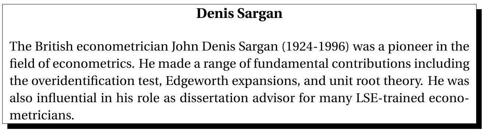
12.32 Subset OverIdentification Tests
Tests of \(\mathbb{H}_{0}: \mathbb{E}[Z e]=0\) are typically interpreted as tests of model specification. The alternative \(\mathbb{H}_{1}\) : \(\mathbb{E}[Z e] \neq 0\) means that at least one element of \(Z\) is correlated with the error \(e\) and is thus an invalid instrumental variable. In some cases it may be reasonable to test only a subset of the moment conditions.
As in the previous section we restrict attention to the homoskedastic case \(\mathbb{E}\left[e^{2} \mid Z\right]=\sigma^{2}\).
Partition \(Z=\left(Z_{a}, Z_{b}\right)\) with dimensions \(\ell_{a}\) and \(\ell_{b}\), respectively, where \(Z_{a}\) contains the instruments which are believed to be uncorrelated with \(e\) and \(Z_{b}\) contains the instruments which may be correlated with \(e\). It is necessary to select this partition so that \(\ell_{a}>k\), or equivalently \(\ell_{b}<\ell-k\). This means that the model with just the instruments \(Z_{a}\) is over-identified, or that \(\ell_{b}\) is smaller than the number of overidentifying restrictions. (If \(\ell_{a}=k\) then the tests described here exist but reduce to the Sargan test so are not interesting.) Hence the tests require that \(\ell-k>1\), that the number of overidentifying restrictions exceeds one.
Given this partition the maintained hypothesis is \(\mathbb{E}\left[Z_{a} e\right]=0\). The null and alternative hypotheses are \(\mathbb{H}_{0}: \mathbb{E}\left[Z_{b} e\right]=0\) against \(\mathbb{H}_{1}: \mathbb{E}\left[Z_{b} e\right] \neq 0\). That is, the null hypothesis is that the full set of moment conditions are valid while the alternative hypothesis is that the instrument subset \(Z_{b}\) is correlated with \(e\) and thus an invalid instrument. Rejection of \(\mathbb{H}_{0}\) in favor of \(\mathbb{M}_{1}\) is then interpreted as evidence that \(Z_{b}\) is misspecified as an instrument.
Based on the same reasoning as described in the previous section, to test \(\mathbb{H}_{0}\) against \(\mathbb{H}_{1}\) we consider a partitioned version of the regression (12.66)
\[ e=Z_{a}^{\prime} \alpha_{a}+Z_{b}^{\prime} \alpha_{b}+v \]
but now focus on the coefficient \(\alpha_{b}\). Given \(\mathbb{E}\left[Z_{a} e\right]=0, \mathbb{H}_{0}\) is equivalent to \(\alpha_{b}=0\). The equation is estimated by least squares replacing the unobserved \(e_{i}\) with the 2 SLS residual \(\widehat{e}_{i}\). The estimate of \(\alpha_{b}\) is
\[ \widehat{\alpha}_{b}=\left(\boldsymbol{Z}_{b}^{\prime} \boldsymbol{M}_{a} \boldsymbol{Z}_{b}\right)^{-1} \boldsymbol{Z}_{b}^{\prime} \boldsymbol{M}_{a} \widehat{\boldsymbol{e}} \]
where \(\boldsymbol{M}_{a}=\boldsymbol{I}_{n}-\boldsymbol{Z}_{a}\left(\boldsymbol{Z}_{a}^{\prime} \boldsymbol{Z}_{a}\right)^{-1} \boldsymbol{Z}_{a}^{\prime}\). Newey (1985) showed that an optimal (asymptotically most powerful) test of \(\mathbb{M}_{0}\) against \(\mathbb{M}_{1}\) is to reject for large values of the score statistic
\[ N=\widehat{\alpha}_{b}^{\prime}\left(\widehat{\operatorname{var}}\left[\widehat{\alpha}_{b}\right]\right)^{-} \widehat{\alpha}_{b}=\frac{\widehat{\boldsymbol{e}}^{\prime} \boldsymbol{R}\left(\boldsymbol{R}^{\prime} \boldsymbol{R}-\boldsymbol{R}^{\prime} \widehat{\boldsymbol{X}}\left(\widehat{\boldsymbol{X}}^{\prime} \widehat{\boldsymbol{X}}\right)^{-1} \widehat{\boldsymbol{X}}^{\prime} \boldsymbol{R}\right)^{-1} \boldsymbol{R}^{\prime} \widehat{\boldsymbol{e}}}{\widehat{\sigma}^{2}} \]
where \(\widehat{\boldsymbol{X}}=\boldsymbol{P} \boldsymbol{X}, \boldsymbol{P}=\boldsymbol{Z}\left(\boldsymbol{Z}^{\prime} \boldsymbol{Z}\right)^{-1} \boldsymbol{Z}^{\prime}, \boldsymbol{R}=\boldsymbol{M}_{a} \boldsymbol{Z}_{b}\), and \(\widehat{\sigma}^{2}=\frac{1}{n} \widehat{\boldsymbol{e}}^{\prime} \widehat{\boldsymbol{e}}\).
Independently from Newey (1985), Eichenbaum, L. Hansen, and Singleton (1988) proposed a test based on the difference of Sargan statistics. Let \(S\) be the Sargan test statistic (12.67) based on the full instrument set and \(S_{a}\) be the Sargan statistic based on the instrument set \(Z_{a}\). The Sargan difference statistic is \(C=S-S_{a}\). Specifically, let \(\widetilde{\beta}_{2 \text { sls }}\) be the 2SLS estimator using the instruments \(Z_{a}\) only, set \(\widetilde{e}_{i}=Y_{i}-X_{i}^{\prime} \widetilde{\beta}_{2 s l s}\), and set \(\widetilde{\sigma}^{2}=\frac{1}{n} \widetilde{\boldsymbol{e}}^{\prime} \widetilde{\boldsymbol{e}}\). Then
\[ S_{a}=\frac{\widetilde{\boldsymbol{e}}^{\prime} \boldsymbol{Z}_{a}\left(\boldsymbol{Z}_{a}^{\prime} \boldsymbol{Z}_{a}\right)^{-1} \boldsymbol{Z}_{a}^{\prime} \widetilde{\boldsymbol{e}}}{\widetilde{\sigma}^{2}} \]
An advantage of the \(C\) statistic is that it is quite simple to calculate from the standard regression output.
At this point it is useful to reflect on our stated requirement that \(\ell_{a}>k\). Indeed, if \(\ell_{a}<k\) then \(Z_{a}\) fails the order condition for identification and \(\widetilde{\beta}_{2 \text { sls }}\) cannot be calculated. Thus \(\ell_{a} \geq k\) is necessary to compute \(S_{a}\) and hence \(S\). Furthermore, if \(\ell_{a}=k\) then model \(a\) is just identified so while \(\widetilde{\beta}_{2 \text { sls }}\) can be calculated, the statistic \(S_{a}=0\) so \(C=S\). Thus when \(\ell_{a}=k\) the subset test equals the full overidentification test so there is no gain from considering subset tests.
The \(C\) statistic \(S_{a}\) is asymptotically equivalent to replacing \(\widetilde{\sigma}^{2}\) in \(S_{a}\) with \(\widehat{\sigma}^{2}\), yielding the statistic
\[ C^{*}=\frac{\widehat{\boldsymbol{e}}^{\prime} \boldsymbol{Z}\left(\boldsymbol{Z}^{\prime} \boldsymbol{Z}\right)^{-1} \boldsymbol{Z}^{\prime} \widehat{\boldsymbol{e}}}{\widehat{\sigma}^{2}}-\frac{\widetilde{\boldsymbol{e}}^{\prime} \boldsymbol{Z}_{a}\left(\boldsymbol{Z}_{a}^{\prime} \boldsymbol{Z}_{a}\right)^{-1} \boldsymbol{Z}_{a}^{\prime} \widetilde{\boldsymbol{e}}}{\widehat{\sigma}^{2}} . \]
It turns out that this is Newey’s statistic \(N\). These tests have chi-square asymptotic distributions.
Let \(c\) satisfy \(\alpha=1-G_{\ell_{b}}(c)\).
Theorem 12.17 Algebraically, \(N=C^{*}\). Under Assumption \(12.2\) and \(\mathbb{E}\left[e^{2} \mid Z\right]=\) \(\sigma^{2}\), as \(n \rightarrow \infty, N \underset{d}{\longrightarrow} \chi_{\ell_{b}}^{2}\) and \(C \underset{d}{\longrightarrow} \chi_{\ell_{b}}^{2}\). Thus the tests “Reject \(\mathbb{H}_{0}\) if \(N>c\)” and
“Reject \(\mathbb{H}_{0}\) if \(C>c\)” are asymptotically equivalent and have asymptotic size \(\alpha\).
Theorem \(12.17\) shows that \(N\) and \(C^{*}\) are identical and are near equivalents to the convenient statistic C. The appropriate asymptotic distribution is \(\chi_{\ell_{b}}^{2}\). Computationally, the easiest method to implement a subset overidentification test is to estimate the model twice by 2SLS, first using the full instrument set \(Z\) and the second using the partial instrument set \(Z_{a}\). Compute the Sargan statistics for both 2SLS regressions and compute \(C\) as the difference in the Sargan statistics. In Stata, for example, this is simple to implement with a few lines of code.
We illustrate using the Card college proximity example. Our reported 2SLS estimates have \(\ell-k=1\) so there is no role for a subset overidentification test. (Recall, the number of overidentifying restrictions must exceed one.) To illustrate we add extra instruments to the estimates in column 5 of Table \(12.1\) (the 2SLS estimates using public, private, age, and age \({ }^{2}\) as instruments for education, experience, and experience \(\left.{ }^{2} / 100\right)\). We add two instruments: the years of education of the father and the mother of the worker. These variables had been used in the earlier labor economics literature as instruments but Card did not. (He used them as regression controls in some specifications.) The motivation for using parent’s education as instruments is the hypothesis that parental education influences children’s educational attainment but does not directly influence their ability. The more modern labor economics literature has disputed this idea, arguing that children are educated in part at home and thus parent’s education has a direct impact on the skill attainment of children (and not just an indirect impact via educational attainment). The older view was that parent’s education is a valid instrument, the modern view is that it is not valid. We can test this dispute using a overidentification subset test.
We do this by estimating the wage equation by 2SLS using public, private, age, age \(^{2}\), father, and \(^{2}\) mother, as instruments for education, experience, and experience \(\left.{ }^{2} / 100\right)\). We do not report the parameter estimates here but observe that this model is overidentified with 3 overidentifying restrictions. We calculate the Sargan overidentification statistic. It is \(7.9\) with an asymptotic p-value (calculated using \(\chi_{3}^{2}\) ) of \(0.048\). This is a mild rejection of the null hypothesis of correct specification. As we argued in the previous section this by itself is not reason to reject the model. Now we consider a subset overidentification test. We are interested in testing the validity of the two instruments father and mother, not the instruments public, private, age, \(a g e^{2}\). To test the hypothesis that these two instruments are uncorrelated with the structural error we compute the difference in Sargan statistic, \(C=7.9-0.5=7.4\), which has a p-value (calculated using \(\chi_{2}^{2}\) ) of \(0.025\). This is marginally statistically significant, meaning that there is evidence that father and mother are not valid instruments for the wage equation. Since the \(\mathrm{p}\)-value is not smaller than \(1 %\) it is not overwhelming evidence but it still supports Card’s decision to not use parental education as instruments for the wage equation. We now prove the results in Theorem 12.17.
We first show that \(N=C^{*}\). Define \(\boldsymbol{P}_{a}=\boldsymbol{Z}_{a}\left(\boldsymbol{Z}_{a}^{\prime} \boldsymbol{Z}_{a}\right)^{-1} \boldsymbol{Z}_{a}^{\prime}\) and \(\boldsymbol{P}_{\boldsymbol{R}}=\boldsymbol{R}\left(\boldsymbol{R}^{\prime} \boldsymbol{R}\right)^{-1} \boldsymbol{R}^{\prime}\). Since \(\left[\boldsymbol{Z}_{a}, \boldsymbol{R}\right]\) span \(\boldsymbol{Z}\) we find \(\boldsymbol{P}=\boldsymbol{P}_{\boldsymbol{R}}+\boldsymbol{P}_{a}\) and \(\boldsymbol{P}_{\boldsymbol{R}} \boldsymbol{P}_{a}=0\). It will be useful to note that
\[ \begin{aligned} \boldsymbol{P}_{R} \widehat{\boldsymbol{X}} &=\boldsymbol{P}_{\boldsymbol{R}} \boldsymbol{P} \boldsymbol{X}=\boldsymbol{P}_{\boldsymbol{R}} \boldsymbol{X} \\ \widehat{\boldsymbol{X}}^{\prime} \widehat{\boldsymbol{X}}-\widehat{\boldsymbol{X}}^{\prime} \boldsymbol{P}_{\boldsymbol{R}} \widehat{\boldsymbol{X}} &=\boldsymbol{X}^{\prime}\left(\boldsymbol{P}-\boldsymbol{P}_{\boldsymbol{R}}\right) \boldsymbol{X}=\boldsymbol{X}^{\prime} \boldsymbol{P}_{a} \boldsymbol{X} \end{aligned} \]
The fact that \(\boldsymbol{X}^{\prime} \boldsymbol{P} \widehat{\boldsymbol{e}}=\widehat{\boldsymbol{X}}^{\prime} \widehat{\boldsymbol{e}}=0\) implies \(\boldsymbol{X}^{\prime} \boldsymbol{P}_{\boldsymbol{R}} \widehat{\boldsymbol{e}}=-\boldsymbol{X}^{\prime} \boldsymbol{P}_{a} \widehat{\boldsymbol{e}}\). Finally, since \(\boldsymbol{Y}=\boldsymbol{X} \widehat{\boldsymbol{\beta}}+\widehat{\boldsymbol{e}}\),
\[ \widetilde{\boldsymbol{e}}=\left(\boldsymbol{I}_{n}-\boldsymbol{X}\left(\boldsymbol{X}^{\prime} \boldsymbol{P}_{a} \boldsymbol{X}\right)^{-1} \boldsymbol{X}^{\prime} \boldsymbol{P}_{a}\right) \widehat{\boldsymbol{e}} \]
so
\[ \widetilde{\boldsymbol{e}}^{\prime} \boldsymbol{P}_{a} \widetilde{\boldsymbol{e}}=\widehat{\boldsymbol{e}}^{\prime}\left(\boldsymbol{P}_{a}-\boldsymbol{P}_{a} \boldsymbol{X}\left(\boldsymbol{X}^{\prime} \boldsymbol{P}_{a} \boldsymbol{X}\right)^{-1} \boldsymbol{X}^{\prime} \boldsymbol{P}_{a}\right) \widehat{\boldsymbol{e}} . \]
Applying the Woodbury matrix equality to the definition of \(N\) and the above algebraic relationships,
\[ \begin{aligned} N &=\frac{\widehat{\boldsymbol{e}}^{\prime} \boldsymbol{P}_{\boldsymbol{R}} \widehat{\boldsymbol{e}}+\widehat{\boldsymbol{e}}^{\prime} \boldsymbol{P}_{\boldsymbol{R}} \widehat{\boldsymbol{X}}\left(\widehat{\boldsymbol{X}}^{\prime} \widehat{\boldsymbol{X}}-\widehat{\boldsymbol{X}}^{\prime} \boldsymbol{P}_{\boldsymbol{R}} \widehat{\boldsymbol{X}}\right)^{-1} \widehat{\boldsymbol{X}}^{\prime} \boldsymbol{P}_{\boldsymbol{R}} \widehat{\boldsymbol{e}}}{\widehat{\sigma}^{2}} \\ &=\frac{\widehat{\boldsymbol{e}}^{\prime} \boldsymbol{P} \widehat{\boldsymbol{e}}-\widehat{\boldsymbol{e}}^{\prime} \boldsymbol{P}_{a} \widehat{\boldsymbol{e}}+\widehat{\boldsymbol{e}}^{\prime} \boldsymbol{P}_{a} \boldsymbol{X}\left(\boldsymbol{X}^{\prime} \boldsymbol{P}_{a} \boldsymbol{X}\right)^{-1} \boldsymbol{X}^{\prime} \boldsymbol{P}_{a} \widehat{\boldsymbol{e}}}{\widehat{\sigma}^{2}} \\ &=\frac{\widehat{\boldsymbol{e}}^{\prime} \boldsymbol{P} \widehat{\boldsymbol{e}}-\widetilde{\boldsymbol{e}}^{\prime} \boldsymbol{P}_{a} \widetilde{\boldsymbol{e}}}{\widehat{\sigma}^{2}} \\ &=C^{*} \end{aligned} \]
as claimed.
We next establish the asymptotic distribution. Since \(\boldsymbol{Z}_{a}\) is a subset of \(\boldsymbol{Z}, \boldsymbol{P}_{a}=\boldsymbol{M}_{a} \boldsymbol{P}\), thus \(\boldsymbol{P} \boldsymbol{R}=\boldsymbol{R}\) and \(\boldsymbol{R}^{\prime} \boldsymbol{X}=\boldsymbol{R}^{\prime} \widehat{\boldsymbol{X}}\). Consequently
\[ \begin{aligned} \frac{1}{\sqrt{n}} \boldsymbol{R}^{\prime} \widehat{\boldsymbol{e}} &=\frac{1}{\sqrt{n}} \boldsymbol{R}^{\prime}(\boldsymbol{Y}-\boldsymbol{X} \widehat{\boldsymbol{\beta}}) \\ &=\frac{1}{\sqrt{n}} \boldsymbol{R}^{\prime}\left(\boldsymbol{I}_{n}-\boldsymbol{X}\left(\widehat{\boldsymbol{X}}^{\prime} \widehat{\boldsymbol{X}}\right)^{-1} \widehat{\boldsymbol{X}}^{\prime}\right) \boldsymbol{e} \\ &=\frac{1}{\sqrt{n}} \boldsymbol{R}^{\prime}\left(\boldsymbol{I}_{n}-\widehat{\boldsymbol{X}}\left(\widehat{\boldsymbol{X}}^{\prime} \widehat{\boldsymbol{X}}\right)^{-1} \widehat{\boldsymbol{X}}^{\prime}\right) \boldsymbol{e} \\ & \underset{d}{\longrightarrow} \mathrm{N}\left(0, \boldsymbol{V}_{2}\right) \end{aligned} \]
where
\[ \boldsymbol{V}_{2}=\operatorname{plim}_{n \rightarrow \infty}\left(\frac{1}{n} \boldsymbol{R}^{\prime} \boldsymbol{R}-\frac{1}{n} \boldsymbol{R}^{\prime} \widehat{\boldsymbol{X}}\left(\frac{1}{n} \widehat{\boldsymbol{X}}^{\prime} \widehat{\boldsymbol{X}}\right)^{-1} \frac{1}{n} \widehat{\boldsymbol{X}}^{\prime} \boldsymbol{R}\right) . \]
It follows that \(N=C^{*} \underset{d}{\longrightarrow} \chi_{\ell_{b}}^{2}\) as claimed. Since \(C=C^{*}+o_{p}(1)\) it has the same limiting distribution.
12.33 Bootstrap Overidentification Tests
In small to moderate sample sizes the overidentification tests are not well approximated by the asymptotic chi-square distributions. For improved accuracy it is advised to use bootstrap critical values. The bootstrap for 2SLS (Section 12.23) can be used for this purpose but the bootstrap version of the overidentification statistic must be adjusted. This is because in the bootstrap universe the overidentified moment conditions are not satisfied. One solution is to center the moment conditions. For the 2SLS estimator the standard overidentification test is based on the Sargan statistic
\[ \begin{aligned} &S=n \frac{\widehat{\boldsymbol{e}}^{\prime} \boldsymbol{Z}\left(\boldsymbol{Z}^{\prime} \boldsymbol{Z}\right)^{-1} \boldsymbol{Z}^{\prime} \widehat{\boldsymbol{e}}}{\widehat{\boldsymbol{e}}^{\prime} \widehat{\boldsymbol{e}}} \\ &\widehat{\boldsymbol{e}}=\boldsymbol{Y}-\boldsymbol{X} \widehat{\beta}_{2 s l s} \end{aligned} \]
The recentered bootstrap analog is
\[ \begin{aligned} S^{* *} &=n \frac{\left(\widehat{\boldsymbol{e}}^{* \prime} \boldsymbol{Z}^{*}-\boldsymbol{Z}^{\prime} \widehat{\boldsymbol{e}}\right)\left(\boldsymbol{Z}^{* \prime} \boldsymbol{Z}^{*}\right)^{-1}\left(\boldsymbol{Z}^{* \prime} \widehat{\boldsymbol{e}}^{*}-\boldsymbol{Z}^{\prime} \widehat{\boldsymbol{e}}\right)}{\widehat{\boldsymbol{e}}^{*} \widehat{\boldsymbol{e}}^{*}} \\ \widehat{\boldsymbol{e}}^{*} &=\boldsymbol{Y}^{*}-\boldsymbol{X}^{*} \widehat{\beta}_{2 \mathrm{sls}}^{*} \end{aligned} \]
On each bootstrap sample \(S^{* *}(b)\) is calculated and stored. The bootstrap p-value is
\[ p^{*}=\frac{1}{B} \sum_{b=1}^{B} \mathbb{1}\left\{S^{* *}(b)>S\right\} . \]
This bootstrap \(\mathrm{p}\)-value is valid because the statistic \(S^{* *}\) satisfies the overidentified moment conditions.
12.34 Local Average Treatment Effects
In a pair of influential papers, Imbens and Angrist (1994) and Angrist, Imbens and Rubin (1996) proposed an new interpretation of the instrumental variables estimator using the potential outcomes model introduced in Section 2.30.
We will restrict attention to the case that the endogenous regressor \(X\) and excluded instrument \(Z\) are binary variables. We write the model as a pair of potential outcome functions. The dependent variable \(Y\) is a function of the regressor and an unobservable vector \(U, Y=h(X, U)\), and the endogenous regressor \(X\) is a function of the instrument \(Z\) and \(U, X=g(Z, U)\). By specifying \(U\) as a vector there is no loss of generality in letting both equations depend on \(U\).
In this framework the outcomes are determined by the random vector \(U\) and the exogenous instrument \(Z\). This determines \(X\) which determines \(Y\). To put this in the context of the college proximity example the variable \(U\) is everything specific about an individual. Given college proximity \(Z\) the person decides to attend college or not. The person’s wage is determined by the individual attributes \(U\) as well as college attendence \(X\) but is not directly affected by college proximity \(Z\).
We can omit the random variable \(U\) from the notation as follows. An individual has a realization \(U\). We then set \(Y(x)=h(x, U)\) and \(X(z)=g(z, U)\). Also, given a realization \(Z\) the observables are \(X=X(Z)\) and \(Y=Y(X)\).
In this model the causal effect of college for an individual is \(C=Y(1)-Y(0)\). As discussed in Section \(2.30\), this is individual-specific and random.
We would like to learn about the distribution of the causal effects, or at least features of the distribution. A common feature of interest is the average treatment effect (ATE)
\[ \operatorname{ATE}=\mathbb{E}[C]=\mathbb{E}[Y(1)-Y(0)] . \]
This, however, it typically not feasible to estimate allowing for endogenous \(X\) without strong assumptions (such as that the causal effect \(C\) is constant across individuals). The treatment effect literature has explored what features of the distribution of \(C\) can be estimated. One particular feature of interest emphasized by Imbens and Angrist (1994) is the local average treatment effect (LATE). Roughly, this is the average effect upon those effected by the instrumental variable. To understand LATE, consider the college proximity example. In the potential outcomes framework each person is fully characterized by their individual unobservable \(U\). Given \(U\), their decision to attend college is a function of the proximity indicator \(Z\). For some students, proximity has no effect on their decision. For other students, it has an effect in the specific sense that given \(Z=1\) they choose to attend college while if \(Z=0\) they choose to not attend. We can summarize the possibilites with the following chart which is based on labels developed by Angrist, Imbens and Rubin (1996).
\[ \begin{array}{ccc} & X(0)=0 & X(0)=1 \\ X(1)=0 & \text { Never Takers } & \text { Defiers } \\ X(1)=1 & \text { Compliers } & \text { Always Takers } \end{array} \]
The columns indicate the college attendence decision given \(Z=0\) (not close to a college). The rows indicate the college attendence decision given \(Z=1\) (close to a college). The four entries are labels for the four types of individuals based on these decisions. The upper-left entry are the individuals who do not attend college regardless of \(Z\). They are called “Never Takers”. The lower-right entry are the individuals who conversely attend college regardless of \(Z\). They are called “Always Takers”. The bottom left are the individuals who only attend college if they live close to one. They are called “Compliers”. The upper right entry is a bit of a challenge. These are individuals who attend college only if they do not live close to one. They are called “Dediers”. Imbens and Angrist discovered that to identify the parameters of interest we need to assume that there are no Dediers, or equivalently that \(X(1) \geq X(0)\). They call this a “monotonicity” condition - increasing the instrument does not decrease \(X\) for any individual.
As another example, suppose we are interested in the effect of wearing a face mask \(X\) on health \(Y\) during a virus pandemic. Wearing a face mask is a choice made by the individual so should be viewed as endogenous. For an instrument \(Z\) consider a government policy that requires face masks to be worn in public. The “Compliers” are those who wear a face mask if there is a policy but otherwise do not. The “Deniers” are those who do the converse. That is, these individuals would have worn a face mask based on the evidence of a pandemic but rebel against a government policy. Once again, identification requires that there are no Deniers.
We can distinguish the types in the table by the relative values of \(X(1)-X(0)\). For Never-Takers and Always-Takers \(X(1)-X(0)=0\), while for Compliers \(X(1)-X(0)=1\).
We are interested in the causal effect \(C=h(1, U)-h(0, U)\) of college on wages. The average causal effect (ACE) is its expectation \(\mathbb{E}[Y(1)-Y(0)]\). To estimate the ACE we need observations of both \(Y(0)\) and \(Y\) (1) which means we need to observe some individuals who attend college and some who do not attend college. Consider the group “Never-Takers”. They never attend college so we only observe \(Y(0)\). It is thus impossible to estimate the ACE of college for this group. Similarly consider the group “Always-Takers”. They always attend college so we only observe \(Y(1)\) and again we cannot estimate the ACE of college for this group. The group for which we can estimate the ACE are the “Compliers”. The ACE for this group is
\[ \text { LATE }=\mathbb{E}[Y(1)-Y(0) \mid X(1)>X(0)] . \]
Imbens and Angrist call this the local average treatment effect (LATE) as it is the average treatment effect for the sub-population whose endogenous regressor is affected by the instrument. Examining the definition, the LATE is the average causal effect of college attendence on wages for the sub-sample of individuals who choose to attend college if (and only if) they live close to one.
Interestingly, we show below that
\[ \text { LATE }=\frac{\mathbb{E}[Y \mid Z=1]-\mathbb{E}[Y \mid Z=0]}{\mathbb{E}[X \mid Z=1]-\mathbb{E}[X \mid Z=0]} . \]
That is, LATE equals the Wald expression (12.27) for the slope coefficient in the IV regression model. This means that the standard IV estimator is an estimator of LATE. Thus when treatment effects are potentially heterogeneous we can interpret IV as an estimator of LATE. The equality (12.68) occurs under the following conditions.
Assumption 12.3 \(U\) and \(Z\) are independent and \(\mathbb{P}[X(1)-X(0)<0]=0 .\)
One interesting feature about LATE is that its value can depend on the instrument \(Z\) and the distribution of causal effects \(C\) in the population. To make this concrete suppose that instead of the Card proximity instrument we consider an instrument based on the financial cost of local college attendence. It is reasonable to expect that while the set of students affected by these two instruments are similar the two sets of students will not be the same. That is, some students may be responsive to proximity but not finances, and conversely. If the causal effect \(C\) has a different average in these two groups of students then LATE will be different when calculated with these two instruments. Thus LATE can vary by the choice of instrument.
How can that be? How can a well-defined parameter depend on the choice of instrument? Doesn’t this contradict the basic IV regression model? The answer is that the basic IV regression model is restrictive - it specifies that the causal effect \(\beta\) is common across all individuals. Its value is the same regardless of the choice of specific instrument (so long as it satisfies the instrumental variables assumptions). In contrast, the potential outcomes framework is more general allowing for the causal effect to vary across individuals. What this analysis shows us is that in this context is quite possible for the LATE coefficient to vary by instrument. This occurs when causal effects are heterogeneous.
One implication of the LATE framework is that IV estimates should be interpreted as causal effects only for the population of compliers. Interpretation should focus on the population of potential compliers and extension to other populations should be done with caution. For example, in the Card proximity model the IV estimates of the causal return to schooling presented in Table \(12.1\) should be interpreted as applying to the population of students who are incentivized to attend college by the presence of a college within their home county. The estimates should not be applied to other students.
Formally, the analysis of this section examined the case of a binary instrument and endogenous regressor. How does this generalize? Suppose that the regressor \(X\) is discrete, taking \(J+1\) discrete values. We can then rewrite the model as one with \(J\) binary endogenous regressors. If we then have \(J\) binary instruments we are back in the Imbens-Angrist framework (assuming the instruments have a monotonic impact on the endogenous regressors). A benefit is that with a larger set of instruments it is plausible that the set of compliers in the population is expanded.
We close this section by showing (12.68) under Assumption 12.3. The realized value of \(X\) can be written as
\[ X=(1-Z) X(0)+Z X(1)=X(0)+Z(X(1)-X(0)) \]
Similarly
\[ Y=Y(0)+X(Y(1)-Y(0))=Y(0)+X C . \]
Combining,
\[ Y=Y(0)+X(0) C+Z(X(1)-Y(0)) C . \]
The independence of \(u\) and \(Z\) implies independence of \((Y(0), Y(1), X(0), X(1), C)\) and \(Z\). Thus
\[ \mathbb{E}[Y \mid Z=1]=\mathbb{E}[Y(0)]+\mathbb{E}[X(0) C]+\mathbb{E}[(X(1)-X(0)) C] \]
and
\[ \mathbb{E}[Y \mid Z=0]=\mathbb{E}[Y(0)]+\mathbb{E}[X(0) C] . \]
Subtracting we obtain
\[ \begin{aligned} \mathbb{E}[Y \mid Z=1]-\mathbb{E}[Y \mid Z=0] &=\mathbb{E}[(X(1)-X(0)) C] \\ &=1 \times \mathbb{E}[C \mid X(1)-X(0)=1] \mathbb{P}[X(1)-X(0)=1] \\ &+0 \times \mathbb{E}[C \mid X(1)-X(0)=0] \mathbb{P}[X(1)-X(0)=0] \\ &+(-1) \times \mathbb{E}[C \mid X(1)-X(0)=-1] \mathbb{P}[X(1)-X(0)=-1] \\ &=\mathbb{E}[C \mid X(1)-X(0)=1](\mathbb{E}[X \mid X=1]-\mathbb{E}[X \mid Z=0]) \end{aligned} \]
where the final equality uses \(\mathbb{P}[X(1)-X(0)<0]=0\) and
\[ \mathbb{P}[X(1)-X(0)=1]=\mathbb{E}[X(1)-X(0)]=\mathbb{E}[X \mid Z=1]-\mathbb{E}[X \mid Z=0] . \]
Rearranging
\[ \mathrm{LATE}=\mathbb{E}[C \mid X(1)-X(0)=1]=\frac{\mathbb{E}[Y \mid Z=1]-\mathbb{E}[Y \mid Z=0]}{\mathbb{E}[X \mid Z=1]-\mathbb{E}[X \mid Z=0]} \]
as claimed.
12.35 Identification Failure
Recall the reduced form equation
\[ X_{2}=\Gamma_{12}^{\prime} Z_{1}+\Gamma_{22}^{\prime} Z_{2}+u_{2} . \]
The parameter \(\beta\) fails to be identified if \(\Gamma_{22}\) has deficient rank. The consequences of identification failure for inference are quite severe.
Take the simplest case where \(k_{1}=0\) and \(k_{2}=\ell_{2}=1\). Then the model may be written as
\[ \begin{aligned} &Y=X \beta+e \\ &X=Z \gamma+u \end{aligned} \]
and \(\Gamma_{22}=\gamma=\mathbb{E}[Z X] / \mathbb{E}\left[Z^{2}\right]\). We see that \(\beta\) is identified if and only if \(\gamma \neq 0\), which occurs when \(\mathbb{E}[X Z] \neq 0\). Thus identification hinges on the existence of correlation between the excluded exogenous variable and the included endogenous variable.
Suppose this condition fails. In this case \(\gamma=0\) and \(\mathbb{E}[X Z]=0\). We now analyze the distribution of the least squares and IV estimators of \(\beta\). For simplicity we assume conditional homoskedasticity and normalize the variances of \(e, u\), and \(Z\) to unity. Thus
\[ \operatorname{var}\left[\left(\begin{array}{c} e \\ u \end{array}\right) \mid Z\right]=\left(\begin{array}{ll} 1 & \rho \\ \rho & 1 \end{array}\right) . \]
The errors have non-zero correlation \(\rho \neq 0\) when the variables are endogenous.
By the CLT we have the joint convergence
\[ \frac{1}{\sqrt{n}} \sum_{i=1}^{n}\left(\begin{array}{c} Z_{i} e_{i} \\ Z_{i} u_{i} \end{array}\right) \underset{d}{ }\left(\begin{array}{l} \xi_{1} \\ \xi_{2} \end{array}\right) \sim \mathrm{N}\left(0,\left(\begin{array}{cc} 1 & \rho \\ \rho & 1 \end{array}\right)\right) . \]
It is convenient to define \(\xi_{0}=\xi_{1}-\rho \xi_{2}\) which is normal and independent of \(\xi_{2}\). As a benchmark it is useful to observe that the least squares estimator of \(\beta\) satisfies
\[ \widehat{\beta}_{\mathrm{ols}}-\beta=\frac{n^{-1} \sum_{i=1}^{n} u_{i} e_{i}}{n^{-1} \sum_{i=1}^{n} u_{i}^{2}} \underset{p}{\longrightarrow} \rho \neq 0 \]
so endogeneity causes \(\widehat{\beta}_{\text {ols }}\) to be inconsistent for \(\beta\).
Under identification failure \(\gamma=0\) the asymptotic distribution of the IV estimator is
\[ \widehat{\beta}_{\mathrm{iv}}-\beta=\frac{\frac{1}{\sqrt{n}} \sum_{i=1}^{n} Z_{i} e_{i}}{\frac{1}{\sqrt{n}} \sum_{i=1}^{n} Z_{i} X_{i}} \underset{\mathrm{d}}{\xi_{2}}=\rho+\frac{\xi_{0}}{\xi_{2}} . \]
This asymptotic convergence result uses the continuous mapping theorem which applies since the function \(\xi_{1} / \xi_{2}\) is continuous everywhere except at \(\xi_{2}=0\), which occurs with probability equal to zero.
This limiting distribution has several notable features.
First, \(\widehat{\beta}_{\mathrm{iv}}\) does not converge in probability to a limit, rather it converges in distribution to a random variable. Thus the IV estimator is inconsistent. Indeed, it is not possible to consistently estimate an unidentified parameter and \(\beta\) is not identified when \(\gamma=0\).
Second, the ratio \(\xi_{0} / \xi_{2}\) is symmetrically distributed about zero so the median of the limiting distribution of \(\widehat{\beta}_{\text {iv }}\) is \(\beta+\rho\). This means that the IV estimator is median biased under endogeneity. Thus under identification failure the IV estimator does not correct the centering (median bias) of least squares.
Third, the ratio \(\xi_{0} / \xi_{2}\) of two independent normal random variables is Cauchy distributed. This is particularly nasty as the Cauchy distribution does not have a finite mean. The distribution has thick tails meaning that extreme values occur with higher frequency than the normal. Inferences based on the normal distribution can be quite incorrect.
Together, these results show that \(\gamma=0\) renders the IV estimator particularly poorly behaved - it is inconsistent, median biased, and non-normally distributed.
We can also examine the behavior of the t-statistic. For simplicity consider the classical (homoskedastic) t-statistic. The error variance estimate has the asymptotic distribution
\[ \begin{aligned} & \widehat{\sigma}^{2}=\frac{1}{n} \sum_{i=1}^{n}\left(Y_{i}-X_{i} \widehat{\beta}_{\mathrm{iv}}\right)^{2} \\ & =\frac{1}{n} \sum_{i=1}^{n} e_{i}^{2}-\frac{2}{n} \sum_{i=1}^{n} e_{i} X_{i}\left(\widehat{\beta}_{\mathrm{iv}}-\beta\right)+\frac{1}{n} \sum_{i=1}^{n} X_{i}^{2}\left(\widehat{\beta}_{\mathrm{iv}}-\beta\right)^{2} \\ & \underset{d}{\longrightarrow} 1-2 \rho \frac{\xi_{1}}{\xi_{2}}+\left(\frac{\xi_{1}}{\xi_{2}}\right)^{2} \text {. } \end{aligned} \]
Thus the t-statistic has the asymptotic distribution
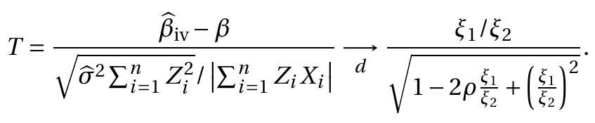
The limiting distribution is non-normal, meaning that inference using the normal distribution will be (considerably) incorrect. This distribution depends on the correlation \(\rho\). The distortion is increasing in \(\rho\). Indeed as \(\rho \rightarrow 1\) we have \(\xi_{1} / \xi_{2} \rightarrow p 1\) and the unexpected finding \(\widehat{\sigma}^{2} \rightarrow{ }_{p} 0\). The latter means that the conventional standard error \(s\left(\widehat{\beta}_{\text {iv }}\right)\) for \(\widehat{\beta}_{\text {iv }}\) also converges in probability to zero. This implies that the t-statistic diverges in the sense \(|T| \rightarrow p \infty\). In this situations users may incorrectly interpret estimates as precise despite the fact that they are highly imprecise.
12.36 Weak Instruments
In the previous section we examined the extreme consequences of full identification failure. Similar problems occur when identification is weak in the sense that the reduced form coefficients are of small magnitude. In this section we derive the asymptotic distribution of the OLS, 2SLS, and LIML estimators when the reduced form coefficients are treated as weak. We show that the estimators are inconsistent and the 2SLS and LIML estimators remain random in large samples.
To simplify the exposition we assume that there are no included exogenous variables (no \(X_{1}\) ) so we write \(X_{2}, Z_{2}\), and \(\beta_{2}\) simply as \(X, Z\), and \(\beta\). The model is
\[ \begin{aligned} &Y=X^{\prime} \beta+e \\ &X=\Gamma^{\prime} Z+u_{2} . \end{aligned} \]
Recall the reduced form error vector \(u=\left(u_{1}, u_{2}\right)\) and its covariance matrix
\[ \mathbb{E}\left[u u^{\prime}\right]=\Sigma=\left[\begin{array}{cc} \Sigma_{11} & \Sigma_{12} \\ \Sigma_{21} & \Sigma_{22} \end{array}\right] . \]
Recall that the structural error is \(e=u_{1}-\beta^{\prime} u_{2}=\gamma^{\prime} u\) where \(\gamma=(1,-\beta)\) which has variance \(\mathbb{E}\left[e^{2} \mid Z\right]=\) \(\gamma^{\prime} \Sigma \gamma\). Also define the covariance \(\Sigma_{2 e}=\mathbb{E}\left[u_{2} e \mid Z\right]=\Sigma_{21}-\Sigma_{22} \beta\).
In Section \(12.35\) we assumed complete identification failure in the sense that \(\Gamma=0\). We now want to assume that identification does not completely fail but is weak in the sense that \(\Gamma\) is small. A rich asymptotic distribution theory has been developed to understand this setting by modeling \(\Gamma\) as “localto-zero”. The seminal contribution is Staiger and Stock (1997). The theory was extended to nonlinear GMM estimation by Stock and Wright (2000).
The technical device introduced by Staiger and Stock (1997) is to assume that the reduced form parameter is local-to-zero, specifically
\[ \Gamma=n^{-1 / 2} \boldsymbol{C} \]
where \(\boldsymbol{C}\) is a free matrix. The \(n^{-1 / 2}\) scaling is picked because it provides just the right balance to allow a useful distribution theory. The local-to-zero assumption (12.71) is not meant to be taken literally but rather is meant to be a useful distributional approximation. The parameter \(\boldsymbol{C}\) indexes the degree of identification. Larger \(\|\boldsymbol{C}\|\) implies stronger identification; smaller \(\|\boldsymbol{C}\|\) implies weaker identification.
We now derive the asymptotic distribution of the least squares, 2SLS, and LIML estimators under the local-to-unity assumption (12.71).
The least squares estimator satisfies
\[ \begin{aligned} \widehat{\beta}_{\mathrm{ols}}-\beta &=\left(n^{-1} \boldsymbol{X}^{\prime} \boldsymbol{X}\right)^{-1}\left(n^{-1} \boldsymbol{X}^{\prime} \boldsymbol{e}\right) \\ &=\left(n^{-1} \boldsymbol{U}_{2}^{\prime} \boldsymbol{U}_{2}\right)^{-1}\left(n^{-1} \boldsymbol{U}_{2}^{\prime} \boldsymbol{e}\right)+o_{p}(1) \\ & \longrightarrow \underset{22}{-1} \Sigma_{2 e} . \end{aligned} \]
Thus the least squares estimator is inconsistent for \(\beta\).
To examine the 2SLS estimator, by the central limit theorem
\[ \frac{1}{\sqrt{n}} \sum_{i=1}^{n} Z_{i} u_{i}^{\prime} \underset{d}{\longrightarrow} \xi=\left[\xi_{1}, \xi_{2}\right] \]
where
\[ \operatorname{vec}(\xi) \sim \mathrm{N}\left(0, \mathbb{E}\left[u u^{\prime} \otimes Z Z^{\prime}\right]\right) \]
This implies
\[ \frac{1}{\sqrt{n}} \boldsymbol{Z}^{\prime} \boldsymbol{e} \longrightarrow \underset{d}{\xi_{e}}=\xi \gamma \]
We also find that
\[ \frac{1}{\sqrt{n}} \boldsymbol{Z}^{\prime} \boldsymbol{X}=\frac{1}{n} \boldsymbol{Z}^{\prime} \boldsymbol{Z} \boldsymbol{C}+\frac{1}{\sqrt{n}} \boldsymbol{Z}^{\prime} \boldsymbol{U}_{2} \underset{d}{\longrightarrow} \boldsymbol{Q}_{Z} \boldsymbol{C}+\xi_{2} . \]
Thus
\[ \boldsymbol{X}^{\prime} \boldsymbol{P}_{\boldsymbol{Z}} \boldsymbol{X}=\left(\frac{1}{\sqrt{n}} \boldsymbol{X}^{\prime} \boldsymbol{Z}\right)\left(\frac{1}{n} \boldsymbol{Z}^{\prime} \boldsymbol{Z}\right)^{-1}\left(\frac{1}{\sqrt{n}} \boldsymbol{Z}^{\prime} \boldsymbol{X}\right) \underset{d}{\longrightarrow}\left(\boldsymbol{Q}_{Z} \boldsymbol{C}+\xi_{2}\right)^{\prime} \boldsymbol{Q}_{Z}^{-1}\left(\boldsymbol{Q}_{Z} \boldsymbol{C}+\xi_{2}\right) \]
and
\[ \boldsymbol{X}^{\prime} \boldsymbol{P}_{\boldsymbol{Z}} \boldsymbol{e}=\left(\frac{1}{\sqrt{n}} \boldsymbol{X}^{\prime} \boldsymbol{Z}\right)\left(\frac{1}{n} \boldsymbol{Z}^{\prime} \boldsymbol{Z}\right)^{-1}\left(\frac{1}{\sqrt{n}} \boldsymbol{Z}^{\prime} \boldsymbol{e}\right) \underset{d}{\longrightarrow}\left(\boldsymbol{Q}_{Z} \boldsymbol{C}+\xi_{2}\right)^{\prime} \boldsymbol{Q}_{Z}^{-1} \xi_{e} \]
We find that the 2SLS estimator has the asymptotic distribution
\[ \begin{aligned} \widehat{\beta}_{2 \text { sls }}-\beta &=\left(\boldsymbol{X}^{\prime} \boldsymbol{P}_{\boldsymbol{Z}} \boldsymbol{X}\right)^{-1}\left(\boldsymbol{X}^{\prime} \boldsymbol{P}_{\boldsymbol{Z}} \boldsymbol{e}\right) \\ & \longrightarrow\left(\left(\boldsymbol{Q}_{Z} \boldsymbol{C}+\xi_{2}\right)^{\prime} \boldsymbol{Q}_{Z}^{-1}\left(\boldsymbol{Q}_{Z} \boldsymbol{C}+\xi_{2}\right)\right)^{-1}\left(\boldsymbol{Q}_{Z} \boldsymbol{C}+\xi_{2}\right)^{\prime} \boldsymbol{Q}_{Z}^{-1} \xi_{e} . \end{aligned} \]
As in the case of complete identification failure we find that \(\widehat{\beta}_{2 s l s}\) is inconsistent for \(\beta\), it is asymptotically random, and its asymptotic distribution is non-normal. The distortion is affected by the coefficient \(\boldsymbol{C}\). As \(\|\boldsymbol{C}\| \rightarrow \infty\) the distribution in (12.72) converges in probability to zero suggesting that \(\widehat{\beta}_{2 \text { sls }}\) is consistent for \(\beta\). This corresponds to the classic “strong identification” context.
Now consider the LIML estimator. The reduced form is \(\overrightarrow{\boldsymbol{Y}}=\boldsymbol{Z \Pi}+\boldsymbol{U}\). This implies \(\boldsymbol{M}_{Z} \overrightarrow{\boldsymbol{Y}}=\boldsymbol{M}_{Z} \boldsymbol{U}\) and by standard asymptotic theory
\[ \frac{1}{n} \overrightarrow{\boldsymbol{Y}}^{\prime} \boldsymbol{M}_{\boldsymbol{Z}} \overrightarrow{\boldsymbol{Y}}=\frac{1}{n} \boldsymbol{U}^{\prime} \boldsymbol{M}_{\boldsymbol{Z}} \boldsymbol{U} \underset{p}{\longrightarrow}=\mathbb{E}\left[u u^{\prime}\right] . \]
Define \(\bar{\beta}=\left[\beta, \boldsymbol{I}_{k}\right]\) so that the reduced form coefficients equal \(\Pi=[\boldsymbol{\Gamma} \beta, \boldsymbol{\Gamma}]=n^{-1 / 2} \boldsymbol{C} \bar{\beta}\). Then
\[ \frac{1}{\sqrt{n}} \boldsymbol{Z}^{\prime} \overrightarrow{\boldsymbol{Y}}=\frac{1}{n} \boldsymbol{Z}^{\prime} \boldsymbol{Z} \boldsymbol{C} \bar{\beta}+\frac{1}{\sqrt{n}} \boldsymbol{Z}^{\prime} \boldsymbol{U} \underset{d}{\longrightarrow} \boldsymbol{Q}_{Z} \boldsymbol{C} \bar{\beta}+\xi \]
and
\[ \overrightarrow{\boldsymbol{Y}}^{\prime} \boldsymbol{Z}\left(\boldsymbol{Z}^{\prime} \boldsymbol{Z}\right)^{-1} \boldsymbol{Z}^{\prime} \overrightarrow{\boldsymbol{Y}} \underset{d}{\longrightarrow}\left(\boldsymbol{Q}_{Z} \boldsymbol{C} \bar{\beta}+\xi\right)^{\prime} \boldsymbol{Q}_{Z}^{-1}\left(\boldsymbol{Q}_{Z} \boldsymbol{C} \bar{\beta}+\xi\right) . \]
This allows us to calculate that by the continuous mapping theorem
\[ \begin{aligned} n \widehat{\mu} &=\min _{\gamma} \frac{\gamma^{\prime} \overrightarrow{\boldsymbol{Y}}^{\prime} \boldsymbol{Z}\left(\boldsymbol{Z}^{\prime} \boldsymbol{Z}\right)^{-1} \boldsymbol{Z}^{\prime} \overrightarrow{\boldsymbol{Y}} \gamma}{\gamma^{\prime} \frac{1}{n} \overrightarrow{\boldsymbol{Y}}^{\prime} \boldsymbol{M}_{\boldsymbol{Z}} \overrightarrow{\boldsymbol{Y}} \gamma} \\ & \underset{d}{\longrightarrow} \min _{\gamma} \frac{\gamma^{\prime}\left(\boldsymbol{Q}_{Z} \boldsymbol{C} \bar{\beta}+\xi\right)^{\prime} \boldsymbol{Q}_{Z}^{-1}\left(\boldsymbol{Q}_{Z} \boldsymbol{C} \bar{\beta}+\xi\right) \gamma}{\gamma^{\prime} \Sigma \gamma} \\ &=\mu^{*} \end{aligned} \]
say, which is a function of \(\xi\) and thus random. We deduce that the asymptotic distribution of the LIML estimator is
\[ \begin{aligned} \widehat{\beta}_{\mathrm{liml}}-\beta=&\left(\boldsymbol{X}^{\prime} \boldsymbol{P}_{\boldsymbol{Z}} \boldsymbol{X}-n \widehat{\mu} \frac{1}{n} \boldsymbol{X}^{\prime} \boldsymbol{M}_{\boldsymbol{Z}} \boldsymbol{X}\right)^{-1}\left(\boldsymbol{X}^{\prime} \boldsymbol{P}_{\boldsymbol{Z}} \boldsymbol{e}-n \widehat{\mu} \frac{1}{n} \boldsymbol{X}^{\prime} \boldsymbol{M}_{\boldsymbol{Z}} \boldsymbol{e}\right) \\ \underset{d}{\longrightarrow}\left(\left(\boldsymbol{Q}_{Z} \boldsymbol{C}+\xi_{2}\right)^{\prime} \boldsymbol{Q}_{Z}^{-1}\left(\boldsymbol{Q}_{Z} \boldsymbol{C}+\xi_{2}\right)-\mu^{*} \Sigma_{22}\right)^{-1}\left(\left(\boldsymbol{Q}_{Z} \boldsymbol{C}+\xi_{2}\right)^{\prime} \boldsymbol{Q}_{Z}^{-1} \xi_{e}-\mu^{*} \Sigma_{2 e}\right) . \end{aligned} \]
Similarly to 2SLS, the LIML estimator is inconsistent for \(\beta\), is asymptotically random, and non-normally distributed.
We summarize.
Theorem 12.18 Under (12.71),
\[ \begin{gathered} \widehat{\beta}_{\mathrm{ols}}-\beta \underset{p}{\longrightarrow} \Sigma_{22}^{-1} \Sigma_{2 e} \\ \widehat{\beta}_{2 \mathrm{sls}}-\beta \underset{d}{\longrightarrow}\left(\left(\boldsymbol{Q}_{Z} \boldsymbol{C}+\xi_{2}\right)^{\prime} \boldsymbol{Q}_{Z}^{-1}\left(\boldsymbol{Q}_{Z} \boldsymbol{C}+\xi_{2}\right)\right)^{-1}\left(\boldsymbol{Q}_{Z} \boldsymbol{C}+\xi_{2}\right)^{\prime} \boldsymbol{Q}_{Z}^{-1} \xi_{e} \end{gathered} \]
and
\[ \begin{aligned} &\widehat{\beta}_{\mathrm{liml}}-\beta \underset{d}{\longrightarrow}\left(\left(\boldsymbol{Q}_{Z} \boldsymbol{C}+\xi_{2}\right)^{\prime} \boldsymbol{Q}_{Z}^{-1}\left(\boldsymbol{Q}_{Z} \boldsymbol{C}+\xi_{2}\right)-\mu^{*} \Sigma_{22}\right)^{-1} \\ &\times\left(\left(\boldsymbol{Q}_{Z} \boldsymbol{C}+\xi_{2}\right)^{\prime} \boldsymbol{Q}_{Z}^{-1} \xi_{e}-\mu^{*} \boldsymbol{\Sigma}_{2 e}\right) \end{aligned} \]
where
\[ \mu^{*}=\min _{\gamma} \frac{\gamma^{\prime}\left(\boldsymbol{Q}_{Z} \boldsymbol{C} \bar{\beta}+\xi\right)^{\prime} \boldsymbol{Q}_{Z}^{-1}\left(\boldsymbol{Q}_{Z} \boldsymbol{C} \bar{\beta}+\xi\right) \gamma}{\gamma^{\prime} \Sigma \gamma} \]
and \(\bar{\beta}=\left[\beta, I_{k}\right]\)
All three estimators are inconsistent. The 2SLS and LIML estimators are asymptotically random with non-standard distributions, similar to the asymptotic distribution of the IV estimator under complete identification failure explored in the previous section. The difference under weak identification is the presence of the coefficient matrix \(\boldsymbol{C}\).
12.37 Many Instruments
Some applications have available a large number \(\ell\) of instruments. If they are all valid, using a large number should reduce the asymptotic variance relative to estimation with a smaller number of instruments. Is it then good practice to use many instruments? Or is there a cost to this practice? Bekker (1994) initiated a large literature investigating this question by formalizing the idea of “many instruments”. Bekker proposed an asymptotic approximation which treats the number of instruments \(\ell\) as proportional to the sample size, that is \(\ell=\alpha n\), or equivalently that \(\ell / n \rightarrow \alpha \in[0,1)\). The distributional theory obtained is similar in many respects to the weak instrument theory outlined in the previous section. Consequently the impact of “weak” and “many” instruments is similar.
Again for simplicity we assume that there are no included exogenous regressors so that the model is
\[ \begin{aligned} &Y=X^{\prime} \beta+e \\ &X=\Gamma^{\prime} Z+u_{2} \end{aligned} \]
with \(Z \ell \times 1\). We also make the simplifying assumption that the reduced form errors are conditionally homoskedastic. Specifically,
\[ \mathbb{E}\left[u u^{\prime} \mid Z\right]=\Sigma=\left[\begin{array}{cc} \Sigma_{11} & \Sigma_{12} \\ \Sigma_{21} & \Sigma_{22} \end{array}\right] . \]
In addition we assume that the conditional fourth moments are bounded
\[ \mathbb{E}\left[\|u\|^{4} \mid Z\right] \leq B<\infty . \]
The idea that there are “many instruments” is formalized by the assumption that the number of instruments is increasing proportionately with the sample size
\[ \frac{\ell}{n} \longrightarrow \alpha . \]
The best way to think about this is to view \(\alpha\) as the ratio of \(\ell\) to \(n\) in a given sample. Thus if an application has \(n=100\) observations and \(\ell=10\) instruments, then we should treat \(\alpha=0.10\).
Suppose that there is a single endogenous regressor \(X\). Calculate its variance using the reduced form: \(\operatorname{var}[X]=\operatorname{var}\left[Z^{\prime} \Gamma\right]+\operatorname{var}[u]\). Suppose as well that \(\operatorname{var}[X]\) and \(\operatorname{var}[u]\) are unchanging as \(\ell\) increases. This implies that \(\operatorname{var}\left[Z^{\prime} \Gamma\right]\) is unchanging even though the dimension \(\ell\) is increasing. This is a useful assumption as it implies that the population \(R^{2}\) of the reduced form is not changing with \(\ell\). We don’t need this exact condition, rather we simply assume that the sample version converges in probability to a fixed constant. Specifically, we assume that
\[ \frac{1}{n} \sum_{i=1}^{n} \Gamma^{\prime} Z_{i} Z_{i}^{\prime} \Gamma \underset{p}{\longrightarrow} \boldsymbol{H} \]
for some matrix \(\boldsymbol{H}>0\). Again, this essentially implies that the \(R^{2}\) of the reduced form regressions for each component of \(X\) converge to constants.
As a baseline it is useful to examine the behavior of the least squares estimator of \(\beta\). First, observe that the variance of \(\operatorname{vec}\left(n^{-1} \sum_{i=1}^{n} \Gamma^{\prime} Z_{i} u_{i}^{\prime}\right)\), conditional on \(Z\), is
\[ \Sigma \otimes n^{-2} \sum_{i=1}^{n} \Gamma^{\prime} Z_{i} Z_{i}^{\prime} \Gamma \underset{p}{\longrightarrow} 0 \]
by (12.77). Thus it converges in probability to zero:
\[ n^{-1} \sum_{i=1}^{n} \Gamma^{\prime} Z_{i} u_{i}^{\prime} \underset{p}{\longrightarrow} 0 . \]
Combined with (12.77) and the WLLN we find
\[ \frac{1}{n} \sum_{i=1}^{n} X_{i} e_{i}=\frac{1}{n} \sum_{i=1}^{n} \Gamma^{\prime} Z_{i} e_{i}+\frac{1}{n} \sum_{i=1}^{n} u_{2 i} e_{i} \underset{p}{\longrightarrow} \Sigma_{2 e} \]
and
\[ \frac{1}{n} \sum_{i=1}^{n} X_{i} X_{i}^{\prime}=\frac{1}{n} \sum_{i=1}^{n} \Gamma^{\prime} Z_{i} Z_{i}^{\prime} \Gamma+\frac{1}{n} \sum_{i=1}^{n} \Gamma^{\prime} Z_{i} u_{2 i}^{\prime}+\frac{1}{n} \sum_{i=1}^{n} u_{2 i} Z_{i}^{\prime} \Gamma+\frac{1}{n} \sum_{i=1}^{n} u_{2 i} u_{2 i}^{\prime} \underset{p}{\rightarrow} \boldsymbol{H}+\Sigma_{22} \]
Hence
\[ \widehat{\beta}_{\mathrm{ols}}=\beta+\left(\frac{1}{n} \sum_{i=1}^{n} X_{i} X_{i}^{\prime}\right)^{-1}\left(\frac{1}{n} \sum_{i=1}^{n} X_{i} e_{i}\right) \underset{p}{\longrightarrow} \beta+\left(\boldsymbol{H}+\Sigma_{22}\right)^{-1} \Sigma_{2 e} \]
Thus least squares is inconsistent for \(\beta\).
Now consider the 2SLS estimator. In matrix notation, setting \(\boldsymbol{P}_{Z}=\boldsymbol{Z}\left(\boldsymbol{Z}^{\prime} \boldsymbol{Z}\right)^{-1} \boldsymbol{Z}^{\prime}\),
\[ \begin{aligned} \widehat{\beta}_{2 \mathrm{sls}}-\beta &=\left(\frac{1}{n} \boldsymbol{X}^{\prime} \boldsymbol{P}_{\boldsymbol{Z}} \boldsymbol{X}\right)^{-1}\left(\frac{1}{n} \boldsymbol{X}^{\prime} \boldsymbol{P}_{\boldsymbol{Z}} \boldsymbol{e}\right) \\ &=\left(\frac{1}{n} \bar{\Gamma}^{\prime} \boldsymbol{Z}^{\prime} \boldsymbol{Z} \bar{\Gamma}+\frac{1}{n} \bar{\Gamma}^{\prime} \boldsymbol{Z}^{\prime} \boldsymbol{u}_{2}+\frac{1}{n} \boldsymbol{u}_{2}^{\prime} \boldsymbol{Z} \bar{\Gamma}+\frac{1}{n} \boldsymbol{u}_{2}^{\prime} \boldsymbol{P}_{Z} \boldsymbol{u}_{2}\right)^{-1}\left(\frac{1}{n} \Gamma^{\prime} \boldsymbol{Z}^{\prime} \boldsymbol{e}+\frac{1}{n} \boldsymbol{u}_{2}^{\prime} \boldsymbol{P}_{Z} \boldsymbol{e}\right) \end{aligned} \]
In the expression on the right-side of (12.79) several of the components have been examined in (12.77) and (12.78). We now examine the remaining components \(\frac{1}{n} \boldsymbol{u}_{2}^{\prime} \boldsymbol{P}_{\boldsymbol{Z}} \boldsymbol{e}\) and \(\frac{1}{n} \boldsymbol{u}_{2}^{\prime} \boldsymbol{P}_{\boldsymbol{Z}} \boldsymbol{u}_{2}\) which are sub-components of the matrix \(\frac{1}{n} \boldsymbol{u}^{\prime} \boldsymbol{P}_{\boldsymbol{Z}} \boldsymbol{u}\). Take the \(j k^{t h}\) element \(\frac{1}{n} \boldsymbol{u}_{j}^{\prime} \boldsymbol{P}_{\boldsymbol{Z}} \boldsymbol{u}_{k}\).
First, take its expectation. We have (given under the conditional homoskedasticity assumption (12.74))
\[ \mathbb{E}\left[\frac{1}{n} \boldsymbol{u}_{j}^{\prime} \boldsymbol{P}_{\boldsymbol{Z}} \boldsymbol{u}_{k} \mid \boldsymbol{Z}\right]=\frac{1}{n} \operatorname{tr}\left(\mathbb{E}\left[\boldsymbol{P}_{\boldsymbol{Z}} \boldsymbol{u}_{k} \boldsymbol{u}_{j}^{\prime} \mid \boldsymbol{Z}\right]\right)=\frac{1}{n} \operatorname{tr}\left(\boldsymbol{P}_{\boldsymbol{Z}}\right) \Sigma_{j k}=\frac{\ell}{n} \Sigma_{j k} \rightarrow \alpha \Sigma_{j k} \]
using \(\operatorname{tr}\left(\boldsymbol{P}_{Z}\right)=\ell\).
Second, we calculate its variance which is a more cumbersome exercise. Let \(P_{i m}=Z_{i}^{\prime}\left(\boldsymbol{Z}^{\prime} \boldsymbol{Z}\right)^{-1} Z_{m}\) be the \(i m^{t h}\) element of \(\boldsymbol{P}_{\boldsymbol{Z}}\). Then \(\boldsymbol{u}_{j}^{\prime} \boldsymbol{P}_{\boldsymbol{Z}} \boldsymbol{u}_{k}=\sum_{i=1}^{n} \sum_{m=1}^{n} u_{j i} u_{k m} P_{i m}\). The matrix \(\boldsymbol{P}_{\boldsymbol{Z}}\) is idempotent. It therefore has the properties \(\sum_{i=1}^{n} P_{i i}=\operatorname{tr}\left(\boldsymbol{P}_{Z}\right)=\ell\) and \(0 \leq P_{i i} \leq 1\). The property \(\boldsymbol{P}_{Z} \boldsymbol{P}_{Z}=\boldsymbol{P}_{Z}\) also implies \(\sum_{m=1}^{n} P_{i m}^{2}=P_{i i}\). Then
\[ \begin{aligned} \operatorname{var}\left[\frac{1}{n} \boldsymbol{u}_{j}^{\prime} \boldsymbol{P}_{\boldsymbol{Z}} \boldsymbol{u}_{k} \mid \boldsymbol{Z}\right] &=\frac{1}{n^{2}} \mathbb{E}\left[\sum_{i=1}^{n} \sum_{m=1}^{n}\left(u_{j i} u_{k m}-\mathbb{E}\left[u_{j i} u_{k m}\right] \mathbb{1}\{i=m\}\right) P_{i m} \mid \boldsymbol{Z}\right]^{2} \\ &=\frac{1}{n^{2}} \mathbb{E}\left[\sum_{i=1}^{n} \sum_{m=1}^{n} \sum_{q=1}^{n} \sum_{r=1}^{n}\left(u_{j i} u_{k m}-\Sigma_{j k} \mathbb{1}\{i=m\}\right) P_{i m}\left(u_{j q} u_{k r}-\Sigma_{j k} \mathbb{1}\{q=r\}\right) P_{q r}\right] \\ &=\frac{1}{n^{2}} \sum_{i=1}^{n} \mathbb{E}\left[\left(u_{j i} u_{k i}-\Sigma_{j k}\right)^{2}\right] P_{i i}^{2} \\ &+\frac{1}{n^{2}} \sum_{i=1}^{n} \sum_{m \neq i} \mathbb{E}\left[u_{j i}^{2} u_{k m}^{2}\right] P_{i m}^{2}+\frac{1}{n^{2}} \sum_{i=1}^{n} \sum_{m \neq i} \mathbb{E}\left[u_{j i} u_{k m} u_{j m} u_{k i}\right] P_{i m}^{2} \\ & \leq \frac{B}{n^{2}}\left(\sum_{i=1}^{n} P_{i i}^{2}+2 \sum_{i=1}^{n} \sum_{m=1}^{n} P_{i m}^{2}\right) \\ & \leq \frac{3 B}{n^{2}} \sum_{i=1}^{n} P_{i i} \\ &=3 B \frac{\ell}{n^{2}} \rightarrow 0 . \end{aligned} \]
The third equality holds because the remaining cross-products have zero expectation as the observations are independent and the errors have zero mean. The first inequality is (12.75). The second uses \(P_{i i}^{2} \leq P_{i i}\) and \(\sum_{m=1}^{n} P_{i m}^{2}=P_{i i}\). The final equality is \(\sum_{i=1}^{n} P_{i i}=\ell\).
Using (12.76), (12.80), Markov’s inequality (B.36), and combining across all \(j\) and \(k\) we deduce that
\[ \frac{1}{n} \boldsymbol{u}^{\prime} \boldsymbol{P}_{\boldsymbol{Z}} \boldsymbol{u} \underset{p}{\longrightarrow} \alpha \Sigma . \]
Returning to the 2SLS estimator (12.79) and combining (12.77), (12.78), and (12.81), we find
\[ \widehat{\beta}_{2 \text { sls }}-\beta \underset{p}{\longrightarrow}\left(\boldsymbol{H}+\alpha \Sigma_{22}\right)^{-1} \alpha \Sigma_{2 e} . \]
Thus 2SLS is also inconsistent for \(\beta\). The limit, however, depends on the magnitude of \(\alpha\).
We finally examine the LIML estimator. (12.81) implies
\[ \frac{1}{n} \boldsymbol{Y}^{\prime} \boldsymbol{M}_{Z} \boldsymbol{Y}=\frac{1}{n} \boldsymbol{u}^{\prime} \boldsymbol{u}-\frac{1}{n} \boldsymbol{u}^{\prime} \boldsymbol{P}_{\boldsymbol{Z}} \boldsymbol{u} \underset{p}{\longrightarrow}(1-\alpha) \Sigma . \]
Similarly
\[ \begin{aligned} \frac{1}{n} \boldsymbol{Y}^{\prime} \boldsymbol{Z}\left(\boldsymbol{Z}^{\prime} \boldsymbol{Z}\right)^{-1} \boldsymbol{Z}^{\prime} \boldsymbol{Y} &=\bar{\beta}^{\prime} \Gamma^{\prime}\left(\frac{1}{n} \boldsymbol{Z}^{\prime} \boldsymbol{Z}\right) \Gamma \bar{\beta}+\bar{\beta}^{\prime} \Gamma^{\prime}\left(\frac{1}{n} \boldsymbol{Z}^{\prime} \boldsymbol{u}\right)+\left(\frac{1}{n} \boldsymbol{u}^{\prime} \boldsymbol{Z}\right) \Gamma \bar{\beta}+\frac{1}{n} \boldsymbol{u}^{\prime} \boldsymbol{P}_{\boldsymbol{Z}} \boldsymbol{u} \\ & \underset{d}{\longrightarrow} \bar{\beta}^{\prime} \boldsymbol{H} \bar{\beta}+\alpha \Sigma . \end{aligned} \]
Hence
\[ \widehat{\mu}=\min _{\gamma} \frac{\gamma^{\prime} \boldsymbol{Y}^{\prime} \boldsymbol{Z}\left(\boldsymbol{Z}^{\prime} \boldsymbol{Z}\right)^{-1} \boldsymbol{Z}^{\prime} \boldsymbol{Y} \gamma}{\gamma^{\prime} \boldsymbol{Y}^{\prime} \boldsymbol{M}_{\boldsymbol{Z}} \boldsymbol{Y} \gamma} \underset{d}{\longrightarrow} \min _{\gamma} \frac{\gamma^{\prime}\left(\bar{\beta}^{\prime} \boldsymbol{H} \bar{\beta}+\alpha \Sigma\right) \gamma}{\gamma^{\prime}(1-\alpha) \Sigma \gamma}=\frac{\alpha}{1-\alpha} \]
and
\[ \begin{aligned} \widehat{\beta}_{\mathrm{liml}}-\beta &=\left(\frac{1}{n} \boldsymbol{X}^{\prime} \boldsymbol{P}_{\boldsymbol{Z}} \boldsymbol{X}-\widehat{\mu} \frac{1}{n} \boldsymbol{X}^{\prime} \boldsymbol{M}_{\boldsymbol{Z}} \boldsymbol{X}\right)^{-1}\left(\frac{1}{n} \boldsymbol{X}^{\prime} \boldsymbol{P}_{Z} \boldsymbol{e}-\widehat{\mu} \frac{1}{n} \boldsymbol{X}^{\prime} \boldsymbol{M}_{\boldsymbol{Z}} \boldsymbol{e}\right) \\ & \underset{d}{\longrightarrow}\left(\boldsymbol{H}+\alpha \Sigma_{22}-\frac{\alpha}{1-\alpha}(1-\alpha) \Sigma_{22}\right)^{-1}\left(\alpha \Sigma_{2 e}-\frac{\alpha}{1-\alpha}(1-\alpha) \Sigma_{2 e}\right) \\ &=\boldsymbol{H}^{-1} 0 \\ &=0 . \end{aligned} \]
Thus LIML is consistent for \(\beta\), unlike 2SLS.
We state these results formally.
Theorem 12.19 In model (12.73), under assumptions (12.74), (12.75) and (12.76), then as \(n \rightarrow \infty\).
\[ \begin{aligned} &\widehat{\beta}_{\text {ols }} \underset{p}{\longrightarrow} \beta+\left(\boldsymbol{H}+\Sigma_{22}\right)^{-1} \Sigma_{2 e} \\ &\widehat{\beta}_{2 \text { sls }} \underset{p}{\longrightarrow} \beta+\left(\boldsymbol{H}+\alpha \Sigma_{22}\right)^{-1} \alpha \Sigma_{2 e} \\ &\widehat{\beta}_{\text {liml }} \underset{p}{\longrightarrow} \beta . \end{aligned} \]
This result is quite insightful. It shows that while endogeneity \(\left(\Sigma_{2 e} \neq 0\right)\) renders the least squares estimator inconsistent, the 2SLS estimator is also inconsistent if the number of instruments diverges proportionately with \(n\). The limit in Theorem \(12.19\) shows a continuity between least squares and 2 SLS. The probability limit of the 2SLS estimator is continuous in \(\alpha\), with the extreme case \((\alpha=1)\) implying that 2SLS and least squares have the same probability limit. The general implication is that the inconsistency of 2 SLS is increasing in \(\alpha\).
The theorem also shows that unlike 2SLS the LIML estimator is consistent under the many instruments assumption. Effectively, LIML makes a bias-correction.
Theorems \(12.18\) (weak instruments) and \(12.19\) (many instruments) tell a cautionary tale. They show that when instruments are weak and/or many the 2SLS estimator is inconsistent. The degree of inconsistency depends on the weakness of the instruments (the magnitude of the matrix \(\boldsymbol{C}\) in Theorem 12.18) and the degree of overidentification (the ratio \(\alpha\) in Theorem 12.19). The Theorems also show that the LIML estimator is inconsistent under the weak instrument assumption but with a bias-correction, and is consistent under the many instrument assumption. This suggests that LIML is more robust than 2SLS to weak and many instruments.
An important limitation of the results in Theorem \(12.19\) is the assumption of conditional homoskedasticity. It appears likely that the consistency of LIML fails in the many instrument setting if the errors are heteroskedastic.
In applications users should be aware of the potential consequences of the many instrument framework. It is useful to calculate the “many instrument ratio” \(\alpha=\ell / n\). While there is no specific rule-ofthumb for \(\alpha\) which leads to acceptable inference a minimum criterion is that if \(\alpha \geq 0.05\) you should be seriously concerned about the many-instrument problem. In general, when \(\alpha\) is large it seems preferable to use LIML instead of 2SLS.
12.38 Testing for Weak Instruments
In the previous sections we found that weak instruments results in non-standard asymptotic distributions for the 2SLS and LIML estimators. In practice how do we know if this is a problem? Is there a way to check if the instruments are weak?
This question was addressed in an influential paper by Stock and Yogo (2005) as an extension of Staiger and Stock (1997). Stock-Yogo focus on two implications of weak instruments: (1) estimation bias and (2) inference distortion. They show how to test the hypothesis that these distortions are not “too big”. They propose \(F\) tests for the excluded instruments in the reduced form regressions with non-standard critical values. In particular, when there is one endogenous regressor and a single instrument the StockYogo test rejects the null of weak instruments when this \(F\) statistic exceeds 10 . While Stock and Yogo explore two types of distortions, we focus exclusively on inference as that is the more challenging problem. In this section we describe the Stock-Yogo theory and tests for the case of a single endogenous regressor \(\left(k_{2}=1\right)\). In the following section we describe their method for the case of multiple endogeneous regressors.
While the theory in Stock and Yogo allows for an arbitrary number of exogenous regressors and instruments, for the sake of clear exposition we will focus on the very simple case of no included exogenous variables \(\left(k_{1}=0\right)\) and just one exogenous instrument \(\left(\ell_{2}=1\right)\) which is model (12.69) from Section 12.35.
\[ \begin{aligned} &Y=X \beta+e \\ &X=Z \Gamma+u . \end{aligned} \]
Furthermore, as in Section \(12.35\) we assume conditional homoskedasticity and normalize the variances as in (12.70). Since the model is just-identified the 2SLS, LIML, and IV estimators are all equivalent.
The question of primary interest is to determine conditions on the reduced form under which the IV estimator of the structural equation is well behaved, and secondly, what statistical tests can be used to learn if these conditions are satisfied. As in Section \(12.36\) we assume that the reduced form coefficient \(\Gamma\) is local-to-zero, specifically \(\Gamma=n^{-1 / 2} \mu\). The asymptotic distribution of the IV estimator is presented in Theorem 12.18. Given the simplifying assumptions the result is
\[ \widehat{\beta}_{\mathrm{iv}}-\beta \underset{d}{\longrightarrow} \frac{\xi_{e}}{\mu+\xi_{2}} \]
where \(\left(\xi_{e}, \xi_{2}\right)\) are bivariate normal. For inference we also examine the behavior of the classical (ho- moskedastic) t-statistic for the IV estimator. Note
\[ \begin{aligned} \widehat{\sigma}^{2} &=\frac{1}{n} \sum_{i=1}^{n}\left(Y_{i}-X_{i} \widehat{\beta}_{\mathrm{iv}}\right)^{2} \\ &=\frac{1}{n} \sum_{i=1}^{n} e_{i}^{2}-\frac{2}{n} \sum_{i=1}^{n} e_{i} X_{i}\left(\widehat{\beta}_{\mathrm{iv}}-\beta\right)+\frac{1}{n} \sum_{i=1}^{n} X_{i}^{2}\left(\widehat{\beta}_{\mathrm{iv}}-\beta\right)^{2} \\ & \underset{d}{\longrightarrow} 1-2 \rho \frac{\xi_{e}}{\mu+\xi_{2}}+\left(\frac{\xi_{e}}{\mu+\xi_{2}}\right)^{2} . \end{aligned} \]
Thus
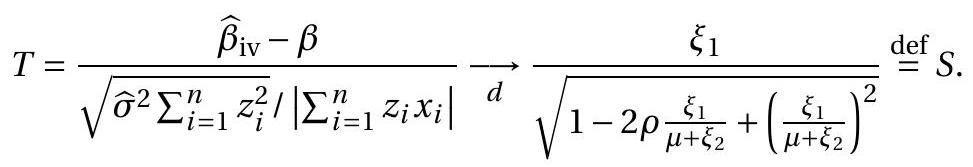
In general, \(S\) is non-normal and its distribution depends on the parameters \(\rho\) and \(\mu\).
Can we use the distribution \(S\) for inference on \(\beta\) ? The distribution depends on two unknown parameters and neither is consistently estimable. This means we cannot use the distribution in (12.82) with \(\rho\) and \(\mu\) replaced with estimates. To eliminate the dependence on \(\rho\) one possibility is to use the “worst case” value which turns out to be \(\rho=1\). By worst-case we mean the value which causes the greatest distortion away from normal critical values. Setting \(\rho=1\) we have the considerable simplification
\[ S=S_{1}=\xi\left|1+\frac{\xi}{\mu}\right| \]
where \(\xi \sim \mathrm{N}(0,1)\). When the model is strongly identified (so \(|\mu|\) is very large) then \(S_{1} \approx \xi\) is standard normal, consistent with classical theory. However when \(|\mu|\) is very small (but non-zero) \(\left|S_{1}\right| \approx \xi^{2} / \mu\) (in the sense that this term dominates), which is a scaled \(\chi_{1}^{2}\) and quite far from normal. As \(|\mu| \rightarrow 0\) we find the extreme case \(\left|S_{1}\right| \rightarrow p \infty\).
While (12.83) is a convenient simplification it does not yield a useful approximation for inference as the distribution in (12.83) is highly dependent on the unknown \(\mu\). If we take the worst-case value of \(\mu\), which is \(\mu=0\), we find that \(\left|S_{1}\right|\) diverges and all distributional approximations fail.
To break this impasse Stock and Yogo (2005) recommended a constructive alternative. Rather than using the worst-case \(\mu\) they suggested finding a threshold such that if \(\mu\) exceeds this threshold then the distribution (12.83) is not “too badly” distorted from the normal distribution.
Specifically, the Stock-Yogo recommendation can be summarized by two steps. First, the distribution result (12.83) can be used to find a threshold value \(\tau^{2}\) such that if \(\mu^{2} \geq \tau^{2}\) then the size of the nominal \({ }^{1}\) 5% test “Reject if \(|T| \geq 1.96\)” has asymptotic size \(\mathbb{P}\left[\left|S_{1}\right| \geq 1.96\right] \leq 0.15\). This means that while the goal is to obtain a test with size \(5 %\), we recognize that there may be size distortion due to weak instruments and are willing to tolerate a specific distortion. For example, a \(10 %\) distortion means we allow the actual size to be up to \(15 %\). Second, they use the asymptotic distribution of the reduced-form (first stage) \(F\) statistic to test if the actual unknown value of \(\mu^{2}\) exceeds the threshold \(\tau^{2}\). These two steps together give rise to the rule-of-thumb that the first-stage \(F\) statistic should exceed 10 in order to achieve reliable IV inference. (This is for the case of one instrumental variable. If there is more than one instrument then the rule-of-thumb changes.) We now describe the steps behind this reasoning in more detail.
The first step is to use the distribution (12.82) to determine the threshold \(\tau^{2}\). Formally, the goal is to find the value of \(\tau^{2}=\mu^{2}\) at which the asymptotic size of a nominal \(5 %\) test is actually a given \(r\) (e.g.
\({ }^{1}\) The term “nominal size” of a test is the official intended size - the size which would obtain under ideal circumstances. In this context the test “Reject if \(|T| \geq 1.96\)” has nominal size \(0.05\) as this would be the asymptotic rejection probability in the ideal context of strong instruments. \(r=0.15)\), thus \(\mathbb{P}\left[\left|S_{1}\right| \geq 1.96\right] \leq r\). By some algebra and the quadratic formula the event \(|\xi(1+\xi / \mu)|<x\) is the same as
\[ \frac{\mu^{2}}{4}-x \mu<\left(\xi+\frac{\mu}{2}\right)^{2}<\frac{\mu^{2}}{4}+x \mu . \]
The random variable between the inequalities is distributed \(\chi_{1}^{2}\left(\mu^{2} / 4\right)\), a noncentral chi-square with one degree of freedom and noncentrality parameter \(\mu^{2} / 4\). Thus
\[ \begin{aligned} \mathbb{P}\left[\left|S_{1}\right| \geq x\right] &=\mathbb{P}\left[\chi_{1}^{2}\left(\frac{\mu^{2}}{4}\right) \geq \frac{\mu^{2}}{4}+x \mu\right]+\mathbb{P}\left[\chi_{1}^{2}\left(\frac{\mu^{2}}{4}\right) \leq \frac{\mu^{2}}{4}-x \mu\right] \\ &=1-G\left(\frac{\mu^{2}}{4}+x \mu, \frac{\mu^{2}}{4}\right)+G\left(\frac{\mu^{2}}{4}-x \mu, \frac{\mu^{2}}{4}\right) \end{aligned} \]
where \(G(u, \lambda)\) is the distribution function of \(\chi_{1}^{2}(\lambda)\). Hence the desired threshold \(\tau^{2}\) solves
\[ 1-G\left(\frac{\tau^{2}}{4}+1.96 \tau, \frac{\tau^{2}}{4}\right)+G\left(\frac{\tau^{2}}{4}-1.96 \tau, \frac{\tau^{2}}{4}\right)=r \]
or effectively
\[ G\left(\frac{\tau^{2}}{4}+1.96 \tau, \frac{\tau^{2}}{4}\right)=1-r \]
because \(\tau^{2} / 4-1.96 \tau<0\) for relevant values of \(\tau\). The numerical solution (computed with the non-central chi-square distribution function, e.g. ncx \(2 c d f\) in MATLAB) is \(\tau^{2}=1.70\) when \(r=0.15\). (That is, the command
\[ \operatorname{ncx} 2 \mathrm{cdf}(1.7 / 4+1.96 * \operatorname{sqrt}(1.7), 1,1.7 / 4) \]
yields the answer \(0.8500\). Stock and Yogo (2005) approximate the same calculation using simulation methods and report \(\tau^{2}=1.82\).)
This calculation means that if the reduced form satisfies \(\mu^{2} \geq 1.7\), or equivalently if \(\Gamma^{2} \geq 1.7 / n\), then the asymptotic size of a nominal \(5 %\) test on the structural parameter is no larger than \(15 %\).
To summarize the Stock-Yogo first step, we calculate the minimum value \(\tau^{2}\) for \(\mu^{2}\) sufficient to ensure that the asymptotic size of a nominal 5% t-test does not exceed \(r\), and find that \(\tau^{2}=1.70\) for \(r=0.15\).
The Stock-Yogo second step is to find a critical value for the first-stage \(F\) statistic sufficient to reject the hypothesis that \(\mathbb{M}_{0}: \mu^{2}=\tau^{2}\) against \(\mathbb{M}_{1}: \mu^{2}>\tau^{2}\). We now describe this procedure.
They suggest testing \(\mathbb{M}_{0}: \mu^{2}=\tau^{2}\) at the \(5 %\) size using the first stage \(F\) statistic. If the \(F\) statistic is small so that the test does not reject then we should be worried that the true value of \(\mu^{2}\) is small and there is a weak instrument problem. On the other hand if the \(F\) statistic is large so that the test rejects then we can have some confidence that the true value of \(\mu^{2}\) is sufficiently large that the weak instrument problem is not too severe.
To implement the test we need to calculate an appropriate critical value. It should be calculated under the null hypothesis \(\mathbb{H}_{0}: \mu^{2}=\tau^{2}\). This is different from a conventional \(F\) test which is calculated under \(\mathbb{M}_{0}: \mu^{2}=0\).
We start by calculating the asymptotic distribution of \(\mathrm{F}\). Since there is one regressor and one instrument in our simplified setting the first-stage \(F\) statistic is the squared t-statistic from the reduced form. Given our previous calculations it has the asymptotic distribution
\[ \mathrm{F}=\frac{\widehat{\gamma}^{2}}{s(\widehat{\gamma})^{2}}=\frac{\left(\sum_{i=1}^{n} Z_{i} X_{i}\right)^{2}}{\left(\sum_{i=1}^{n} X_{i}^{2}\right) \widehat{\sigma}_{u}^{2}} \underset{d}{ }\left(\mu+\xi_{2}\right)^{2} \sim \chi_{1}^{2}\left(\mu^{2}\right) . \]
This is a non-central chi-square distribution \(G\left(u, \mu^{2}\right)\) with one degree of freedom and non-centrality parameter \(\mu^{2}\). To test \(\mathbb{M}_{0}: \mu^{2}=\tau^{2}\) against \(\mathbb{M}_{1}: \mu^{2}>\tau^{2}\) we reject for \(\mathrm{F} \geq c\) where \(c\) is selected so that the asymptotic rejection probability satisfies
\[ \mathbb{P}\left[\mathrm{F} \geq c \mid \mu^{2}=\tau^{2}\right] \rightarrow \mathbb{P}\left[\chi_{1}^{2}\left(\tau^{2}\right) \geq c\right]=1-G\left(c, \tau^{2}\right)=0.05 \]
for \(\tau^{2}=1.70\), or equivalently \(G(c, 1.7)=0.95\). This is found by inverting the non-central chi-square quantile function, e.g. the function \(Q(p, d)\) which solves \(G(Q(p, d), d)=p\). We find that \(c=Q(0.95,1.7)=8.7\). In MATLAB, this can be computed by ncx2inv \((.95,1.7\) ). Stock and Yogo (2005) report \(c=9.0\) because they used \(\tau^{2}=1.82\).
This means that if \(\mathrm{F}>8.7\) we can reject \(\mathbb{M}_{0}: \mu^{2}=1.7\) against \(\mathbb{H}_{1}: \mu^{2}>1.7\) with an asymptotic \(5 %\) test. In this context we should expect the IV estimator and tests to be reasonably well behaved. However, if \(\mathrm{F}<8.7\) then we should be cautious about the IV estimator, confidence intervals, and tests. This finding led Staiger and Stock (1997) to propose the informal “rule of thumb” that the first stage \(F\) statistic should exceed 10. Notice that \(\mathrm{F}\) exceeding \(8.7\) (or 10) is equivalent to the reduced form t-statistic exceeding \(2.94\) (or 3.16), which is considerably larger than a conventional check if the t-statistic is “significant”. Equivalently, the recommended rule-of-thumb for the case of a single instrument is to estimate the reduced form and verify that the t-statistic for exclusion of the instrumental variable exceeds 3 in absolute value.
Does the proposed procedure control the asymptotic size of a 2SLS test? The first step has asymptotic size bounded below \(r\) (e.g. 15%). The second step has asymptotic size 5%. By the Bonferroni bound (see Section 9.20) the two steps together have asymptotic size bounded below \(r+0.05\) (e.g. 20%). We can thus call the Stock-Yogo procedure a rigorous test with asymptotic size \(r+0.05\) (or 20%).
Our analysis has been confined to the case \(k_{2}=\ell_{2}=1\). Stock and Yogo (2005) also examine the case \(\ell_{2}>1\) (which requires numerical simulation to solve) and both the 2SLS and LIML estimators. They show that the \(F\) statistic critical values depend on the number of instruments \(\ell_{2}\) as well as the estimator. Their critical values (calculated by simulation) are in their paper and posted on Motohiro Yogo’s webpage. We report a subset in Table 12.4.
Table 12.4: 5% Critical Value for Weak Instruments, \(k_{2}=1\)
|\(\ell_{2}\)|\(0.10\)|\(0.15\)|\(0.20\)|\(0.25\)||\(0.10\)|\(0.15\)|\(0.20\)|\(0.25\)| |———:|—–:|—–:|—–:|—–:||—–:|—–:|—–:|—–:| | 1|\(16.4\)| \(9.0\)| \(6.7\)| \(5.5\)||\(16.4\)| \(9.0\)| \(6.7\)| \(5.5\)| | 2|\(19.9\)|\(11.6\)| \(8.7\)| \(7.2\)|| \(8.7\)| \(5.3\)| \(4.4\)| \(3.9\)| | 3|\(22.3\)|\(12.8\)| \(9.5\)| \(7.8\)|| \(6.5\)| \(4.4\)| \(3.7\)| \(3.3\)| | 4|\(24.6\)|\(14.0\)|\(10.3\)| \(8.3\)|| \(5.4\)| \(3.9\)| \(3.3\)| \(3.0\)| | 5|\(26.9\)|\(15.1\)|\(11.0\)| \(8.8\)|| \(4.8\)| \(3.6\)| \(3.0\)| \(2.8\)| | 6|\(29.2\)|\(16.2\)|\(11.7\)| \(9.4\)|| \(4.4\)| \(3.3\)| \(2.9\)| \(2.6\)| | 7|\(31.5\)|\(17.4\)|\(12.5\)| \(9.9\)|| \(4.2\)| \(3.2\)| \(2.7\)| \(2.5\)| | 8|\(33.8\)|\(18.5\)|\(13.2\)|\(10.5\)|| \(4.0\)| \(3.0\)| \(2.6\)| \(2.4\)| | 9|\(36.2\)|\(19.7\)|\(14.0\)|\(11.1\)|| \(3.8\)| \(2.9\)| \(2.5\)| \(2.3\)| | 10|\(38.5\)|\(20.9\)|\(14.8\)|\(11.6\)|| \(3.7\)| \(2.8\)| \(2.5\)| \(2.2\)| | 15|\(50.4\)|\(26.8\)|\(18.7\)|\(12.2\)|| \(3.3\)| \(2.5\)| \(2.2\)| \(2.0\)| | 20|\(62.3\)|\(32.8\)|\(22.7\)|\(17.6\)|| \(3.2\)| \(2.3\)| \(2.1\)| \(1.9\)| | 25|\(74.2\)|\(38.8\)|\(26.7\)|\(20.6\)|| \(3.8\)| \(2.2\)| \(2.0\)| \(1.8\)| | 30|\(86.2\)|\(44.8\)|\(30.7\)|\(23.6\)|| \(3.9\)| \(2.2\)| \(1.9\)| \(1.7\)|
Source: . One striking feature about these critical values is that those for the 2SLS estimator are strongly increasing in \(\ell_{2}\) while those for the LIML estimator are decreasing in \(\ell_{2}\). This means that when the number of instruments \(\ell_{2}\) is large, 2SLS requires a much stronger reduced form (larger \(\mu^{2}\) ) in order for inference to be reliable, but this is not the case for LIML. This is direct evidence that LIML inference is less sensitive to weak instruments than 2SLS. This makes a strong case for LIML over 2SLS, especially when \(\ell_{2}\) is large or the instruments are potentially weak.
We now summarize the recommended Staiger-Stock/Stock-Yogo procedure for \(k_{1} \geq 1, k_{2}=1\), and \(\ell_{2} \geq 1\). The structural equation and reduced form equations are
\[ \begin{aligned} &Y_{1}=Z_{1}^{\prime} \beta_{1}+Y_{2} \beta_{2}+e \\ &Y_{2}=Z_{1}^{\prime} \gamma_{1}+Z_{2}^{\prime} \gamma_{2}+u . \end{aligned} \]
The structural equation is estimated by either 2 SLS or LIML. Let \(\mathrm{F}\) be the \(F\) statistic for \(\mathbb{H}_{0}: \gamma_{2}=0\) in the reduced form equation. Let \(s\left(\widehat{\beta}_{2}\right)\) be a standard error for \(\beta_{2}\) in the structural equation. The procedure is:
Compare \(F\) with the critical values \(c\) in Table \(12.4\) with the row selected to match the number of excluded instruments \(\ell_{2}\) and the columns to match the estimation method (2SLS or LIML) and the desired size \(r\).
If \(F>c\) then report the 2 SLS or LIML estimates with conventional inference.
The Stock-Yogo test can be implemented in Stata using the command estat firststage after ivregress 2 sls or ivregres liml if a standard (non-robust) covariance matrix has been specified (that is, without the ‘, r’ option).
There are possible extensions to the Stock-Yogo procedure.
One modest extension is to use the information to convey the degree of confidence in the accuracy of a confidence interval. Suppose in an application you have \(\ell_{2}=5\) excluded instruments and have estimated your equation by 2SLS. Now suppose that your reduced form \(F\) statistic equals 12 . You check Table \(12.4\) and find that \(\mathrm{F}=12\) is significant with \(r=0.20\). Thus we can interpret the conventional 2SLS confidence interval as having coverage of \(80 %\) (or \(75 %\) if we make the Bonferroni correction). On the other hand if \(\mathrm{F}=27\) we would conclude that the test for weak instruments is significant with \(r=0.10\), meaning that the conventional 2SLS confidence interval can be interpreted as having coverage of \(90 %\) (or \(85 %\) after Bonferroni correction). Thus the value of the \(\mathrm{F}\) statistic can be used to calibrate the coverage accuracy.
A more substantive extension, which we now discuss, reverses the steps. Unfortunately this discussion will be limited to the case \(\ell_{2}=1\). First, use the reduced form \(F\) statistic to find a one-sided confidence interval for \(\mu^{2}\) of the form \(\left[\mu_{L}^{2}, \infty\right)\). Second, use the lower bound \(\mu_{L}^{2}\) to calculate a critical value \(c\) for \(S_{1}\) such that the 2SLS test has asymptotic size bounded below \(0.05\). This produces better size control than the Stock-Yogo procedure and produces more informative confidence intervals for \(\beta_{2}\). We now describe the steps in detail.
The first goal is to find a one-sided confidence interval for \(\mu^{2}\). This is found by test inversion. As we described earlier, for any \(\tau^{2}\) we reject \(\mathbb{M}_{0}: \mu^{2}=\tau^{2}\) in favor of \(\mathbb{H}_{1}: \mu^{2}>\tau^{2}\) if \(\mathrm{F}>c\) where \(G\left(c, \tau^{2}\right)=0.95\). Equivalently, we reject if \(G\left(\mathrm{~F}, \tau^{2}\right)>0.95\). By the test inversion principle an asymptotic \(95 %\) confidence interval \(\left[\mu_{L}^{2}, \infty\right)\) is the set of all values of \(\tau^{2}\) which are not rejected. Since \(G\left(\mathrm{~F}, \tau^{2}\right) \geq 0.95\) for all \(\tau^{2}\) in this set, the lower bound \(\mu_{L}^{2}\) satisfies \(G\left(\mathrm{~F}, \mu_{L}^{2}\right)=0.95\), and is found numerically. In MATLAB, the solution is mu2 when \(n c x 2 c d f(F, 1, m u 2)\) returns \(0.95 .\)
The second goal is to find the critical value \(c\) such that \(\mathbb{P}\left(\left|S_{1}\right| \geq c\right)=0.05\) when \(\mu^{2}=\mu_{L}^{2}\). From (12.84) this is achieved when
\[ 1-G\left(\frac{\mu_{L}^{2}}{4}+c \mu_{L}, \frac{\mu_{L}^{2}}{4}\right)+G\left(\frac{\mu_{L}^{2}}{4}-c \mu_{L}, \frac{\mu_{L}^{2}}{4}\right)=0.05 . \]
This can be solved as
\[ G\left(\frac{\mu_{L}^{2}}{4}+c \mu_{L}, \frac{\mu_{L}^{2}}{4}\right)=0.95 \text {. } \]
(The third term on the left-hand-side of (12.85) is zero for all solutions so can be ignored.) Using the non-central chi-square quantile function \(Q(p, d)\), this \(C\) equals
\[ c=\frac{Q\left(0.95, \frac{\mu_{L}^{2}}{4}\right)-\frac{\mu_{L}^{2}}{4}}{\mu_{L}} . \]
For example, in MATLAB this is found as \(c=(n c x 2 i n v ~(.95,1, \mathrm{mu} 2 / 4)-\mathrm{mu} 2 / 4) / \mathrm{sqrt}(\mathrm{mu} 2) .95 %\) confidence intervals for \(\beta_{2}\) are then calculated as \(\widehat{\beta}_{\mathrm{iv}} \pm c s\left(\widehat{\beta}_{\mathrm{iv}}\right)\).
We can also calculate a p-value for the t-statistic \(T\) for \(\beta_{2}\). This is
\[ p=1-G\left(\frac{\mu_{L}^{2}}{4}+|T| \mu_{L}, \frac{\mu_{L}^{2}}{4}\right)+G\left(\frac{\mu_{L}^{2}}{4}-|T| \mu_{L}, \frac{\mu_{L}^{2}}{4}\right) \]
where the third term equals zero if \(|T| \geq \mu_{L} / 4\). In MATLAB, for example, this can be calculated by the commands
\(\mathrm{T} 1=\mathrm{mu} 2 / 4+\operatorname{abs}(\mathrm{T}) * \operatorname{sqrt}(\mathrm{mu} 2)\)
\(\mathrm{T} 2=\mathrm{mu} 2 / 4-\operatorname{abs}(\mathrm{T}) * \operatorname{sqrt}(\mathrm{mu} 2) ;\)
\(\mathrm{p}=-\mathrm{ncx} 2 \mathrm{cdf}(\mathrm{T} 1,1, \mathrm{mu} 2 / 4)+\mathrm{ncx} 2 \mathrm{cdf}(\mathrm{T} 2,1, \mathrm{mu} 2 / 4)\);
These confidence intervals and p-values will be larger than the conventional intervals and p-values, reflecting the incorporation of information about the strength of the instruments through the first-stage \(F\) statistic. Also, by the Bonferroni bound these tests have asymptotic size bounded below \(10 %\) and the confidence intervals have asymptotic converage exceeding \(90 %\), unlike the Stock-Yogo method which has size of \(20 %\) and coverage of \(80 %\).
The augmented procedure suggested here, only for the \(\ell_{2}=1\) case, is
Find \(\mu_{L}^{2}\) which solves \(G\left(\mathrm{~F}, \mu_{L}^{2}\right)=0.95\). In MATLAB, the solution is mu2 when \(\operatorname{cx} 2 \operatorname{cdf}(\mathrm{F}, 1, \operatorname{mu} 2)\) returns \(0.95 .\)
Find \(c\) which solves \(G\left(\mu_{L}^{2} / 4+c \mu_{L}, \mu_{L}^{2} / 4\right)=0.95\). In MATLAB, the command is \(c=(n c x 2 \operatorname{inv}(.95,1, \mathrm{mu} 2 / 4)-\mathrm{mu} 2 / 4) / \mathrm{sqrt}(\mathrm{mu} 2)\)
Report the confidence interval \(\widehat{\beta}_{2} \pm c s\left(\widehat{\beta}_{2}\right)\) for \(\beta_{2}\).
For the \(\mathrm{t}\) statistic \(T=\left(\widehat{\beta}_{2}-\beta_{2}\right) / s\left(\widehat{\beta}_{2}\right)\) the asymptotic \(\mathrm{p}\)-value is
\[ p=1-G\left(\frac{\mu_{L}^{2}}{4}+|T| \mu_{L}, \frac{\mu_{L}^{2}}{4}\right)+G\left(\frac{\mu_{L}^{2}}{4}-|T| \mu_{L}, \frac{\mu_{L}^{2}}{4}\right) \]
which is computed in MATLAB by \(\mathrm{T} 1=\mathrm{mu} 2 / 4+\mathrm{abs}(\mathrm{T}) * \operatorname{sqrt}(\mathrm{mu} 2) ; \mathrm{T} 2=\mathrm{mu} 2 / 4-\mathrm{abs}(\mathrm{T}) * \mathrm{sqrt}(\mathrm{mu} 2)\); and \(\mathrm{p}=1-\mathrm{ncx} 2 \mathrm{cdf}(\mathrm{T} 1,1, \mathrm{mu} 2 / 4)+\mathrm{ncx} 2 \mathrm{cdf}(\mathrm{T} 2,1, \mathrm{mu} 2 / 4)\).
We have described an extension to the Stock-Yogo procedure for the case of one instrumental variable \(\ell_{2}=1\). This restriction was due to the use of the analytic formula (12.85) for the asymptotic distribution which is only available when \(\ell_{2}=1\). In principle the procedure could be extended using simulation or bootstrap methods but this has not been done to my knowledge.
To illustrate the Stock-Yogo and extended procedures let us return to the Card proximity example. Take the IV estimates reported in the second column of Table \(12.1\) which used college proximity as a single instrument. The reduced form estimates for the endogenous variable education are reported in the second column of Table 12.2. The excluded instrument college has a t-ratio of \(4.2\) which implies an \(F\) statistic of 17.8. The \(F\) statistic exceeds the rule-of thumb of 10 so the structural estimates pass the Stock-Yogo threshold. Based on their recommendation this means that we can interpret the estimates conventionally. However, the conventional confidence interval, e.g. for the returns to education \(0.132 \pm\) \(0.049 \times 1.96=[0.04,0.23]\), has an asymptotic coverage of \(80 %\) rather than the nominal \(95 %\) rate.
Now consider the extended procedure. Given \(\mathrm{F}=17.8\) we calculate the lower bound \(\mu_{L}^{2}=6.6\). This implies a critical value of \(C=2.7\). Hence an improved confidence interval for the returns to education in this equation is \(0.132 \pm 0.049 \times 2.7=[0.01,0.26]\). This is a wider confidence interval but has improved asymptotic coverage of \(90 %\). The p-value for \(\beta_{2}=0\) is \(p=0.012\).
Next, take the 2SLS estimates reported in the fourth column of Table \(11.1\) which use the two instruments public and private. The reduced form equation is reported in column six of Table 12.2. An \(F\) statistic for exclusion of the two instruments is \(F=13.9\) which exceeds the \(15 %\) size threshold for 2SLS and all thresholds for LIML, indicating that the structural estimates pass the Stock-Yogo threshold test and can be interpreted conventionally.
The weak instrument methods described here are important for applied econometrics as they discipline researchers to assess the quality of their reduced form relationships before reporting structural estimates. The theory, however, has limitations and shortcomings, in particular the strong assumption of conditional homoskedasticity. Despite this limitation, in practice researchers apply the Stock-Yogo recommendations to estimates computed with heteroskedasticity-robust standard errors. This is an active area of research so the recommended methods may change in the years ahead.
12.39 Weak Instruments with \(k_{2}>1\)
When there is more than one endogenous regressor \(\left(k_{2}>1\right)\) it is better to examine the reduced form as a system. Staiger and Stock (1997) and Stock and Yogo (2005) provided an analysis of this case and constructed a test for weak instruments. The theory is considerably more involved than the \(k_{2}=1\) case so we briefly summarize it here excluding many details, emphasizing their suggested methods.
The structural equation and reduced form equations are
\[ \begin{aligned} &Y_{1}=Z_{1}^{\prime} \beta_{1}+Y_{2}^{\prime} \beta_{2}+e \\ &Y_{2}=\Gamma_{12}^{\prime} Z_{1}+\Gamma_{22}^{\prime} Z_{2}+u_{2} . \end{aligned} \]
As in the previous section we assume that the errors are conditionally homoskedastic.
Identification of \(\beta_{2}\) requires the matrix \(\Gamma_{22}\) to be full rank. A necessary condition is that each row of \(\Gamma_{22}^{\prime}\) is non-zero but this is not sufficient.
We focus on the size performance of the homoskedastic Wald statistic for the 2SLS estimator of \(\beta_{2}\). For simplicity assume that the variance of \(e\) is known and normalized to one. Using representation (12.32), the Wald statistic can be written as
\[ W=\boldsymbol{e}^{\prime} \widetilde{\boldsymbol{Z}}_{2}\left(\widetilde{\boldsymbol{Z}}_{2}^{\prime} \widetilde{\boldsymbol{Z}}_{2}\right)^{-1} \widetilde{\boldsymbol{Z}}_{2}^{\prime} \boldsymbol{Y}_{2}\left(\boldsymbol{Y}_{2}^{\prime} \widetilde{\boldsymbol{Z}}_{2}\left(\widetilde{\boldsymbol{Z}}_{2}^{\prime} \widetilde{\boldsymbol{Z}}_{2}\right)^{-1} \widetilde{\boldsymbol{Z}}_{2}^{\prime} \boldsymbol{Y}_{2}\right)^{-1}\left(\boldsymbol{Y}_{2}^{\prime} \widetilde{\boldsymbol{Z}}_{2}\left(\widetilde{\boldsymbol{Z}}_{2}^{\prime} \widetilde{\boldsymbol{Z}}_{2}\right)^{-1} \widetilde{\boldsymbol{Z}}_{2}^{\prime} \boldsymbol{e}\right) \]
where \(\widetilde{\boldsymbol{Z}}_{2}=\left(\boldsymbol{I}_{n}-\boldsymbol{P}_{1}\right) \boldsymbol{Z}_{2}\) and \(\boldsymbol{P}_{1}=\boldsymbol{Z}_{1}\left(\boldsymbol{Z}_{1}^{\prime} \boldsymbol{Z}_{1}\right)^{-1} \boldsymbol{Z}_{1}^{\prime}\).
Recall from Section \(12.36\) that Stock and Staiger model the excluded instruments \(Z_{2}\) as weak by setting \(\Gamma_{22}=n^{-1 / 2} \boldsymbol{C}\) for some matrix \(\boldsymbol{C}\). In this framework we have the asymptotic distribution results
\[ \frac{1}{n} \widetilde{\boldsymbol{Z}}_{2}^{\prime} \widetilde{\boldsymbol{Z}}_{2} \underset{p}{\longrightarrow} \boldsymbol{Q}=\mathbb{E}\left[Z_{2} Z_{2}^{\prime}\right]-\mathbb{E}\left[Z_{2} Z_{1}^{\prime}\right]\left(\mathbb{E}\left[Z_{1} Z_{1}^{\prime}\right]\right)^{-1} \mathbb{E}\left[Z_{1} Z_{2}^{\prime}\right] \]
and
\[ \frac{1}{\sqrt{n}} \widetilde{\boldsymbol{Z}}_{2}^{\prime} \boldsymbol{e} \underset{d}{\longrightarrow} \boldsymbol{Q}^{1 / 2} \xi_{0} \]
where \(\xi_{0}\) is a matrix normal variate whose columns are independent \(\mathrm{N}(0, \boldsymbol{I})\). Furthermore, setting \(\Sigma=\) \(\mathbb{E}\left[u_{2} u_{2}^{\prime}\right]\) and \(\overline{\boldsymbol{C}}=\boldsymbol{Q}^{1 / 2} \boldsymbol{C} \Sigma^{-1 / 2}\),
\[ \frac{1}{\sqrt{n}} \widetilde{\boldsymbol{Z}}_{2}^{\prime} \boldsymbol{Y}_{2}=\frac{1}{n} \widetilde{\boldsymbol{Z}}_{2}^{\prime} \widetilde{\boldsymbol{Z}}_{2} \boldsymbol{C}+\frac{1}{\sqrt{n}} \widetilde{\boldsymbol{Z}}_{2}^{\prime} \boldsymbol{U}_{2} \underset{d}{\longrightarrow} \boldsymbol{Q}^{1 / 2} \overline{\boldsymbol{C}} \Sigma^{1 / 2}+\boldsymbol{Q}^{1 / 2} \xi_{2} \Sigma^{1 / 2} \]
where \(\xi_{2}\) is a matrix normal variate whose columns are independent \(\mathrm{N}(0, \boldsymbol{I})\). The variables \(\xi_{0}\) and \(\xi_{2}\) are correlated. Together we obtain the asymptotic distribution of the Wald statistic
\[ W \underset{d}{\longrightarrow} S=\xi_{0}^{\prime}\left(\overline{\boldsymbol{C}}+\xi_{2}\right)\left(\overline{\boldsymbol{C}}^{\prime} \overline{\boldsymbol{C}}\right)^{-1}\left(\overline{\boldsymbol{C}}+\xi_{2}\right)^{\prime} \xi_{0} \]
Using the spectral decomposition, \(\overline{\boldsymbol{C}}^{\prime} \overline{\boldsymbol{C}}=\boldsymbol{H}^{\prime} \Lambda \boldsymbol{H}\) where \(\boldsymbol{H}^{\prime} \boldsymbol{H}=\boldsymbol{I}\) and \(\Lambda\) is diagonal. Thus we can write \(S=\xi_{0}^{\prime} \bar{\xi}_{2} \Lambda^{-1} \bar{\xi}_{2}^{\prime} \xi_{0}\) where \(\bar{\xi}_{2}=\overline{\boldsymbol{C}} \boldsymbol{H}^{\prime}+\xi_{2} \boldsymbol{H}^{\prime}\). The matrix \(\xi^{*}=\left(\xi_{0}, \bar{\xi}_{2}\right)\) is multivariate normal, so \(\xi^{* \prime} \xi^{*}\) has what is called a non-central Wishart distribution. It only depends on the matrix \(\overline{\boldsymbol{C}}\) through \(\boldsymbol{H} \overline{\boldsymbol{C}}^{\prime} \overline{\boldsymbol{C}} \boldsymbol{H}^{\prime}=\Lambda\) which are the eigenvalues of \(\overline{\boldsymbol{C}}^{\prime} \overline{\boldsymbol{C}}\). Since \(S\) is a function of \(\xi^{*}\) only through \(\bar{\xi}_{2}^{\prime} \xi_{0}\) we conclude that \(S\) is a function of \(\overline{\boldsymbol{C}}\) only through these eigenvalues.
This is a very quick derivation of a rather involved derivation but the conclusion drawn by Stock and Yogo is that the asymptotic distribution of the Wald statistic is non-standard and a function of the model parameters only through the eigenvalues of \(\overline{\boldsymbol{C}} \overline{\bar{C}}\) and the correlations between the normal variates \(\xi_{0}\) and \(\bar{\xi}_{2}\). The worst-case can be summarized by the maximal correlation between \(\xi_{0}\) and \(\bar{\xi}_{2}\) and the smallest eigenvalue of \(\overline{\boldsymbol{C}}^{\prime} \overline{\boldsymbol{C}}\). For convenience they rescale the latter by dividing by the number of endogenous variables. Define
\[ \boldsymbol{G}=\overline{\boldsymbol{C}}^{\prime} \overline{\boldsymbol{C}} / k_{2}=\Sigma^{-1 / 2} \boldsymbol{C}^{\prime} \boldsymbol{Q} \boldsymbol{C} \Sigma^{-1 / 2} / k_{2} \]
and
\[ g=\lambda_{\min }(\boldsymbol{G})=\lambda_{\min }\left(\Sigma^{-1 / 2} \boldsymbol{C}^{\prime} \boldsymbol{Q} \boldsymbol{C} \Sigma^{-1 / 2}\right) / k_{2} . \]
This can be estimated from the reduced-form regression
\[ X_{2 i}=\widehat{\Gamma}_{12}^{\prime} Z_{1 i}+\widehat{\Gamma}_{22}^{\prime} Z_{2 i}+\widehat{u}_{2 i} . \]
The estimator is
\[ \begin{aligned} \widehat{\boldsymbol{G}} &=\widehat{\Sigma}^{-1 / 2} \widehat{\Gamma}_{22}^{\prime}\left(\widetilde{\boldsymbol{Z}}_{2}^{\prime} \widetilde{\boldsymbol{Z}}_{2}\right) \widehat{\Gamma}_{22} \widehat{\Sigma}^{-1 / 2} / k_{2}=\widehat{\Sigma}^{-1 / 2}\left(\boldsymbol{X}_{2}^{\prime} \widetilde{\boldsymbol{Z}}_{2}\left(\widetilde{\boldsymbol{Z}}_{2}^{\prime} \widetilde{\boldsymbol{Z}}_{2}\right)^{-1} \widetilde{\boldsymbol{Z}}_{2}^{\prime} \boldsymbol{X}_{2}\right) \widehat{\Sigma}^{-1 / 2} / k_{2} \\ \widehat{\Sigma} &=\frac{1}{n-k} \sum_{i=1}^{n} \widehat{u}_{2 i} \widehat{u}_{2 i}^{\prime} \\ \widehat{g} &=\lambda_{\min }(\widehat{\boldsymbol{G}}) \end{aligned} \]
\(\widehat{\boldsymbol{G}}\) is a matrix \(F\)-type statistic for the coefficient matrix \(\widehat{\Gamma}_{22}\).
The statistic \(\widehat{g}\) was proposed by Cragg and Donald (1993) as a test for underidentification. Stock and Yogo (2005) use it as a test for weak instruments. Using simulation methods they determined critical values for \(\widehat{g}\) similar to those for \(k_{2}=1\). For given size \(r>0.05\) there is a critical value \(c\) (reported in the table below) such that if \(\widehat{g}>c\) then the 2SLS (or LIML) Wald statistic \(W\) for \(\widehat{\beta}_{2}\) has asymptotic size bounded below \(r\). On the other hand, if \(\widehat{g} \leq c\) then we cannot bound the asymptotic size below \(r\) and we cannot reject the hypothesis of weak instruments. Critical values (calculated by simulation) are reported in their paper and posted on Motohiro Yogo’s webpage. We report a subset for the case \(k_{2}=2\) in Table 12.5. The methods and theory applies to the cases \(k_{2}>2\) as well but those critical values have not been calculated. As for the \(k_{2}=1\) case the critical values for 2 SLS are dramatically increasing in \(\ell_{2}\). Thus when the model is over-identified, we need a large value of \(\widehat{g}\) to reject the hypothesis of weak instruments. This is a strong cautionary message to check the \(\widehat{g}\) statistic in applications. Furthermore, the critical values for LIML are generally decreasing in \(\ell_{2}\) (except for \(r=0.10\) where the critical values are increasing for large \(\ell_{2}\) ). This means that for over-identified models LIML inference is less sensitive to weak instruments than 2SLS and may be the preferred estimation method.
The Stock-Yogo test can be implemented in Stata using the command estat firststage after ivregress 2sls or ivregres \(\operatorname{liml}\) if a standard (non-robust) covariance matrix has been specified (that is, without the ‘, r’ option). Critical values which control for size are only available for \(k_{2} \leq 2\). For for \(k_{2}>2\) critical values which control for relative bias are reported.
Robust versions of the test have been proposed by Kleibergen and Paap (2006). These can be implemented in Stata using the downloadable command ivreg2.
Table 12.5: 5% Critical Value for Weak Instruments, \(k_{2}=2\)
|\(\ell_{2}\)|\(0.10\)|\(0.15\)|\(0.20\)|\(0.25\)||\(0.10\)|\(0.15\)|\(0.20\)|\(0.25\)| |———:|—–:|—–:|—–:|—–:||—–:|—–:|—–:|—–:| | 2| \(7.0\)| \(4.6\)| \(3.9\)| \(3.6\)|| \(7.0\)| \(4.6\)| \(3.9\)| \(3.6\)| | 3|\(13.4\)| \(8.2\)| \(6.4\)| \(5.4\)|| \(5.4\)| \(3.8\)| \(3.3\)| \(3.1\)| | 4|\(16.9\)| \(9.9\)| \(7.5\)| \(6.3\)|| \(4.7\)| \(3.4\)| \(3.0\)| \(2.8\)| | 5|\(19.4\)|\(11.2\)| \(8.4\)| \(6.9\)|| \(4.3\)| \(3.1\)| \(2.8\)| \(2.6\)| | 6|\(21.7\)|\(12.3\)| \(9.1\)| \(7.4\)|| \(4.1\)| \(2.9\)| \(2.6\)| \(2.5\)| | 7|\(23.7\)|\(13.3\)| \(9.8\)| \(7.9\)|| \(3.9\)| \(2.8\)| \(2.5\)| \(2.4\)| | 8|\(25.6\)|\(14.3\)|\(10.4\)| \(8.4\)|| \(3.8\)| \(2.7\)| \(2.4\)| \(2.3\)| | 9|\(27.5\)|\(15.2\)|\(11.0\)| \(8.8\)|| \(3.7\)| \(2.7\)| \(2.4\)| \(2.2\)| | 10|\(29.3\)|\(16.2\)|\(11.6\)| \(9.3\)|| \(3.6\)| \(2.6\)| \(2.3\)| \(2.1\)| | 15|\(38.0\)|\(20.6\)|\(14.6\)|\(11.6\)|| \(3.5\)| \(2.4\)| \(2.1\)| \(2.0\)| | 20|\(46.6\)|\(25.0\)|\(17.6\)|\(13.8\)|| \(3.6\)| \(2.4\)| \(2.0\)| \(1.9\)| | 25|\(55.1\)|\(29.3\)|\(20.6\)|\(16.1\)|| \(3.6\)| \(2.4\)|\(1.97\)| \(1.8\)| | 30|\(63.5\)|\(33.6\)|\(23.5\)|\(18.3\)|| \(4.1\)| \(2.4\)|\(1.95\)| \(1.7\)|
Source: .
12.40 Example: Acemoglu, Johnson, and Robinson (2001)
One particularly well-cited instrumental variable regression is in Acemoglu, Johnson, and Robinson (2001) with additional details published in (2012). They are interested in the effect of political institutions on economic performance. The theory is that good institutions (rule-of-law, property rights) should result in a country having higher long-term economic output than if the same country had poor institutions. To investigate this question they focus on a sample of 64 former European colonies. Their data is in the file AJR2001 on the textbook website.
The authors’ premise is that modern political institutions have been influenced by colonization. In particular they argue that colonizing countries tended to set up colonies as either an “extractive state” or as a “migrant colony”. An extractive state was used by the colonizer to extract resources for the colonizing country but was not largely settled by the European colonists. In this case the colonists had no incentive to set up good political institutions. In contrast, if a colony was set up as a “migrant colony” then large numbers of European settlers migrated to the colony to live. These settlers desired institutions similar to those in their home country and hence had an incentive to set up good political institutions. The nature of institutions is quite persistent over time so these \(19^{t h}\)-century foundations affect the nature of modern institutions. The authors conclude that the \(19^{t h}\)-century nature of the colony is predictive of the nature of modern institutions and hence modern economic growth.
To start the investigation they report an OLS regression of log GDP per capita in 1995 on a measure of political institutions they call risk which is a measure of legal protection against expropriation. This variable ranges from 0 to 10 , with 0 the lowest protection against appropriation and 10 the highest. For each country the authors take the average value of the index over 1985 to 1995 (the mean is \(6.5\) with a standard deviation of 1.5). Their reported OLS estimates (intercept omitted) are
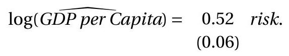
These estimates imply a \(52 %\) difference in GDP between countries with a 1 -unit difference in risk.
The authors argue that the risk is endogenous since economic output influences political institutions and because the variable risk is undoubtedly measured with error. These issues induce least-square bias in different directions and thus the overall bias effect is unclear.
To correct for endogeneity bias the authors argue the need for an instrumental variable which does not directly affect economic performance yet is associated with political institutions. Their innovative suggestion was to use the mortality rate which faced potential European settlers in the \(19^{t h}\) century. Colonies with high expected mortality were less attractive to European settlers resulting in lower levels of European migrants. As a consequence the authors expect such colonies to be more likely structured as an extractive state rather than a migrant colony. To measure the expected mortality rate the authors use estimates provided by historical research of the annualized deaths per 1000 soldiers, labeled mortality. (They used military mortality rates as the military maintained high-quality records.) The first-stage regression is
\[ \text { risk }=\underset{(0.13)}{-0.61} \log (\text { mortality })+\widehat{u} . \]
These estimates confirm that \(19^{t h}\)-century high mortality rates are associated with lower quality modern institutions. Using \(\log\) (mortality) as an instrument for risk, they estimate the structural equation using 2SLS and report
\[ \log (\text { GDP per Capita })=\begin{gathered} 0.94 \text { risk. } \\ (0.16) \end{gathered} \]
This estimate is much higher than the OLS estimate from (12.86). The estimate is consistent with a near doubling of GDP due to a 1-unit difference in the risk index.
These are simple regressions involving just one right-hand-side variable. The authors considered a range of other models. Included in these results are a reversal of a traditional finding. In a conventional least squares regression two relevant variables for output are latitude (distance from the equator) and africa (a dummy variable for countries from Africa) both of which are difficult to interpret causally. But in the proposed instrumental variables regression the variables latitude and africa have much smaller and statistically insignificant - coefficients. To assess the specification we can use the Stock-Yogo and endogeneity tests. The Stock-Yogo test is from the reduced form (12.87). The instrument has a t-ratio of \(4.8\) (or \(F=23\) ) which exceeds the StockYogo critical value and hence can be treated as strong. For an endogeneity test we take the least squares residual \(\widehat{u}\) from this equation and include it in the structural equation and estimate by least squares. We find a coefficient on \(\widehat{u}\) of \(-0.57\) with a t-ratio of \(4.7\) which is highly significant. We conclude that the least squares and 2SLS estimates are statistically different and reject the hypothesis that the variable risk is exogenous for the GDP structural equation.
In Exercise \(12.22\) you will replicate and extend these results using the authors’ data.
This paper is a creative and careful use of instrumental variables. The creativity stems from the historical analysis which lead to the focus on mortality as a potential predictor of migration choices. The care comes in the implementation as the authors needed to gather country-level data on political institutions and mortality from distinct sources. Putting these pieces together is the art of the project.
12.41 Example: Angrist and Krueger (1991)
Another influential instrument variable regression is Angrist and Krueger (1991). Their concern, similar to Card (1995), is estimation of the structural returns to education while treating educational attainment as endogenous. Like Card, their goal is to find an instrument which is exogenous for wages yet has an impact on education. A subset of their data in the file AK1991 on the textbook website.
Their creative suggestion was to focus on compulsory school attendance policies and their interaction with birthdates. Compulsory schooling laws vary across states in the United States, but typically require that youth remain in school until their sixteenth or seventeenth birthday. Angrist and Krueger argue that compulsory schooling has a causal effect on wages - youth who would have chosen to drop out of school stay in school for more years - and thus have more education which causally impacts their earnings as adults.
Angrist and Krueger observe that these policies have differential impact on youth who are born early or late in the school year. Students who are born early in the calendar year are typically older when they enter school. Consequently when they attain the legal dropout age they have attended less school than those born near the end of the year. This means that birthdate (early in the calendar year versus late) exogenously impacts educational attainment and thus wages through education. Yet birthdate must be exogenous for the structural wage equation as there is no reason to believe that birthdate itself has a causal impact on a person’s ability or wages. These considerations together suggest that birthdate is a valid instrumental variable for education in a causal wage equation.
Typical wage datasets include age but not birthdates. To obtain information on birthdate, Angrist and Krueger used U.S. Census data which includes an individual’s quarter of birth (January-March, AprilJune, etc.). They use this variable to construct 2SLS estimates of the return to education.
Their paper carefully documents that educational attainment varies by quarter of birth (as predicted by the above discussion), and reports a large set of least squares and 2SLS estimates. We focus on two estimates at the core of their analysis, reported in column (6) of their Tables \(\mathrm{V}\) and VII. This involves data from the 1980 census with men born in 1930-1939, with 329,509 observations. The first equation is
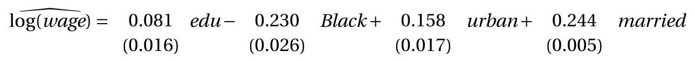
where \(e d u\) is years of education and Black, urban, and married are dummy variables indicating race (1 if Black, 0 otherwise), lives in a metropolitan area, and if married. In addition to the reported coefficients the equation also includes as regressors nine year-of-birth dummies and eight region-of-residence dummies. The equation is estimated by 2 SLS. The instrumental variables are the 30 interactions of three quarter-of-birth times ten year-of-birth dummy variables.
This equation indicates an \(8 %\) increase in wages due to each year of education.
Angrist and Krueger observe that the effect of compulsory education laws are likely to vary across states, so expand the instrument set to include interactions with state-of-birth. They estimate the following equation by 2 SLS
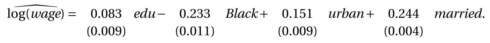
This equation also adds fifty state-of-birth dummy variables as regressors. The instrumental variables are the 180 interactions of quarter-of-birth times year-of-birth dummy variables, plus quarter-of-birth times state-of-birth interactions.
This equation shows a similar estimated causal effect of education on wages as in (12.89). More notably, the standard error is smaller in (12.90) suggesting improved precision by the expanded instrumental variable set.
However, these estimates seem excellent candidates for weak instruments and many instruments. Indeed, this paper (published in 1991) helped spark these two literatures. We can use the Stock-Yogo tools to explore the instrument strength and the implications for the Angrist-Krueger estimates.
We first take equation (12.89). Using the original Angrist-Krueger data we estimate the corresponding reduced form and calculate the \(F\) statistic for the 30 excluded instruments. We find \(F=4.8\). It has an asymptotic p-value of \(0.000\) suggesting that we can reject (at any significance level) the hypothesis that the coefficients on the excluded instruments are zero. Thus Angrist and Krueger appear to be correct that quarter of birth helps to explain educational attainment and are thus a valid instrumental variable set. However, using the Stock-Yogo test, \(F=4.8\) is not high enough to reject the hypothesis that the instruments are weak. Specifically, for \(\ell_{2}=30\) and \(15 %\) size the critical value for the \(F\) statistic is 45 . The actual value of \(4.8\) is far below 45. Since we cannot reject that the instruments are weak this indicates that we cannot interpret the 2SLS estimates and test statistics in (12.89) as reliable.
Second, take (12.90) with the expanded regressor and instrument set. Estimating the corresponding reduced form we find the \(F\) statistic for the 180 excluded instruments is \(\mathrm{F}=2.43\) which also has an asymptotic p-value of \(0.000\) indicating that we can reject at any significance level the hypothesis that the excluded instruments have no effect on educational attainment. However, using the Stock-Yogo test we also cannot reject the hypothesis that the instruments are weak. While Stock and Yogo did not calculate the critical values for \(\ell_{2}=180\), the 2 SLS critical values are increasing in \(\ell_{2}\) so we can use those for \(\ell_{2}=30\) as a lower bound. The observed value of \(\mathrm{F}=2.43\) is far below the level needed for significance. Consequently the results in (12.90) cannot be viewed as reliable. In particular, the observation that the standard errors in (12.90) are smaller than those in (12.89) should not be interpreted as evidence of greater precision. Rather, they should be viewed as evidence of unreliability due to weak instruments.
When instruments are weak one constructive suggestion is to use LIML estimation rather than 2SLS. Another constructive suggestion is to alter the instrument set. While Angrist and Krueger used a large number of instrumental variables we can consider a smaller set. Take equation (12.89). Rather than estimating it using the 30 interaction instruments consider using only the three quarter-of-birth dummy variables. We report the reduced form estimates here:
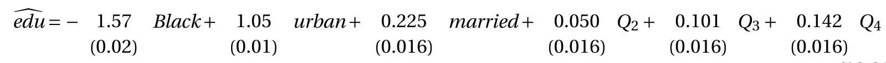
where \(Q_{2}, Q_{3}\), and \(Q_{4}\) are dummy variables for birth in the \(2^{n d}, 3^{r d}\), and \(4^{t h}\) quarter. The regression also includes nine year-of-birth and eight region-of-residence dummy variables.
The reduced form coefficients in (12.91) on the quarter-of-birth dummies are instructive. The coefficients are positive and increasing, consistent with the Angrist-Krueger hypothesis that individuals born later in the year achieve higher average education. Focusing on the weak instrument problem the \(F\) test for exclusion of these three variables is \(\mathrm{F}=31\). The Stock-Yogo critical value is \(12.8\) for \(\ell_{2}=3\) and a size of \(15 %\), and is \(22.3\) for a size of \(10 %\). Since \(F=31\) exceeds both these thresholds we can reject the hypothesis that this reduced form is weak. Estimating the model by 2SLS with these three instruments we find
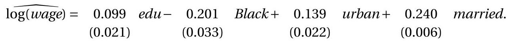
These estimates indicate a slightly larger (10%) causal impact of education on wages but with a larger standard error. The Stock-Yogo analysis indicates that we can interpret the confidence intervals from these estimates as having asymptotic coverage \(85 %\).
While the original Angrist-Krueger estimates suffer due to weak instruments their paper is a very creative and thoughtful application of the natural experiment methodology. They discovered a completely exogenous variation present in the world - birthdate - and showed how this has a small but measurable effect on educational attainment and thereby on earnings. Their crafting of this natural experiment regression is clever and demonstrates a style of analysis which can successfully underlie an effective instrumental variables empirical analysis.
12.42 Programming
We now present Stata code for some of the empirical work reported in this chapter.
Stata do File for Card Example use Card1995.dta, clear
set more off
gen exp = age \(76-\) ed \(76-6\)
gen \(\exp 2=\left(\exp ^{\wedge} 2\right) / 100\)
- Drop observations with missing wage
drop if lwage \(76==.\)
- Table \(12.1\) regressions
reg lwage76 ed76 exp exp2 black reg76r smsa76r, \(r\)
ivregress 2 sls lwage76 exp exp2 black reg76r smsa76r (ed76=nearc4), r
ivregress 2 sls lwage76 black reg76r smsa76r (ed76 exp exp2 \(=\) nearc4 age76 age2), r perfect
ivregress 2sls lwage76 exp exp2 black reg76r smsa76r (ed76=nearc4a nearc4b), \(\mathrm{r}\)
ivregress 2 sls lwage76 black reg76r smsa76r (ed76 exp exp2 \(=\) nearc4a nearc4b age76 age2), \(r\) perfect
ivregress liml lwage76 exp exp2 black reg76r smsa76r (ed76=nearc4a nearc4b), \(r\)
- Table \(12.2\) regressions
reg lwage76 exp exp2 black reg76r smsa76r nearc4, \(r\)
reg ed76 exp exp2 black reg76r smsa76r nearc4, \(r\)
reg ed76 black reg76r smsa76r nearc4 age76 age2, \(r\)
reg exp black reg76r smsa76r nearc4 age76 age2, \(r\)
reg exp2 black reg76r smsa76r nearc4 age76 age2, \(r\)
reg ed76 exp exp2 black reg76r smsa76r nearc4a nearc4b, \(r\)
reg lwage76 ed76 exp exp2 smsa76r reg76r, \(r\)
reg lwage76 nearc4 exp exp2 smsa76r reg76r, \(r\)
reg ed76 nearc4 exp exp2 smsa76r reg76r, \(r\)
Stata do File for Acemoglu-Johnson-Robinson Example use AJR2001.dta, clear
reg loggdp risk
reg risk logmort0
predict \(u\), residual
ivregress 2sls loggdp (risk=logmort0)
reg loggdp risk \(u\)
| Stata do File for Angrist-Krueger Example |
|---|
| use AK1991.dta, clear |
| ivregress 2sls logwage black smsa married i.yob i.region (edu = i.qob#i.yob) |
| ivregress 2sls logwage black smsa married i.yob i.region i.state (edu \(=\) |
| i.qob#i.yob i.qob#i.state) |
| reg edu black smsa married i.yob i.region i.qob#i.yob |
| testparm i.qob#i.yob |
| reg edu black smsa married i.yob i.region i.state i.qob#i.yob i.qob#i.state |
| testparm i.qob#i.yob i.qob#i.state |
| reg edu black smsa married i.yob i.region i.qob |
| testparm i.qob |
| ivregress 2sls logwage black smsa married i.yob i.region (edu = i.qob) |
12.43 Exercises
Exercise 12.1 Consider the single equation model \(Y=Z \beta+e\) where \(Y\) and \(Z\) are both real-valued \((1 \times 1)\). Let \(\widehat{\beta}\) denote the IV estimator of \(\beta\) using as an instrument a dummy variable \(D\) (takes only the values 0 and 1). Find a simple expression for the IV estimator in this context.
Exercise 12.2 Take the linear model \(Y=X^{\prime} \beta+e\) with \(\mathbb{E}[e \mid X]=0\). Suppose \(\sigma^{2}(x)=\mathbb{E}\left[e^{2} \mid X=x\right]\) is known. Show that the GLS estimator of \(\beta\) can be written as an IV estimator using some instrument \(Z\). (Find an expression for \(Z\).)
Exercise 12.3 Take the linear model \(Y=X^{\prime} \beta+e\). Let the OLS estimator for \(\beta\) be \(\widehat{\beta}\) with OLS residual \(\widehat{e}_{i}\). Let the IV estimator for \(\beta\) using some instrument \(Z\) be \(\widetilde{\beta}\) with IV residual \(\widetilde{e}_{i}=Y_{i}-X_{i}^{\prime} \widetilde{\beta}\). If \(X\) is indeed endogenous, will IV “fit” better than OLS in the sense that \(\sum_{i=1}^{n} \widetilde{e}_{i}^{2}<\sum_{i=1}^{n} \widehat{e}_{i}^{2}\), at least in large samples?
Exercise 12.4 The reduced form between the regressors \(X\) and instruments \(Z\) takes the form \(X=\Gamma^{\prime} Z+u\) where \(X\) is \(k \times 1, Z\) is \(\ell \times 1\), and \(\Gamma\) is \(\ell \times k\). The parameter \(\Gamma\) is defined by the population moment condition \(\mathbb{E}\left[Z u^{\prime}\right]=0\). Show that the method of moments estimator for \(\Gamma\) is \(\widehat{\Gamma}=\left(\boldsymbol{Z}^{\prime} \boldsymbol{Z}\right)^{-1}\left(\boldsymbol{Z}^{\prime} \boldsymbol{X}\right)\).
Exercise 12.5 In the structural model \(Y=X^{\prime} \beta+e\) with \(X=\Gamma^{\prime} Z+u\) and \(\Gamma \ell \times k, \ell \geq k\), we claim that a necessary condition for \(\beta\) to be identified (can be recovered from the reduced form) is \(\operatorname{rank}(\Gamma)=k\). Explain why this is true. That is, show that if \(\operatorname{rank}(\Gamma)<k\) then \(\beta\) is not identified.
Exercise 12.6 For Theorem \(12.3\) establish that \(\widehat{\boldsymbol{V}}_{\beta} \underset{p}{\longrightarrow} \boldsymbol{V}_{\beta}\)
Exercise 12.7 Take the linear model \(Y=X^{\prime} \beta+e\) with \(\mathbb{E}[e \mid X]=0\) where \(X\) and \(\beta\) are \(1 \times 1\).
Show that \(\mathbb{E}[X e]=0\) and \(\mathbb{E}\left[X^{2} e\right]=0\). Is \(Z=\left(\begin{array}{ll}X & X^{2}\end{array}\right)^{\prime}\) a valid instrument for estimation of \(\beta\) ?
Define the 2SLS estimator of \(\beta\) using \(Z\) as an instrument for \(X\). How does this differ from OLS? Exercise 12.8 Suppose that price and quantity are determined by the intersection of the linear demand and supply curves
\[ \begin{aligned} \text { Demand: } & Q=a_{0}+a_{1} P+a_{2} Y+e_{1} \\ \text { Supply: } & Q=b_{0}+b_{1} P+b_{2} W+e_{2} \end{aligned} \]
where income \((Y)\) and wage \((W)\) are determined outside the market. In this model are the parameters identified?
Exercise 12.9 Consider the model \(Y=X^{\prime} \beta+e\) with \(\mathbb{E}[e \mid Z]=0\) with \(Y\) scalar and \(X\) and \(Z\) each a \(k\) vector. You have a random sample \(\left(Y_{i}, X_{i}, Z_{i}: i=1, \ldots, n\right)\).
Assume that \(X\) is exogenous in the sense that \(\mathbb{E}[e \mid Z, X]=0\). Is the IV estimator \(\widehat{\beta}_{\mathrm{iv}}\) unbiased?
Continuing to assume that \(X\) is exogenous, find the conditional covariance matrix \(\operatorname{var}\left[\widehat{\beta}_{\text {iv }} \mid \boldsymbol{X}, \boldsymbol{Z}\right]\).
Exercise 12.10 Consider the model
\[ \begin{aligned} Y &=X^{\prime} \beta+e \\ X &=\Gamma^{\prime} Z+u \\ \mathbb{E}[Z e] &=0 \\ \mathbb{E}\left[Z u^{\prime}\right] &=0 \end{aligned} \]
with \(Y\) scalar and \(X\) and \(Z\) each a \(k\) vector. You have a random sample \(\left(Y_{i}, X_{i}, Z_{i}: i=1, \ldots, n\right)\). Take the control function equation \(e=u^{\prime} \gamma+v\) with \(\mathbb{E}[u v]=0\) and assume for simplicity that \(u\) is observed. Inserting into the structural equation we find \(Y=Z^{\prime} \beta+u^{\prime} \gamma+v\). The control function estimator \((\widehat{\beta}, \widehat{\gamma})\) is OLS estimation of this equation.
Show that \(\mathbb{E}[X v]=0\) (algebraically).
Derive the asymptotic distribution of \((\widehat{\beta}, \widehat{\gamma})\).
Exercise 12.11 Consider the structural equation
\[ Y=\beta_{0}+\beta_{1} X+\beta_{2} X^{2}+e \]
with \(X \in \mathbb{R}\) treated as endogenous so that \(\mathbb{E}[X e] \neq 0\). We have an instrument \(Z \in \mathbb{R}\) which satisfies \(\mathbb{E}[e \mid Z]=0\) so in particular \(\mathbb{E}[e]=0, \mathbb{E}[Z e]=0\) and \(\mathbb{E}\left[Z^{2} e\right]=0\).
Should \(X^{2}\) be treated as endogenous or exogenous?
Suppose we have a scalar instrument \(Z\) which satisfies
\[ X=\gamma_{0}+\gamma_{1} Z+u \]
with \(u\) independent of \(Z\) and mean zero.
Consider using \(\left(1, Z, Z^{2}\right.\) ) as instruments. Is this a sufficient number of instruments? Is (12.93) just-identified, over-identified, or under-identified?
- Write out the reduced form equation for \(X^{2}\). Under what condition on the reduced form parameters (12.94) are the parameters in (12.93) identified? Exercise 12.12 Consider the structural equation and reduced form
\[ \begin{aligned} Y &=\beta X^{2}+e \\ X &=\gamma Z+u \\ \mathbb{E}[Z e] &=0 \\ \mathbb{E}[Z u] &=0 \end{aligned} \]
with \(X^{2}\) treated as endogenous so that \(\mathbb{E}\left[X^{2} e\right] \neq 0\). For simplicity assume no intercepts. \(Y, Z\), and \(X\) are scalar. Assume \(\gamma \neq 0\). Consider the following estimator. First, estimate \(\gamma\) by OLS of \(X\) on \(Z\) and construct the fitted values \(\widehat{X}_{i}=\widehat{\gamma} Z_{i}\). Second, estimate \(\beta\) by OLS of \(Y_{i}\) on \(\left(\widehat{X}_{i}\right)^{2}\).
Write out this estimator \(\widehat{\beta}\) explicitly as a function of the sample.
Find its probability limit as \(n \rightarrow \infty\).
In general, is \(\widehat{\beta}\) consistent for \(\beta\) ? Is there a reasonable condition under which \(\widehat{\beta}\) is consistent?
Exercise 12.13 Consider the structural equation \(Y_{1}=Z_{1}^{\prime} \beta_{1}+Y_{2}^{\prime} \beta_{2}+e\) with \(\mathbb{E}[Z e]=0\) where \(Y_{2}\) is \(k_{2} \times 1\) and treated as endogenous. The variables \(Z=\left(Z_{1}, Z_{2}\right)\) are treated as exogenous where \(Z_{2}\) is \(\ell_{2} \times 1\) and \(\ell_{2} \geq k_{2}\). You are interested in testing the hypothesis \(\mathbb{H}_{0}: \beta_{2}=0\).
Consider the reduced form equation for \(Y_{1}\)
\[ Y_{1}=Z_{1}^{\prime} \lambda_{1}+Z_{2}^{\prime} \lambda_{2}+u_{1} . \]
Show how to test \(\mathbb{M}_{0}\) using only the OLS estimates of (12.95).
Hint: This will require an analysis of the reduced form equations and their relation to the structural equation.
Exercise 12.14 Take the linear instrumental variables equation \(Y_{1}=Z_{1}^{\prime} \beta_{1}+Y_{2}^{\prime} \beta_{2}+e\) with \(\mathbb{E}[Z e]=0\) where \(Z_{1}\) is \(k_{1} \times 1, Y_{2}\) is \(k_{2} \times 1\), and \(Z\) is \(\ell \times 1\), with \(\ell \geq k=k_{1}+k_{2}\). The sample size is \(n\). Assume that \(\boldsymbol{Q}_{Z Z}=\) \(\mathbb{E}\left[Z Z^{\prime}\right]>0\) and \(Q_{Z X}=\mathbb{E}\left[Z X^{\prime}\right]\) has full rank \(k\).
Suppose that only \(\left(Y_{1}, Z_{1}, Z_{2}\right)\) are available and \(Y_{2}\) is missing from the dataset.
Consider the 2SLS estimator \(\widehat{\beta}_{1}\) of \(\beta_{1}\) obtained from the misspecified IV regression of \(Y_{1}\) on \(Z_{1}\) only, using \(Z_{2}\) as an instrument for \(Z_{1}\).
Find a stochastic decomposition \(\widehat{\beta}_{1}=\beta_{1}+b_{1 n}+r_{1 n}\) where \(r_{1 n}\) depends on the error \(e\) and \(b_{1 n}\) does not depend on the error \(e\).
Show that \(r_{1 n} \rightarrow p 0\) as \(n \rightarrow \infty\).
Find the probability limit of \(b_{1 n}\) and \(\widehat{\beta}_{1}\) as \(n \rightarrow \infty\).
Does \(\widehat{\beta}_{1}\) suffer from “omitted variables bias”? Explain. Under what conditions is there no omitted variables bias?
Find the asymptotic distribution as \(n \rightarrow \infty\) of \(\sqrt{n}\left(\widehat{\beta}_{1}-\beta_{1}-b_{1 n}\right)\).
Exercise 12.15 Take the linear instrumental variables equation \(Y_{1}=Z \beta_{1}+Y_{2} \beta_{2}+e\) with \(\mathbb{E}[e \mid Z]=0\) where both \(X\) and \(Z\) are scalar \(1 \times 1\).
- Can the coefficients \(\left(\beta_{1}, \beta_{2}\right)\) be estimated by 2 SLS using \(Z\) as an instrument for \(Y_{2}\) ?
Why or why not? (b) Can the coefficients \(\left(\beta_{1}, \beta_{2}\right)\) be estimated by 2SLS using \(Z\) and \(Z^{2}\) as instruments?
For the 2SLS estimator suggested in (b), what is the implicit exclusion restriction?
In (b) what is the implicit assumption about instrument relevance?
[Hint: Write down the implied reduced form equation for \(Y_{2}\).]
- In a generic application would you be comfortable with the assumptions in (c) and (d)?
Exercise 12.16 Take a linear equation with endogeneity and a just-identified linear reduced form \(Y=\) \(X \beta+e\) with \(X=\gamma Z+u_{2}\) where both \(X\) and \(Z\) are scalar \(1 \times 1\). Assume that \(\mathbb{E}[Z e]=0\) and \(\mathbb{E}\left[Z u_{2}\right]=0\).
Derive the reduced form equation \(Y=Z \lambda+u_{1}\). Show that \(\beta=\lambda / \gamma\) if \(\gamma \neq 0\), and that \(\mathbb{E}[Z u]=0\).
Let \(\widehat{\lambda}\) denote the OLS estimate from linear regression of \(Y\) on \(Z\), and let \(\widehat{\gamma}\) denote the OLS estimate from linear regression of \(X\) on \(Z\). Write \(\theta=(\lambda, \gamma)^{\prime}\) and let \(\widehat{\theta}=(\widehat{\lambda}, \widehat{\gamma})^{\prime}\). Define \(u=\left(u_{1}, u_{2}\right)\). Write \(\sqrt{n}(\widehat{\theta}-\theta)\) using a single expression as a function of the error \(u\).
Show that \(\mathbb{E}[Z u]=0\).
Derive the joint asymptotic distribution of \(\sqrt{n}(\widehat{\theta}-\theta)\) as \(n \rightarrow \infty\). Hint: Define \(\Omega_{u}=\mathbb{E}\left[Z^{2} u u^{\prime}\right]\).
Using the previous result and the Delta Method find the asymptotic distribution of the Indirect Least Squares estimator \(\widehat{\beta}=\widehat{\lambda} / \widehat{\gamma}\).
Is the answer in (e) the same as the asymptotic distribution of the 2SLS estimator in Theorem 12.2? Hint: Show that \(\left(\begin{array}{ll}1 & -\beta\end{array}\right) u=e\) and \(\left(\begin{array}{cc}1 & -\beta\end{array}\right) \Omega_{u}\left(\begin{array}{c}1 \\ -\beta\end{array}\right)=\mathbb{E}\left[Z^{2} e^{2}\right]\).
Exercise 12.17 Take the model \(Y=X^{\prime} \beta+e\) with \(\mathbb{E}[Z e]=0\) and consider the two-stage least squares estimator. The first-stage estimate is least squares of \(X\) on \(Z\) with least squares fitted values \(\widehat{X}\). The second-stage is least squares of \(Y\) on \(\widehat{X}\) with coefficient estimator \(\widehat{\beta}\) and least squares residuals \(\widehat{e}_{i}=\) \(Y_{i}-\widehat{X}_{i} \widehat{\beta}\). Consider \(\widehat{\sigma}^{2}=\frac{1}{n} \sum_{i=1}^{n} \widehat{e}_{i}^{2}\) as an estimator for \(\sigma^{2}=\mathbb{E}\left[e_{i}^{2}\right]\). Is this appropriate? If not, propose an alternative estimator.
Exercise 12.18 You have two independent i.i.d. samples \(\left(Y_{1 i}, X_{1 i}, Z_{1 i}: i=1, \ldots, n\right)\) and \(\left(Y_{2 i}, X_{2 i}, Z_{2 i}: i=\right.\) \(1, \ldots, n\) ). The dependent variables \(Y_{1}\) and \(Y_{2}\) are real-valued. The regressors \(X_{1}\) and \(X_{2}\) and instruments \(Z_{1}\) and \(Z_{2}\) are \(k\)-vectors. The model is standard just-identified linear instrumental variables
\[ \begin{aligned} Y_{1} &=X_{1}^{\prime} \beta_{1}+e_{1} \\ \mathbb{E}\left[Z_{1} e_{1}\right] &=0 \\ Y_{2} &=X_{2}^{\prime} \beta_{2}+e_{2} \\ \mathbb{E}\left[Z_{2} e_{2}\right] &=0 . \end{aligned} \]
For concreteness, sample 1 are women and sample 2 are men. You want to test \(\mathbb{M}_{0}: \beta_{1}=\beta_{2}\), that the two samples have the same coefficients.
Develop a test statistic for \(\mathbb{H}_{0}\).
Derive the asymptotic distribution of the test statistic. (c) Describe (in brief) the testing procedure.
Exercise 12.19 You want to use household data to estimate \(\beta\) in the model \(Y=X \beta+e\) with \(X\) scalar and endogenous, using as an instrument the state of residence.
What are the assumptions needed to justify this choice of instrument?
Is the model just identified or overidentified?
Exercise 12.20 The model is \(Y=X^{\prime} \beta+e\) with \(\mathbb{E}[Z e]=0\). An economist wants to obtain the 2 SLS estimates and standard errors for \(\beta\). He uses the following steps
Regresses \(X\) on \(Z\), obtains the predicted values \(\widehat{X}\).
Regresses \(Y\) on \(\widehat{X}\), obtains the coefficient estimate \(\widehat{\beta}\) and standard error \(s(\widehat{\beta})\) from this regression. Is this correct? Does this produce the 2SLS estimates and standard errors?
Exercise 12.21 In the linear model \(Y=X \beta+e\) with \(X \in \mathbb{R}\) suppose \(\sigma^{2}(x)=\mathbb{E}\left[e^{2} \mid X=x\right]\) is known. Show that the GLS estimator of \(\beta\) can be written as an instrumental variables estimator using some instrument \(Z\). (Find an expression for \(Z\).)
Exercise 12.22 You will replicate and extend the work reported in Acemoglu, Johnson, and Robinson (2001). The authors provided an expanded set of controls when they published their 2012 extension and posted the data on the AER website. This dataset is A JR2001 on the textbook website.
Estimate the OLS regression (12.86), the reduced form regression (12.87), and the 2SLS regression (12.88). (Which point estimate is different by \(0.01\) from the reported values? This is a common phenomenon in empirical replication).
For the above estimates calculate both homoskedastic and heteroskedastic-robust standard errors. Which were used by the authors (as reported in (12.86)-(12.87)-(12.88)?)
Calculate the 2SLS estimates by the Indirect Least Squares formula. Are they the same?
Calculate the 2SLS estimates by the two-stage approach. Are they the same?
Calculate the 2SLS estimates by the control variable approach. Are they the same?
Acemoglu, Johnson, and Robinson (2001) reported many specifications including alternative regressor controls, for example latitude and africa. Estimate by least squares the equation for logGDP adding latitude and africa as regressors. Does this regression suggest that latitude and africa are predictive of the level of GDP?
Now estimate the same equation as in (f) but by 2SLS using log(mortality) as an instrument for risk. How does the interpretation of the effect of latitude and africa change?
Return to our baseline model (without including latitude and africa). The authors’ reduced form equation uses \(\log\) (mortality) as the instrument, rather than, say, the level of mortality. Estimate the reduced form for risk with mortality as the instrument. (This variable is not provided in the dataset so you need to take the exponential of \(\log\) (mortality).) Can you explain why the authors preferred the equation with \(\log (\) mortality) ? (i) Try an alternative reduced form including both \(\log\) (mortality) and the square of \(\log (\) mortality). Interpret the results. Re-estimate the structural equation by 2 SLS using both \(\log (\) mortality) and its square as instruments. How do the results change?
For the estimates in (i) are the instruments strong or weak using the Stock-Yogo test?
Calculate and interpret a test for exogeneity of the instruments.
Estimate the equation by LIML using the instruments \(\log (\) mortality) and the square of \(\log (\) mortality).
Exercise 12.23 In Exercise 12.22 you extended the work reported in Acemoglu, Johnson, and Robinson (2001). Consider the 2SLS regression (12.88). Compute the standard errors both by the asymptotic formula and by the bootstrap using a large number \((10,000)\) of bootstrap replications. Re-calculate the bootstrap standard errors. Comment on the reliability of bootstrap standard errors for IV regression.
Exercise 12.24 You will replicate and extend the work reported in the chapter relating to Card (1995). The data is from the author’s website and is posted as Card1995. The model we focus on is labeled 2SLS(a) in Table \(12.1\) which uses public and private as instruments for edu. The variables you will need for this exercise include lwage76, ed76, age76, smsa76r, reg76r, nearc2, nearc4, nearc4a, nearc4b. See the description file for definitions. Experience is not in the dataset, so needs to be generated as age-edu-6.
First, replicate the reduced form regression presented in the final column of Table 12.2, and the 2SLS regression described above (using public and private as instruments for \(e d u\) ) to verify that you have the same variable defintions.
Try a different reduced form model. The variable nearc2 means “grew up near a 2-year college”. See if adding it to the reduced form equation is useful.
Try more interactions in the reduced form. Create the interactions nearc \(4 a^{*}\) age 76 and nearc \(4 a^{*}\) age \(76^{2} / 100\), and add them to the reduced form equation. Estimate this by least squares. Interpret the coefficients on the two new variables.
Estimate the structural equation by 2SLS using the expanded instrument set \(\left\{\right.\) nearc \(4 a\), nearc \(4 b\), nearc \(4 a^{*}\) age 76 , nearc \(4 a^{*}\) age \(\left.76^{2} / 100\right\}\).
What is the impact on the structural estimate of the return to schooling?
Using the Stock-Yogo test are the instruments strong or weak?
Test the hypothesis that \(e d u\) is exogenous for the structural return to schooling.
Re-estimate the last equation by LIML. Do the results change meaningfully?
Exercise 12.25 In Exercise 12.24 you extended the work reported in Card (1995). Now, estimate the IV equation corresponding to the IV(a) column of Table 12.1 which is the baseline specification considered in Card. Use the bootstrap to calculate a BC percentile confidence interval. In this example should we also report the bootstrap standard error?
Exercise 12.26 You will extend Angrist and Krueger (1991) using the data file AK1991 on the textbook website.. Their Table VIII reports estimates of an analog of (12.90) for the subsample of 26,913 Black men. Use this sub-sample for the following analysis. (a) Estimate an equation which is identical in form to (12.90) with the same additional regressors (year-of-birth, region-of-residence, and state-of-birth dummy variables) and 180 excluded instrumental variables (the interactions of quarter-of-birth times year-of-birth dummy variables and quarter-of-birth times state-of-birth interactions) but use the subsample of Black men. One regressor must be omitted to achieve identification. Which variable is this?
Estimate the reduced form for the above equation by least squares. Calculate the \(F\) statistic for the excluded instruments. What do you conclude about the strength of the instruments?
Repeat, estimating the reduced form for the analog of (12.89) which has 30 excluded instrumental variables and does not include the state-of-birth dummy variables in the regression. What do you conclude about the strength of the instruments?
Repeat, estimating the reduced form for the analog of (12.92) which has only 3 excluded instrumental variables. Are the instruments sufficiently strong for 2SLS estimation? For LIML estimation?
Estimate the structural wage equation using what you believe is the most appropriate set of regressors, instruments, and the most appropriate estimation method. What is the estimated return to education (for the subsample of Black men) and its standard error? Without doing a formal hypothesis test, do these results (or in which way?) appear meaningfully different from the results for the full sample?
Exercise 12.27 In Exercise 12.26 you extended the work reported in Angrist and Krueger (1991) by estimating wage equations for the subsample of Black men. Re-estimate equation (12.92) for this group using as instruments only the three quarter-of-birth dummy variables. Calculate the standard error for the return to education by asymptotic and bootstrap methods. Calculate a BC percentile interval. In this application of 2SLS is it appropriate to report the bootstrap standard error?